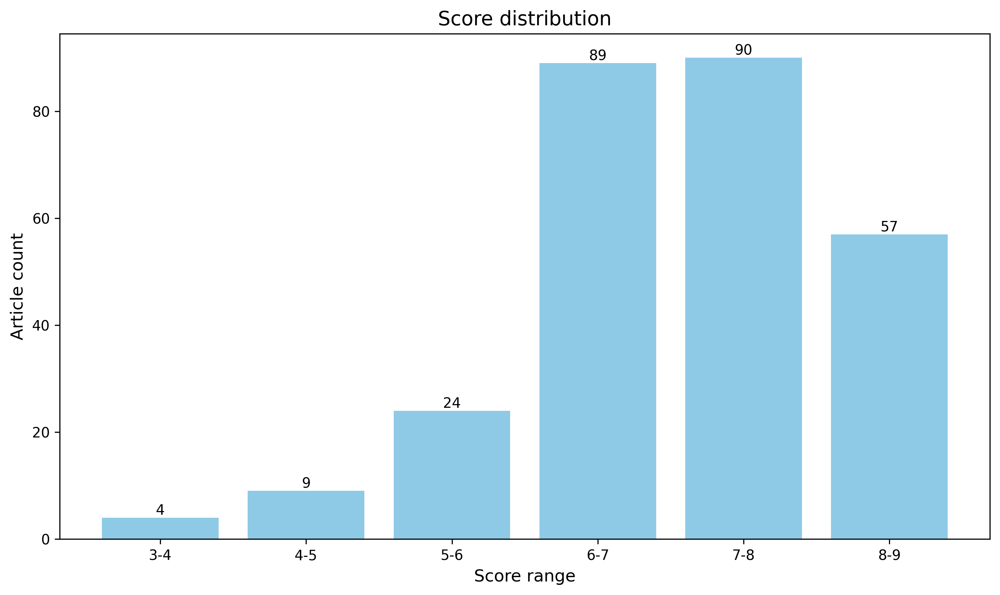

神经科学快讯·第027期 神经科学周报：新皮层长程抑制驱动睡眠同步化、血清素投射组架构与全器官成像 (2026-09-13)
📊 本周概览
- 头条推荐: 0 篇
- 深度解读: 106 篇
- 简要提及: 131 篇
- 跨界启发: 0 篇
- 已过滤: 272 篇
🌏 环球视野

📊 评分分布
| 评分区间 | 文章数量 |
|---|---|
| 3-4 | 4 |
| 4-5 | 9 |
| 5-6 | 24 |
| 6-7 | 89 |
| 7-8 | 90 |
| 8-9 | 57 |
总计: 273 篇评分文章
📈 各领域文章分布
| 领域 | 深度解读 | 简要提及 | 总计 |
|---|---|---|---|
| 临床与转化神经科学 | 31 | 20 | 51 |
| 未知领域 | 0 | 39 | 39 |
| 分子与细胞神经科学 | 18 | 15 | 33 |
| 系统与环路神经科学 | 21 | 7 | 28 |
| 方法学 | 11 | 9 | 20 |
| 感觉与运动神经科学 | 8 | 11 | 19 |
| 认知神经科学 | 7 | 10 | 17 |
| 计算与理论神经科学 | 3 | 10 | 13 |
| 发育神经科学 | 5 | 5 | 10 |
| 社会与情感神经科学 | 2 | 5 | 7 |
合计: 深度解读 106 篇，简要提及 131 篇，共 237 篇
📚 精选文献（按领域分类）
临床与转化神经科学
中文标题: 阿尔茨海默病亚型分型方法及共病理的作用
作者: Gawor K, Statz K, Schaeverbeke J et al.
关键词: 阿尔茨海默病, 亚型分型, 共病理, 神经影像, 生物标志物, 机器学习
亮点: 系统整合阿尔茨海默病亚型分类与共病理作用，为理解疾病异质性和精准分型提供关键框架。
核心优势: 由神经病理学权威团队撰写，紧扣AD亚型与共病理这一前沿争议，兼顾病理、影像和生物标志物视角。
研究局限: 综述性质，缺少原始数据验证；亚型定义、共病理贡献权重及临床转化路径仍受尸检队列异质性和标志物局限性影响。
目标读者: 阿尔茨海默病与神经退行性疾病研究者、神经病理学家、临床神经科学家及生物标志物/计算建模人员
推荐理由: 该工作系统梳理了阿尔茨海默病亚型分型的主要路径，并强调共病理在解释临床与病理异质性中的关键作用。它把神经影像、生物标志物与尸检证据整合到同一框架，提示单纯淀粉样蛋白视角不足以刻画疾病轨迹。对推动精准诊断、患者分层和靶向治疗试验设计具有直接价值，也为计算建模与多组学整合提供了可操作的分类思路。
中文标题: 自身抗体介导的中枢神经系统疾病致病性级联反应
作者: Montini F, Wing E, Herman M et al.
关键词: 自身抗体, 中枢神经系统, 自身免疫脑炎, 补体激活, 血脑屏障, 神经炎症
亮点: 以‘致病级联’为主线整合自身抗体介导CNS疾病的机制、临床异质性与靶向干预策略。
核心优势: 由Mayo Clinic神经免疫权威团队撰写，预期将临床表型与致病机制纵向串联，形成可操作的机制框架。
研究局限: 综述性质，缺乏原始实验数据；仅凭标题与作者信息无法确认是否系统覆盖所有自身抗体亚型及阴性结果，且致病级联框架可能偏重已知机制。
目标读者: 神经免疫学家、临床神经科医师、自身抗体脑炎/脱髓鞘疾病研究者及转化医学团队
推荐理由: 本文聚焦自身抗体介导的中枢神经系统疾病，从抗体产生、血脑屏障穿越、Fc受体与补体依赖效应到神经元功能损伤，梳理通往致病性的级联环节。其价值在于将分散的临床表型与细胞/分子机制整合为可检验的病理框架，提示针对不同级联节点的分层治疗策略。对关注自免脑炎、NMOSD、MOGAD等疾病的读者，本文有助于理解生物标志物与靶向干预之间的转化逻辑。
中文标题: 阿尔茨海默病病理级联的时序
作者: Pelkmans W, Bikou V, Salvadó G
关键词: 阿尔茨海默病, 生物标志物, 疾病级联, tau蛋白, 淀粉样蛋白, 纵向队列
亮点: 系统整合AD病理级联的时间顺序与生物标志物动态，为早期干预提供时间窗框架
核心优势: 从多模态生物标志物和神经病理学证据中提炼AD级联时间轴，批判性评估现有模型并提出未来方向。
研究局限: 综述性质缺乏原始数据验证，不同队列和检测方法间的异质性可能限制时间轴的普适性。
目标读者: 阿尔茨海默病、神经退行性疾病、生物标志物和临床神经科学研究者
推荐理由: 该研究以“计时”为核心问题，系统刻画了阿尔茨海默病病理级联的时间顺序与动态关系，把淀粉样蛋白沉积、tau扩散、神经退行与临床症状置于同一时间轴上加以量化。其价值在于：一是为生物标志物序列提供可检验的时间框架，有助于界定临床前窗口与干预时机；二是所采用的数据驱动建模思路可推广至其他神经退行性疾病的级联推断。对关注早期诊断、临床试验入组标准与疾病修饰治疗的读者具有直接参考意义，也提示计算神经科学家在跨尺度时序建模上仍有大量可开拓空间。
中文标题: 阿尔茨海默病中的骨髓髓系生成功能障碍限制单核细胞向脑内归巢并驱动疾病进展
作者: Miguel Angel Abellanas, Leyre Basurco, Michal Schwartz
资深研究者: Michal Schwartz (h指数=105)
关键词: 阿尔茨海默, 神经免疫, 骨髓造血, 单核细胞, I型干扰素, 细胞归巢
亮点: 揭示AD中骨髓髓系造血受I型干扰素驱动而失调，进而限制单核细胞归巢到脑并推动疾病进展，将AD从脑内病理拓展为系统性免疫代谢轴问题。
核心优势: 以5×FAD小鼠和AD患者循环单核细胞为证据链，结合IFN-I中和抗体与IFNAR缺陷骨髓重建，建立从骨髓造血异常到单核细胞归巢受损及病理加重的因果通路。
研究局限: 摘要未展示完整认知行为恢复数据与人脑内因果证据；5×FAD模型和全身性IFN-I阻断的特异性、长期安全性及跨模型普适性仍需全文验证。
目标读者: 神经免疫学、阿尔茨海默病、髓系造血与系统免疫、以及神经退行性疾病治疗开发研究者
推荐理由: 该研究把AD免疫治疗瓶颈从脑内微环境推进到骨髓造血端，发现5×FAD小鼠和患者存在单核细胞分化障碍，并由I型干扰素介导的骨髓适应不良反应驱动。这一机制既解释了为何单核细胞自发归巢不足、疾病进展加速，也提示恢复髓系输出或校正IFN-I信号可能增强骨髓来源巨噬细胞对Aβ病理的清除。对神经免疫与AD转化研究具有直接启发。
中文标题: 整合单核图谱解析阿尔茨海默病细胞类型特异性程序与分子亚型
作者: Rahimzadeh, N., Morabito, S., Khullar, S. et al.
关键词: 单核转录组, 人类, 阿尔茨海默病, 全脑, GWAS整合, 细胞类型
亮点: 跨13项研究、超过300万核的整合单核图谱解析AD细胞类型特异程序，并以MONET框架划分四种分子亚型。
核心优势: 前所未有的样本规模与跨队列整合，结合协变量校正和掩码变分自编码器识别可重复的AD分子亚型，并提供AI交互式查询资源。
研究局限: 以观察性单核转录组为主，亚型划分与候选治疗提名缺乏正交实验验证；跨研究批次效应、供体水平和临床异质性对亚型稳定性的影响仍需独立队列确认。
目标读者: 阿尔茨海默病、单细胞/空间组学、神经免疫、计算生物学与药物发现研究者
推荐理由: 该研究整合13项研究、791例个体、逾300万细胞核，构建了覆盖AD、轻度认知障碍与正常衰老的panAD图谱，首次系统性地把个体间异质性从“数据集噪声”转化为可解析的生物学维度。其核心价值在于：AD的分子架构在细胞类型层面高度可重复，共表达模块与神经病理及认知衰退直接挂钩，且GWAS风险基因多处于下游被调控位置——这一方向性结论对靶点优先级排序具有实质意义。作者进一步据此划分分子亚型，为患者分层、生物标志物选择和临床试验入组提供了可操作的框架，也为单细胞数据跨队列整合与可重复性评估树立了方法学标杆。
Multimodal discovery of a pathogenic B cell-dependent T cell state in multiple sclerosis.
深度解读 8.0/10中文标题: 多发性硬化中致病性B细胞依赖性T细胞状态的多模态发现
作者: Farooq R, Cutler B, Pisa M et al.
关键词: 多发性硬化, B细胞, T细胞, 单细胞测序, 神经免疫, 多模态
亮点: 多模态免疫图谱锁定多发性硬化中依赖B细胞的致病性T细胞状态，为B-T细胞互作靶向治疗提供新方向。
核心优势: 将多模态发现与B细胞依赖性致病机制直接关联，有望推动MS中T细胞靶向策略从泛化免疫抑制转向更精准的细胞状态干预。
研究局限: 仅凭标题和有限信息难以判断是否具备跨队列、纵向样本及功能因果验证；若主要基于相关性图谱，则B细胞依赖性的因果链和临床转化价值仍需强化。
目标读者: 神经免疫学、多发性硬化、B/T细胞免疫学及单细胞多组学研究者
推荐理由: 该研究以多模态策略锁定多发性硬化中由B细胞依赖的致病性T细胞状态，将B细胞信号与T细胞功能异常直接关联。其价值在于超越传统亚群分类，从细胞状态层面解析神经免疫致病轴，并可能提供可追踪的生物标志物与治疗靶点。对关注MS、自身免疫和神经炎症的转化研究者具有重要参考意义。
中文标题: 自身免疫性脑炎中IgLON5自身抗体识别的结构基础
作者: Angelique Roux, Rachel Schelling, Laurent Perez
关键词: 自身免疫脑炎, IgLON5, 自身抗体, B细胞受体, 结构基础, tau病理
亮点: 解析抗IgLON5自身抗体与神经元黏附分子的复合物结构，揭示其通过促进IgLON5高级簇集而非阻断黏附界面致病的结构机制。
核心优势: 整合患者BCR repertoire、人源单克隆IgG4分离、cryo-EM结构与生化分析，直接建立抗体结合模式与IgLON5簇集之间的机制联系。
研究局限: 证据主要基于单例患者的单一单克隆抗体，缺乏体内功能验证及簇集增强如何驱动tau病理和神经退化的因果关系证据。
目标读者: 神经免疫学、结构生物学、自身免疫性脑炎及神经元黏附分子研究领域的研究者
推荐理由: 该研究聚焦抗IgLON5病这一自身免疫与神经退行交界处的罕见脑炎，结合患者B细胞受体库分析与IgLON5自身抗体识别的结构解析，揭示了高度多克隆、缺乏优势克隆扩增的抗体反应特征。其价值在于把临床表型、抗体分子机制与tau病理/脑功能障碍联系起来，为理解自身抗体如何靶向神经元黏附分子提供了结构框架，也可能为诊断分层和靶向免疫治疗提供线索。
中文标题: 神经退行性疾病的数据驱动神经病理学建模：如何实施人工智能？
作者: Thal DR, Schaeverbeke J
关键词: 人工智能, 神经退行, 病理建模, 数据驱动, 机器学习, 多模态
亮点: 系统梳理AI在神经退行性疾病神经病理学数据驱动建模中的实施路径与瓶颈，为计算病理学和临床转化提供批判性框架。
核心优势: 从神经病理学与AI交叉视角，提出数据驱动建模落地需解决的数据、模型可解释性和验证等关键问题。
研究局限: 作为综述/观点文章，不提供原始实验验证；对具体算法、跨中心泛化和监管路径的覆盖可能受篇幅与视角限制。
目标读者: 神经病理学、神经退行性疾病、计算病理学、AI/机器学习及临床转化研究者
推荐理由: 该综述聚焦如何将人工智能落地于神经退行性疾病的神经病理建模，系统梳理数据驱动方法在病理特征提取、跨模态整合与疾病进展预测中的应用。其价值在于把临床病理问题与可实现的AI流程连接起来，讨论数据异质性、标注稀缺和模型可解释性等关键挑战。对神经科学读者而言，它为从常规病理切片到计算模型转化提供了路线图，尤其有助于AD/PD等疾病的早期分层与试验终点设计。
中文标题: SNCA-A53T转基因猴中α-突触核蛋白聚集和脑萎缩与帕金森综合征相关
作者: Wei J, Li S, Duan D et al.
关键词: α-突触核蛋白, SNCA-A53T, 转基因猴, 帕金森病, 脑萎缩, 非人灵长类
亮点: SNCA-A53T转基因猴将α-突触核蛋白聚集、脑萎缩与帕金森样表型三者关联，为帕金森病转化研究提供大动物模型。
核心优势: 在非人灵长类中整合α-突触核蛋白病理、脑影像萎缩和帕金森样行为，提供与人类更接近的转化证据。
研究局限: 研究以相关性为主，样本量可能有限，α-突触核蛋白聚集、脑萎缩与帕金森样表型之间的因果关系和机制仍待验证。
目标读者: 帕金森病与α-突触核蛋白病研究者、神经退行性疾病动物模型与转化神经科学家
推荐理由: 该研究在SNCA-A53T转基因猴中建立了α-突触核蛋白聚集、脑萎缩与帕金森样表型之间的相关性，为帕金森病转化研究提供了更接近人类遗传背景和脑结构的非人灵长类模型。其价值在于将病理蛋白、影像学退变和临床行为串联起来，有助于验证早期生物标志物和疾病修饰疗法，并推动从啮齿类到灵长类的机制与治疗转化。
中文标题: 亨廷顿病血管病变具有屏障类型选择性和小动脉优势，并与空间耦合的星形胶质细胞增生相关，且可通过S1pr1刺激逆转
作者: Krzysztof Kucharz, Rana Soylu-Kucharz, Martin Johannes Lauritzen
资深研究者: Krzysztof Kucharz (h指数=13); Rana Soylu-Kucharz (h指数=17)
关键词: 亨廷顿病, 血脑屏障, 脑血管病变, 星形胶质细胞, S1PR1, 神经血管单元
亮点: 揭示亨廷顿病血管病变具有屏障类型选择性和小动脉优势，并与星形胶质细胞增生空间耦合，且可通过S1pr1刺激逆转。
核心优势: 将HD血管病理、胶质细胞空间耦合与可逆药理学干预整合，提出S1pr1作为潜在治疗靶点。
研究局限: 缺少摘要与全文细节，无法评估样本量、模型种类、因果机制及S1pr1干预的长期行为学获益和安全性。
目标读者: 神经退行性疾病、血管生物学、胶质细胞生物学和血脑屏障研究领域的科研人员与转化医学研究者。
推荐理由: 该研究聚焦亨廷顿病中的脑血管病变，发现其具有屏障类型选择性和小动脉优势，并与空间耦合的星形胶质细胞增生相关。更重要的是，S1pr1刺激可逆转该表型，提示血管-胶质互作不仅是HD神经退行的伴随现象，也可能是可干预靶点。研究将神经血管单元、细胞信号与转化治疗连接起来，对理解HD及其他神经退行性疾病的BBB功能障碍和胶质反应具有参考价值。
When, how fast and which way: from phenoconversion to personalized progression in synucleinopathy.
深度解读 7.7/10中文标题: 何时、多快以及以何种方式：从表型转化到突触核蛋白病的个体化进展
作者: Nepozitek J, Kulcsarova K, Dusek P
关键词: 突触核蛋白病, 帕金森病, 前驱期转化, 疾病进展建模, 个性化预测, 生物标志物
亮点: 以‘何时、多快、哪条路径’为轴，整合突触核蛋白病从表型转化到个体化进展的多维框架。
核心优势: 选题切中突触核蛋白病早期诊断与异质性进展的核心难题，并强调个体化分层，具有较强临床转化导向。
研究局限: 仅有标题与期刊信息，无法判断文献覆盖的系统性、批判深度及是否提出可验证的新框架；综述本身不提供原始数据。
目标读者: 运动障碍/神经退行性疾病临床研究者、生物标志物与个体化医学研究者、计算神经病学与系统生物学建模者。
推荐理由: 该文围绕突触核蛋白病从前期到显性阶段的异质性，梳理了“何时发生表型转化、进展多快、沿何种轨迹演变”的核心问题。其价值在于将临床表型、生物标志物与进展建模整合到个体化分层框架中，为帕金森病、路易体痴呆及多系统萎缩的早期识别、预后判断和临床试验分层提供可操作思路。对关注神经退行性疾病动态预测与转化研究的读者尤其值得一读。
中文标题: 肌萎缩侧索硬化与额颞叶痴呆中认知和行为的概念化
作者: Benatar M, Huey ED, Onyike CU et al.
关键词: ALS, FTD, 人类, 认知行为, 前额叶, 临床表型
亮点: 统一ALS与FTD的认知-行为概念框架，澄清疾病连续谱中的表型异质性与评估边界。
核心优势: 由多学科权威团队整合ALS/FTD认知行为表型，提出跨疾病谱的概念澄清与评估建议。
研究局限: 作为概念性综述，缺乏系统综述方法学与定量证据合成，框架的可操作性和外部验证有限。
目标读者: ALS/FTD、额颞叶痴呆、认知行为神经病学及临床神经心理评估研究者
推荐理由: 该文系统梳理了肌萎缩侧索硬化（ALS）与额颞叶痴呆（FTD）之间在认知和行为表型上的重叠与异质性，提出跨疾病谱的概念框架。其价值在于超越以运动症状为中心的经典分类，把执行功能、语言、社会认知和行为改变纳入统一评估维度，为临床表型分层、生物标志物关联和试验终点设计提供可操作思路。对关注神经退行性疾病的认知与转化研究者而言，该框架有助于理解TDP-43病理连续谱上的脑网络受累与行为异质性。
To sleep and dream: Unraveling narcolepsy.
深度解读 7.6/10中文标题: 睡眠与做梦：解析发作性睡病
作者: Friedman JM
关键词: 发作性睡病, 睡眠-觉醒环路, 食欲素, 下丘脑, REM睡眠, 猝倒
亮点: 以食欲素/下丘脑泌素系统为主线，系统串联发作性睡病从环路机制到临床转化的一体化叙事
核心优势: 在PNAS平台上把发作性睡病的遗传学、食欲素神经元丢失机制与新兴疗法（双重食欲素拮抗剂、食欲素激动剂、细胞与基因治疗）整合为清晰的转化框架，时效性强。
研究局限: 单作者观点/综述文体，缺乏原始数据与系统性文献计量覆盖，对快速扩张的食欲素激动剂临床试验数据多为叙述性而非批判性定量比较，结论的可验证性受限。
目标读者: 睡眠神经科学家、食欲素/下丘脑泌素研究者、睡眠医学与转化神经病学临床研究者
推荐理由: 该文聚焦发作性睡病这一典型睡眠-觉醒障碍，围绕下丘脑食欲素（hypocretin）神经元丢失、REM睡眠调控异常与猝倒等核心表型，串联遗传、自身免疫和神经环路机制。其价值在于把临床异质性、梦境/REM生物学与转化干预放在同一框架下，既有助于神经科医生理解诊断分型，也为睡眠-觉醒环路的机制研究提供可检验的假说与靶点。
中文标题: 脑室周围白质病变是否指示帕金森病中的胆碱能或网络脆弱性？
作者: Liu S, Han D, Li J
关键词: 帕金森病, 白质病变, 胆碱能, 脑网络, 神经影像, 扩散MRI
亮点: 以评论视角追问脑室周围白质病变究竟反映胆碱能去神经支配还是网络易损性，推动PD影像标志物的机制解读。
核心优势: 问题意识明确，直击帕金森病白质病变机制解释中的核心争议，有助于整合影像与神经病理视角。
研究局限: 属观点/评论类文章，通常不提供原始数据；且仅凭标题与书目信息无法全面评估文献覆盖、论证深度和具体建议。
目标读者: 帕金森病临床与基础研究者、神经影像标志物与胆碱能/网络易损性方向的研究者
推荐理由: 该研究聚焦帕金森病中脑室周围白质病变的机制归属，比较胆碱能去支配与网络脆弱性两种解释。其价值在于把结构性影像标志物与神经递质/环路假说连接起来，有助于重新评估白质高信号在PD认知与运动进展中的临床意义，并为筛选胆碱能或网络靶向干预提供影像分层思路。
Corticostriatal connectivity in monozygotic twin pairs discordant for obsessive-compulsive disorder.
深度解读 7.5/10中文标题: 强迫症不一致的单卵双生子对中的皮质纹状体连接
作者: Beucke JC, May L, Diez I et al.
关键词: 人类, 强迫症, 皮质纹状体, 功能连接, 同卵双胞胎, 神经影像
亮点: 利用单卵双生子不一致设计，将OCD相关的皮质-纹状体连接改变从遗传与共享环境背景中剥离出来。
核心优势: 单卵双生子不一致样本能有效控制遗传和共享环境混杂，为OCD皮质-纹状体环路异常提供较强的类因果证据。
研究局限: 横断面静息态连接无法确立因果方向，且不一致双生子样本量通常有限，药物与代偿效应可能残余混杂。
目标读者: 强迫症与精神疾病神经影像、皮质-纹状体环路、双生子遗传学及计算精神病学研究者
推荐理由: 该研究利用同卵双胞胎不一致强迫症设计，精准分离遗传易感性与疾病特异性效应，系统刻画了皮质纹状体连接异常。结果不仅强化了强迫症的环路病理模型，也为临床生物标志物开发提供了高证据等级线索。对关注精神疾病连接组学、遗传-影像交叉的读者具有重要参考价值。
Data-driven modelling of tau pathology reveals distinct progressive supranuclear palsy subtypes.
深度解读 7.5/10中文标题: 对tau病理的数据驱动建模揭示不同的进行性核上性麻痹亚型
作者: Cullinane PW, Parmera JB, Nelvagal H et al.
关键词: tau蛋白, PSP, 数据驱动建模, 亚型分型, 神经退行, 计算建模
亮点: 基于数据驱动的tau病理建模识别进行性核上性麻痹的离散亚型，为异质性tau病提供可复现的分型框架。
核心优势: 将数据驱动建模应用于tau病理，有望从临床和病理异质性中提炼出具有诊断或预后意义的PSP亚型。
研究局限: 仅凭标题与书目信息无法评估队列规模、外部验证及病理金标准，亚型稳健性和泛化性仍待检验。
目标读者: 临床神经病学、tau蛋白病、神经影像、计算神经科学与精准医学研究者
推荐理由: 该研究以数据驱动方式刻画tau病理在进行性核上性麻痹（PSP）中的异质性，识别出不同的进展性亚型。其价值在于把病理分布、临床表型与计算分型联系起来，提示PSP并非单一疾病实体，而可能由若干具有不同轨迹的亚群构成。对神经科学读者而言，这为理解4R tau病的机制异质性、改进诊断分层与临床试验入组提供了可检验的框架，也展示了计算建模在神经退行性疾病精准医学中的潜力。
中文标题: 抑制纤连蛋白可恢复内皮TNFR2依赖的非缓解型实验性自身免疫性脑脊髓炎中的髓鞘形成
作者: Nanou A, Apostolou-Karampelis K, Triantafyllidou V et al.
关键词: 多发性硬化, EAE模型, 髓鞘再生, TNFR2, 纤连蛋白, 内皮细胞
亮点: 内皮TNFR2–纤连蛋白轴驱动非缓解型EAE的髓鞘修复障碍，抑制纤连蛋白可恢复髓鞘形成。
核心优势: 将内皮炎症信号TNFR2、细胞外基质纤连蛋白沉积与髓鞘修复失败直接关联，提供可干预的转化靶点。
研究局限: 基于EAE动物模型，缺少人类MS组织与临床验证；机制网络、细胞特异性及纤连蛋白抑制的长期安全性仍需排除。
目标读者: 神经免疫学、多发性硬化、血管生物学、髓鞘修复与转化医学研究者
推荐理由: 该研究在内皮细胞TNFR2依赖的非缓解性EAE模型中，揭示纤连蛋白沉积是髓鞘修复失败的关键环节，抑制纤连蛋白可恢复髓鞘形成。工作把神经血管单元、炎症信号与髓鞘再生联系起来，为多发性硬化等脱髓鞘疾病提供了靶向内皮-细胞外基质轴的治疗思路。
中文标题: 建模血浆p-tau217、淀粉样蛋白PET、tau PET与认知的时间演变
作者: Cogswell PM, Lundt ES, Therneau TM et al.
关键词: 阿尔茨海默病, p-tau217, 淀粉样PET, tau PET, 认知衰退, 计算建模
亮点: 用纵向多模态建模刻画血浆p-tau217、Aβ PET、tau PET与认知的时间演化序列，为AD生物标志物级联提供量化时间轴。
核心优势: 在大型纵向队列中联合血浆与影像生物标志物，系统估计AD相关指标随疾病进展的动态先后关系。
研究局限: 仅凭标题与作者信息无法评估模型假设、队列代表性、外部验证及是否超越已知生物标志物级联；可能属于重要验证性进展而非范式突破。
目标读者: 阿尔茨海默病临床研究、生物标志物、神经影像与统计建模研究者
推荐理由: 该研究通过建模血浆p-tau217、淀粉样蛋白PET、tau PET与认知的纵向轨迹，刻画了AD生物标志物级联的时间顺序与个体差异。其价值在于将多模态生物标志物整合为可量化的疾病进展模型，为早期诊断、临床试验入组与疗效监测提供时间窗参考。对关注AD转化研究和纵向建模的读者尤为值得一读。
CReP-mediated control of eIF2α phosphorylation is a critical node in MYC-driven medulloblastoma
深度解读 7.3/10中文标题: CReP介导的eIF2α磷酸化调控是MYC驱动髓母细胞瘤的关键节点
作者: Liliana Mirabal-Ortega, Sandra Majo, Celio Pouponnot
关键词: 髓母细胞瘤, MYC, eIF2α, CReP, 翻译调控, 整合应激反应
亮点: 靶向CReP-eIF2α磷酸化节点可能成为MYC驱动髓母细胞瘤的翻译控制脆弱点。
核心优势: 将整合应激反应/翻译调控中的CReP-eIF2α轴与MYC驱动髓母细胞瘤直接联系，提示具有转化潜力的治疗节点。
研究局限: 未提供摘要/全文，无法核实实验设计、独立验证和患者相关性；且靶向翻译控制节点在正常脑发育中的安全性和治疗窗口仍需验证。
目标读者: 神经肿瘤学、髓母细胞瘤、整合应激反应/翻译调控、MYC信号及转化医学研究者
推荐理由: 该研究揭示CReP介导的eIF2α去磷酸化调控是MYC驱动髓母细胞瘤的关键节点，将整合应激反应与翻译控制直接连接到致癌性MYC网络。其价值在于指出肿瘤细胞对蛋白稳态的依赖，并提示CReP/eIF2α轴可作为潜在治疗靶点，为Group 3髓母细胞瘤的精准干预提供新思路。
中文标题: 用可扩展的脑连接组约束动态模型发现神经退行性进展亚型
作者: Daniel Semchin, Emile d'Angremont, Hao Ding et al.
关键词: 帕金森病, 连接组, 疾病进展, 影像形态测量, 亚型分型, 纵向建模
亮点: 连接组约束的动态模型可同时估计帕金森病个体化疾病时间并发现与临床及遗传特征相关的进展亚型。
核心优势: 将连接组约束、疾病时间估计与数据驱动亚型发现整合到同一可扩展框架中，并在匹配协议下优于SuStaIn，且亚型与运动临床分型和遗传变异显著关联。
研究局限: 目前仅为arXiv摘要，无法评估模型假设、超参数敏感性、外部纵向验证和样本代表性；证据主要来自PPMI单队列，尚缺独立多中心前瞻性验证。
目标读者: 计算神经科学、神经影像、帕金森病与神经退行性疾病研究、临床神经病学及系统生物学研究者
推荐理由: 该研究提出连接组约束的动态疾病进展模型，将纵向形态测量中的个体疾病时间与数据驱动亚型联合估计，并在PPMI队列的85项影像与临床标志物中识别出四种形态学上可区分的帕金森病进展亚型。模型在留出横断面数据上得到验证，并与SuStaIn在匹配条件下基准比较，显示出可扩展性与稳健性。其价值在于把脑连接先验引入疾病轨迹建模，既提升亚型发现的生物学可解释性，也为帕金森病等神经退行性疾病的早期分层、预后判断和临床试验入组提供计算框架，对临床转化与计算神经科学交叉研究具有示范意义。
中文标题: MOG抗体相关疾病治疗停药的最佳策略
作者: Yeh WZ, Francis A, Cooper S et al.
关键词: MOGAD, 治疗停用, 复发风险, 神经免疫, 临床决策, 人类
亮点: 针对MOGAD停用维持治疗后的复发风险与最佳停药时机，提供真实世界队列证据和临床决策参考。
核心优势: 直击MOGAD治疗 discontinuation 的临床未满足需求，若基于多中心队列可帮助识别停药后高复发风险人群并优化治疗时长。
研究局限: 观察性设计难以完全控制混杂和适应证偏倚，且MOGAD为罕见病，样本量和亚组分析可能受限，结论需前瞻性验证。
目标读者: 神经免疫学、临床神经病学、罕见病及神经抗体相关疾病研究者与临床医生
推荐理由: 该研究聚焦MOG抗体相关疾病（MOGAD）免疫治疗的停药策略，针对临床最棘手的“何时停、停后复发风险多大”问题，可能通过队列或预测分析评估停药与继续治疗的结局差异，并识别复发危险因素。对神经免疫与转化医学读者而言，其价值在于把治疗时长决策从经验推向风险分层，有助于减少不必要的长期免疫抑制及其副作用，同时降低停药后复发风险。
Impairment of hippocampal gamma oscillations, mitochondria and neurovascular function in CADASIL.
深度解读 7.2/10中文标题: CADASIL 中海马 γ 振荡、线粒体和神经血管功能的损害
作者: Shao W, Oliveira DV, Naia L et al.
资深研究者: Li Y (h指数=60)
关键词: CADASIL, 海马, gamma振荡, 线粒体, 神经血管耦合, 电生理
亮点: 在CADASIL中把海马γ振荡、线粒体损伤与神经血管功能障碍联系起来，提示血管性认知障碍的多层次机制。
核心优势: 多模态功能与机制验证：将网络水平γ振荡异常与线粒体、神经血管功能缺陷整合到同一疾病模型中。
研究局限: 很可能以 preclinical 模型为主，因果链和向患者/临床转化的直接证据仍有限，且摘要缺失使方法学细节无法充分核验。
目标读者: 血管性认知障碍、CADASIL、神经血管耦合、线粒体与脑网络振荡研究者
推荐理由: 该研究在CADASIL模型中系统刻画了海马gamma振荡、线粒体功能与神经血管耦合的协同损伤，将脑小血管病的血管/代谢缺陷与神经网络节律异常直接联系起来。其价值在于超越单纯结构病理描述，提出gamma振荡可作为跨尺度功能读出，并为理解血管性认知障碍的早期机制及靶向线粒体/神经血管单元的治疗策略提供依据。
中文标题: 半暗带来源的小细胞外囊泡携带致病性RNA驱动皮质梗死后远端损伤
作者: Deng D, Wu Y, Wu P et al.
关键词: 皮层梗死, 缺血半暗带, 小细胞外囊泡, 致病RNA, 远程损伤, 神经炎症
亮点: 皮层梗死半暗带来源的小细胞外囊泡携带致病RNA，驱动远端损伤，为卒中后远隔损害提供新机制与潜在靶点。
核心优势: 将细胞外囊泡RNA货物与卒中后远端损伤直接联系，概念新颖且转化潜力明确。
研究局限: 仅凭标题无法评估EV分离纯度、RNA因果实验、远端损伤模型及排除炎症/循环等混杂因素的能力。
目标读者: 卒中、神经修复、细胞外囊泡与RNA生物学研究者，以及神经科转化医学人员。
推荐理由: 该研究揭示皮层梗死后半暗带来源的小细胞外囊泡可携带致病RNA，经细胞间传递在远端脑区诱发继发性损伤，把卒中损伤从局部核心扩展到网络化远程病理。其价值在于提出EV-RNA作为卒中远程损伤的新型介质与潜在干预靶点，提示临床需关注再灌注后的远端退变风险，并为开发阻断EV生成/摄取或RNA负载的治疗策略提供了方向。
Perfusion-dependent spreading depolarization signatures identify tissue vulnerability in stroke.
深度解读 7.1/10中文标题: 灌注依赖性扩散去极化特征识别卒中中的组织易损性
作者: Flaherty SM, Eladly A, Hills K et al.
关键词: 脑卒中, 扩散性去极化, 脑灌注, 组织易损性, 缺血半暗带, 多模态监测
亮点: 把扩散性去极化（SD）的电生理特征与局部灌注水平直接耦合，用「灌注依赖的SD特征谱」来标记卒中中真正易损的脑组织。
核心优势: 将长期被视为弥漫性/全局性事件的扩散性去极化，拆解为与局部灌注阈值绑定的可量化特征，为半暗带与组织易损性判定提供了一个兼具生理机制与影像可解释性的候选标志物。
研究局限: 仅凭标题与期刊信息难以评估：SD检测手段（侵入性皮层电极、ECoG阵列还是无创影像替代指标）、队列规模与随访设计、以及SD与灌注下降之间的因果方向（SD驱动损伤 vs 缺血后的继发现象）均不明确，缺乏外部验证与阈值可推广性证据。
目标读者: 卒中与神经重症研究者、神经影像与脑血流/神经血管耦合方向学者，以及关注皮层扩散性去极化机制的电生理研究者
推荐理由: 该研究围绕脑卒中后扩散性去极化（SD）与局部灌注的耦合关系，提出可识别组织易损性的灌注依赖性SD特征。其价值在于把神经电生理事件与血流动力学状态联系起来，为理解缺血半暗带进展、判断可挽救组织及指导再灌注策略提供了转化型标志物思路。对关注卒中机制、神经重症监测和临床转化的读者而言，这是一项兼具机制解释与分层诊疗潜力的工作。
中文标题: 尺寸定制的纳米颗粒-抗体偶联物克服阿尔茨海默病治疗中的肝脏截留
作者: Du X, Liu N, Zhang T et al.
关键词: 纳米颗粒, 抗体偶联, 药物递送, 阿尔茨海默病, 肝脏滞留, 血脑屏障
亮点: 通过尺寸定制的纳米颗粒-抗体偶联物绕过肝脏截留，为阿尔茨海默病脑内递送提供新策略。
核心优势: 针对纳米药物肝截留这一关键瓶颈，提出尺寸工程与抗体偶联结合的递送方案，若在体内验证成功，可显著改善中枢神经系统生物利用度。
研究局限: 仅有标题和期刊信息，缺失摘要、实验设计、样本量、AD模型细节、疗效与安全性数据；发表时间标注为未来，无法验证研究真实性，评分置信度低。
目标读者: 纳米医学与药物递送、阿尔茨海默病转化研究、神经药理学、抗体工程及血脑屏障研究者
推荐理由: 该研究针对抗体类药物在阿尔茨海默病治疗中易被肝脏截留、脑内递送效率低的关键瓶颈，通过尺寸调控的纳米颗粒-抗体偶联物优化体内分布，减少肝滞留并增强脑靶向与治疗效果。其核心价值在于为CNS大分子治疗提供可转化的递送策略，并提示纳米载体尺寸是决定AD抗体疗效的重要参数。对关注AD治疗、脑靶向递送和生物制剂转化的神经科学读者具有直接参考意义。
中文标题: 超声辅助基因治疗减轻 Leigh 综合征病理
作者: Faideau M, Clément R, Rigollet S et al.
关键词: 聚焦超声, 基因治疗, Leigh综合征, 血脑屏障, AAV载体, 线粒体病
亮点: 超声辅助基因治疗缓解Leigh综合征病理，为难治性线粒体病提供潜在无创递送治疗路径。
核心优势: 将无创超声递送与基因治疗结合，靶向Leigh综合征这一缺乏有效疗法的严重线粒体病，具有较强转化潜力。
研究局限: 仅有标题与期刊信息，缺少摘要、实验设计、动物模型、对照设置和疗效数据，无法充分判断机制创新性与证据可靠性。
目标读者: 神经遗传病、线粒体医学、基因治疗、超声递送和转化神经科学研究者
推荐理由: 该研究将超声辅助递送与基因治疗结合，用于缓解Leigh综合征的神经病理，核心价值在于以微创方式跨越血脑屏障，提高中枢神经系统基因递送的区域特异性和效率。对神经科学读者而言，它不仅提供了线粒体病基因治疗的新策略，也展示了聚焦超声作为CNS递送平台在临床转化中的潜力。若能在长期安全性、表达调控和大型动物模型中进一步验证，该思路有望拓展至其他难治性神经退行性疾病。
中文标题: 全局脑活动将皮层下退化与早期阿尔茨海默病阶段跨Braak区域的皮层tau积累逐步关联起来
作者: Yutong Mao, Baizhou Pan, Xiao Liu
关键词: ADNI, gBOLD, tau PET, NbM, 阿尔茨海默, 多模态影像
亮点: 将静息态 infra-slow 全脑 BOLD 活动作为连接基底前脑退化与皮层 tau 进展的候选功能中介，为早期 AD 亚皮层-皮层病理耦合提供新假说。
核心优势: 基于 ADNI 多模态数据，在早期 AD 阶段串联 NbM 体积、gBOLD 活动与 Braak 区域 tau 累积，提出可检验的功能通路框架。
研究局限: 以观察性关联和中介分析为主，缺乏纵向与因果验证；gBOLD 的神经生理来源仍有争议，NbM 体积和 tau PET 测量误差可能影响结论稳健性。
目标读者: 阿尔茨海默病神经影像、神经退行性疾病、tau PET/功能连接及计算神经科学研究者
推荐理由: 该研究利用ADNI多模态影像，将基底前脑Meynert核团退化、infra-slow全脑BOLD活动与皮层tau累积联系起来，发现NbM萎缩伴随gBOLD降低，且与tau空间共定位并随Braak区域递进。它首次在早期AD中把皮层下胆碱能损伤、全脑活动改变和tau扩散放在同一框架，为理解AD从皮层下到皮层的级联传播提供了影像学证据，并提示gBOLD可作为早期监测和干预评估的候选标志。
中文标题: 双侧theta爆发式刺激促进灵长类缺血性卒中后的神经修复与恢复
作者: Chen G, Wu M, Li G et al.
资深研究者: Li Y (h指数=60)
关键词: θ爆发刺激, 非人灵长类, 缺血性卒中, 神经修复, 神经调控, 功能恢复
亮点: 在灵长类缺血性卒中模型中验证双侧theta burst刺激促进神经修复与功能恢复的转化潜力
核心优势: 选题直击卒中康复的非药物神经调控转化需求，且采用非人灵长类模型提升临床相关性。
研究局限: 摘要缺失，无法核实样本量、对照、盲法、机制证据和长期恢复效果；TBS并非全新技术，突破性依赖具体方案与发现强度。
目标读者: 卒中康复、神经调控、转化神经科学和非人灵长类疾病模型研究者
推荐理由: 该研究在非人灵长类缺血性卒中模型中验证双侧theta burst刺激可促进神经修复与功能恢复，将神经调控从对症康复推向机制性修复。其价值在于：一是在更接近人类的皮层与白质结构上评估TBS，弥补啮齿类模型转化差距；二是提示双侧干预可能通过调节双侧半球交互与残余环路可塑性增强恢复。对卒中康复的刺激参数、治疗时间窗和个体化方案设计具有直接参考意义。
Salovum® reduces mortality in isolated severe traumatic brain injury: a randomized phase II trial.
深度解读 7.0/10中文标题: Salovum®降低孤立性重型创伤性脑损伤死亡率：一项随机II期试验
作者: Cederberg D, Harrington BM, Walker I et al.
关键词: 创伤性脑损伤, 随机对照试验, II期试验, 死亡率, 神经保护, 临床转化
亮点: 在孤立性重型颅脑创伤中，Salovum®的随机II期试验提示可降低死亡率，为这一高致死率疾病提供了潜在辅助治疗信号。
核心优势: 采用随机II期设计并以死亡率为临床硬终点，针对孤立性重型TBI这一高度未满足临床需求人群，若结果可重复则转化意义显著。
研究局限: 仅为II期试验，样本量与统计功效通常不足以确证死亡率获益，且缺少摘要层面的效应量、安全性与机制细节，尚需III期验证。
目标读者: 神经重症、颅脑创伤临床研究者、临床试验方法学家、神经外科与急救医学团队
推荐理由: 这项随机II期试验报告Salovum®可降低孤立性重型创伤性脑损伤患者的死亡率，为急性TBI缺乏有效干预的困境提供了候选治疗信号。若结果在III期试验中重复，并明确适宜人群、剂量窗口与作用机制，可能改变神经重症监护路径；对神经科学读者而言，它提示外周免疫或代谢干预也可能影响创伤后脑损伤结局，值得从转化角度跟踪。
Cytomegalovirus-induced T cell responses accelerate Alzheimer's disease progression in mice.
深度解读 7.0/10中文标题: 巨细胞病毒诱导的T细胞反应加速小鼠阿尔茨海默病进展
作者: Marsden M, McLaren JE, Bevan RJ et al.
关键词: 小鼠, 巨细胞病毒, T细胞, 阿尔茨海默病, 神经免疫, 疾病进展
亮点: CMV诱导的T细胞免疫反应可加速小鼠阿尔茨海默病进展，为感染-免疫轴干预AD提供临床前因果线索。
核心优势: 将巨细胞病毒感染、T细胞免疫应答与AD病理进展直接联系，切入神经免疫与感染病因学交叉热点。
研究局限: 仅有标题、无摘要和具体数据，无法评估模型严谨性、因果特异性、效应量及人类转化价值；且为小鼠研究，外推受限。
目标读者: 阿尔茨海默病、神经免疫学、感染与免疫、转化神经科学研究者
推荐理由: 该研究在小鼠模型中证明巨细胞病毒（CMV）诱导的T细胞反应可加速阿尔茨海默病（AD）进展，将慢性病毒感染与适应性免疫置于AD病理机制的关键位置。其价值在于提示感染史和免疫记忆可能作为AD进展的修饰因素，并为以T细胞应答为靶点的转化干预提供临床前证据。对关注神经免疫、衰老和神经退行性疾病的读者具有重要参考意义。
中文标题: 多系统萎缩的全X染色体关联研究识别性别差异风险位点
作者: Ray A, Chia R, Rasheed M et al.
摘要: 将多系统萎缩的遗传风险分析拓展至X染色体，并揭示性别差异性风险位点。
优势: 聚焦常被忽略的X染色体和性别差异，借助国际MSA基因组联盟开展X染色体全关联分析，选题具有明确遗传学和临床转化价值。 局限: 当前仅有标题信息，缺少样本量、X染色体统计方法、独立重复队列和功能验证等关键证据，无法充分判断方法学严谨性与结论可靠性。 受众: 神经遗传学、运动障碍疾病、多系统萎缩/突触核蛋白病及性染色体遗传学研究者
中文标题: 阿尔茨海默病中的突触相关神经病理标志物
作者: Barrantes FJ
摘要: 系统梳理AD中突触相关神经病理标志物，连接突触损伤机制与早期诊断和靶向治疗。
优势: 选题处于AD突触病理与液体/影像生物标志物转化的关键交汇点，且发表于Brain，作者为膜/突触受体领域资深学者。 局限: 仅凭标题无法评估文献覆盖、批判性整合与原创框架；单作者综述在广度和时效性上可能存在局限。 受众: AD病理机制、突触生物学、神经退行性生物标志物及药物开发研究者。
中文标题: 追踪阿尔茨海默病连续谱中Tau蛋白与抑郁症状的连续时间动态
作者: Markova TZ, Heston MB, Berry AS et al.
摘要: 用连续时间动态模型追踪AD连续谱中tau积累与抑郁症状的时序耦合，尝试厘清二者的先后关系。
优势: 基于ADNI纵向多模态数据，将tau PET与抑郁症状纳入连续时间框架，超越传统横断面相关分析。 局限: 观察性设计难以确立因果，抑郁症状量表异质性、tau PET区域与模型假设均可能影响时序方向推断。 受众: 阿尔茨海默病、神经影像、老年精神医学及纵向统计建模研究者
中文标题: MOG抗体相关疾病中复发风险何时变得可接受？
作者: Sechi E, Cortese R
摘要: 围绕MOG抗体相关疾病中复发风险与免疫治疗负担的平衡，探讨何时可考虑停药或降阶治疗。
优势: 由MOGAD领域专家发表于Brain，选题直击临床最迫切的停药决策难题，时效性和临床指向性强。 局限: 属于评论/观点类文章而非原创研究或系统综述；无摘要与全文细节，全面性和证据整合程度难以确认，结论可能受专家观点局限。 受众: 神经免疫学专科医生、脱髓鞘疾病临床研究者及MOGAD诊疗指南制定者
Transplantation of engineered spinal cord organoids restores functions after spinal cord injury.
简要提及 6.8/10中文标题: 移植工程化脊髓类器官在脊髓损伤后恢复功能
作者: Liu L, Xue W, Kong Y et al.
摘要: 工程化脊髓类器官移植在脊髓损伤后恢复功能，或推动再生医学向神经回路重建迈进。
优势: 将工程化脊髓类器官与脊髓损伤功能恢复直接关联，兼具再生医学与转化神经科学价值。 局限: 仅有标题且缺少摘要/全文，无法评估工程化策略原创性、移植存活与整合、功能恢复幅度、对照设计、长期安全性及独立验证。 受众: 脊髓损伤、再生医学、干细胞/类器官移植、神经工程与转化神经科学研究者
中文标题: 评估自动语音识别和大语言模型在语言障碍个体中的应用
作者: Gelei Xu, Haoxinran Yu, Ruiyang Qin
摘要: 系统评估ASR与大语言模型在语言障碍者语音上的表现，揭示包容性语音技术从实验室到临床的关键差距。
优势: 将ASR/LLM评估置于语言障碍真实场景，结合模型性能与临床可用性，对AI公平性和辅助沟通有直接参考价值。 局限: 仅凭标题与元数据无法确认多中心临床验证、跨语言/障碍类型泛化及长期部署效果；可能受限于现有数据集和模型版本。 受众: 语音与语言处理、临床神经科学、康复医学、AI公平性及辅助沟通研究者
Urban exposures, frailty, and mental illness in World Trade Center Health Program responders
简要提及 6.6/10中文标题: 城市暴露、衰弱与世贸中心健康计划响应者中的精神疾病
作者: Helena Krasnov, William Hung, Maayan Yitshak-Sade
摘要: 城市环境暴露与WTC救援人员衰弱和PTSD症状相关，且在既往毒物/创伤暴露更高中更明显，提示创伤史可能放大后续环境应激的慢性健康负担。
优势: 基于18,734名WTC救援人员的大型队列，同时评估PM2.5、温度和绿视率等城市暴露混合与衰弱、PTSD及抑郁等结局，并检验WTC暴露史的效应修饰。 局限: 观察性关联设计，效应量较小，暴露与结局的时序关系、残余混杂及生物学机制有限，且WTC队列的特殊性限制外推。 受众: 环境流行病学、精神卫生与神经心理、公共卫生及老龄化研究群体
中文标题: Spider-MS：多发性硬化症预后的个体化多面体预测
作者: Tur C, Susin-Calle S, Otero-Romero S et al.
摘要: 个体化多面体建模用于多发性硬化预后预测，可能推动精准分层工具落地。
优势: 提出Spider-MS个体化多面体预测框架，若验证充分可为MS预后提供多维整合的临床决策支持。 局限: 仅凭标题无法评估模型验证、样本量、多中心泛化、校准与临床净获益；且预后预测模型本身创新性通常有限。 受众: 多发性硬化临床研究者、神经免疫学与神经影像专家、临床预测建模与精准医学研究者
中文标题: ROS自催化纳米平台干扰星形胶质细胞-肿瘤细胞串扰并增强胶质母细胞瘤治疗
作者: Yun Chen, Zonghua Tian, Tao Sun
摘要: 利用ROS自催化纳米平台干预星形胶质细胞-胶质瘤细胞互作，为胶质母细胞瘤微环境靶向治疗提供新思路。
优势: 将ROS自催化放大与星形胶质细胞-肿瘤串扰调控结合，兼具微环境干预和增强杀伤的治疗潜力。 局限: 仅凭标题无法评估摘要、实验设计、体内靶向性、正常脑细胞毒性、长期安全性和临床转化可行性；证据强度与创新性判断置信度低。 受众: 神经肿瘤学、纳米医学、胶质瘤微环境与转化神经科学研究者
中文标题: 蛋白质组学指导的伴钙化与囊肿的白质脑病靶向治疗
作者: Briel N, Köpp A, Meister HM et al.
摘要: 以蛋白质组学指导罕见脑白质病伴钙化和囊肿的靶向治疗，探索个体化转化路径。
优势: 将蛋白质组学发现与罕见病临床治疗决策直接衔接，针对LCC这一高度未满足需求领域具有转化潜力。 局限: 缺少摘要和正文细节，无法判断样本量、对照设计、靶点验证与疗效证据强度；若为小样本开放标签研究，因果推断和普适性会明显受限。 受众: 神经遗传病、脑小血管病、临床蛋白质组学与转化神经病学研究者
中文标题: 中脑边缘-海马环路功能完整性与早期生活压力个体中的快感缺失相关
作者: O'Brien KJ, Elliott BL, O'Shea I et al.
摘要: 早期生活压力个体中，中脑边缘-海马环路功能完整性与快感缺失相关，为奖赏-应激交互提供影像学线索。
优势: 将早期生活压力、中脑边缘奖赏环路与海马应激调控环路及快感缺失症状联系起来，临床转化潜力明确。 局限: 仅凭标题无法评估样本量、效应量、因果推断与多模态验证；关联性设计难以确立因果，且缺乏摘要信息判断方法学原创性。 受众: 临床神经科学、精神影像学、奖赏与应激环路、抑郁症及精神分裂症风险研究者
中文标题: CAMSAP3功能缺失模型提示其在全面性遗传性癫痫中的致病作用
作者: LaCoursiere, C. M., Stayn, Z., Hepner, H. et al.
摘要: CAMSAP3功能缺失通过微管乙酰化异常导致癫痫易感性的跨物种证据
优势: 整合患者变异、HEK细胞、斑马鱼行为与LFP电生理，多层面支持CAMSAP3为全身性遗传性癫痫候选基因。 局限: 缺乏患者变异敲入哺乳动物模型和挽救实验，样本量小且为预印本，因果链和机制特异性仍待验证。 受众: 癫痫遗传学、神经发育、微管细胞生物学及斑马鱼疾病模型研究者
中文标题: EEGBind：通过以EEG为中心的多模态绑定检测源级发作间期癫痫样放电
作者: Muchen Li, Anglin Liu, Xuetian Gao et al.
摘要: 以EEG为中心、视频为辅的多模态绑定框架，面向致痫灶源水平IED五分类与术前评估场景。
优势: 提出EEG-centric多模态绑定与视图一致性修复，在NeuroMM 2026挑战赛基准上取得0.8395加权F1，并开源代码，兼具临床相关性与可复现性。 局限: 证据主要来自单一挑战赛基准，缺乏多中心外部验证、临床结局评估和与现有临床工作流的系统比较；方法学上偏工程集成创新，摘要未展示充分消融与失败案例分析。 受众: 神经工程、癫痫术前评估、EEG源定位、多模态机器学习及临床神经生理研究者
Untangling prognosis in multiple sclerosis.
简要提及 5.5/10中文标题: 解析多发性硬化的预后
作者: Brown JWL
摘要: 以编辑评论视角重新审视多发性硬化预后判断的现有框架与临床落点
优势: 选题切中MS临床核心痛点——预后异质性大、个体化预测困难，并依托Brain的平台对最新相关研究进行即时评述，时效性强。 局限: 属短篇评论/观点类文章而非系统综述，覆盖范围有限，缺乏对预后标志物（影像、神经丝轻链、基因风险评分等）的系统证据整合与量化比较，也缺少原创数据支撑。 受众: 多发性硬化与神经免疫临床医生、临床神经流行病学及预后建模研究者
中文标题: 回复：MDMA使用的后果不易与其他药物使用或生活方式因素区分开
作者: Quednow BB, Coray RC
摘要: 回应MDMA使用后果研究中多药使用与生活方式混杂难以解耦的核心批评，强调因果解释的边界。
优势: 直接切入MDMA流行病学与神经精神药理学中的关键方法学争议，对混杂因素和因果推断边界作出针对性澄清。 局限: 作为简短Reply/评论，缺乏新实证数据或系统性证据整合，全面性和独立指导价值有限。 受众: 成瘾神经科学、精神药理学、神经影像、流行病学及药物政策研究者
Clues to immune havoc in the brain.
简要提及 4.7/10中文标题: 脑内免疫破坏的线索
作者: Smith JE
摘要: 以简讯形式提示T细胞与阿尔茨海默病等神经退行性病变之间可能存在因果性免疫联系，值得神经免疫读者跟进原始研究。
优势: 时效性极强，紧扣神经免疫与神经退行交叉领域的最新小鼠证据，写作简明，非专业读者也能迅速抓住“脑内免疫风暴”这一核心意象。 局限: 属Science简讯/评论类文本而非原创研究，缺乏对文献的系统覆盖与批判性整合，未展开实验设计、对照与统计细节，也无法独立评估结论稳健性；以小鼠结果外推到人类疾病风险尤需谨慎。 受众: 神经免疫学、神经退行性疾病（尤其阿尔茨海默病）研究者与临床转化人员，以及希望快速把握领域热点的交叉学科读者。
中文标题: 与迈克尔·J·福克斯和黛博拉·W·布鲁克斯的问答
作者: Nair P
摘要: 从患者倡导与科研资助方视角，呈现帕金森病研究合作与优先事项的访谈式观点。
优势: 可读性强，突出患者基金会在帕金森病研究资助、合作与转化推进中的角色。 局限: Q&A/访谈体裁，非原创研究也非系统综述；缺少数据、方法学细节和批判性文献整合，学术证据强度低。 受众: 帕金森病倡导与科研政策关注者、公众及对患者组织资助模式感兴趣的读者；不推荐作为神经科学机制研究参考。
Reply: Is nociception necessary for pain?
简要提及 4.5/10中文标题: 回复：伤害性感受对疼痛是必要的吗？
作者: Weisman A, Quintner J, Cohen M
摘要: 澄清疼痛与伤害性感受的概念边界，反驳‘无伤害性感受即无疼痛’的简化论。
优势: 以概念分析直击疼痛定义中的还原论混淆，强调疼痛的主观体验与多维属性。 局限: 作为Reply篇幅短小，缺乏系统文献综述和实证证据，难以提供可操作的整合框架。 受众: 疼痛医学、神经科学、医学哲学与临床疼痛评估研究者
中文标题: 个体循环microRNA与混合住院-门诊老年队列中的连续认知表现：一项横断面试点研究
作者: Wilczyński K, Garczorz W, Kosowska A et al.
摘要: 在老年住院-门诊混合队列中探索单个循环microRNA与连续认知评分的横断面关联，为外周RNA生物标志物筛查提供初步线索。
优势: 将个体循环miRNA与连续认知表现联系起来，探索了老年人群外周生物标志物与认知功能的关联模式。 局限: 横断面小样本试点设计，无法推断因果；缺乏独立验证和机制证据，miRNA检测与认知评估的混杂控制有限。 受众: 老年神经科学、认知障碍生物标志物、循环核酸与神经退行性疾病研究者
Lasker~Bloomberg Public Service Award to Michael J. Fox: The challenge of Parkinson's disease.
简要提及 3.7/10中文标题: 拉斯克-彭博公共服务奖授予迈克尔·J·福克斯：帕金森病的挑战
作者: Schekman R
摘要: 顶刊社论表彰Michael J. Fox以患者倡导重塑帕金森病研究资助与公众关注格局。
优势: 借PNAS权威平台把患者倡导与基础/转化神经科学的互动置于聚光灯下，对科研资助文化与疾病社区协作具有象征性推动力。 局限: 属奖项公告式短篇评论，既非原创研究也非系统性综述，缺乏对帕金森病机制、临床进展或争议的实质梳理与批判性整合，学术信息密度低。 受众: 帕金森病与神经退行性疾病研究者、患者倡导与基金会组织、科研政策与资助管理从业者
分子与细胞神经科学
中文标题: 通过全基因组体内CRISPRi筛选绘制小鼠大脑中细胞类型和年龄依赖的神经元脆弱性图谱
作者: Lin R, Ke Z, Wang J et al.
关键词: CRISPRi, 体内筛选, 小鼠, 神经元, 衰老, 细胞类型
亮点: 在活体小鼠脑内实现细胞类型与年龄分辨的全基因组CRISPRi功能筛选，系统绘制神经元脆弱性图谱。
核心优势: 跨四类神经元、三个年龄阶段完成全基因组体内筛选，并给出269个神经元核心必需基因、细胞类型差异依赖及衰老特异性通路资源。
研究局限: 主要基于小鼠CRISPRi敲低模型，关键表型验证集中于少数基因，跨物种、跨脑区及全生命周期普适性仍需进一步验证。
目标读者: 神经科学、功能基因组学、衰老生物学、计算与系统生物学研究者
推荐理由: 该研究建立了可扩展、细胞类型分辨的体内CRISPRi筛选平台，并在小鼠四个神经元群体和三个年龄阶段开展全基因组筛选，系统绘制神经元必需基因与年龄/细胞类型依赖的脆弱性图谱。其关键价值在于发现体外筛选遗漏的神经元必需基因，提出269个神经元核心必需基因集合，并证明脑内功能筛选能超越描述性图谱，为衰老和神经退行性疾病的易感性机制提供功能框架与资源。
中文标题: 热量限制调节小鼠全基因组体细胞突变
作者: Grońska-Pęski M, Acosta-Rodríguez V, Srinivasa A et al.
关键词: 热量限制, 体细胞突变, 基因组不稳定, 双链测序, 小鼠, 小脑神经元
亮点: 高保真双链测序揭示热量限制可降低多组织全基因组体细胞突变负荷，并将基因组完整性定义为可调控的衰老轴。
核心优势: 在肝脏、肾脏及分选肝细胞和小脑神经元中系统量化CR对突变负荷和突变特征SBS5的影响，跨组织验证且发现转录不活跃区效应最强。
研究局限: 仅基于小鼠数据，摘要未说明样本量、剂量/时程及机制；人类转化与不同CR方案、性别和寿命结局的普遍性仍待验证。
目标读者: 衰老生物学、基因组稳定性、DNA损伤修复、神经退行性变及热量限制/代谢干预研究者
推荐理由: 该研究利用高保真双链DNA测序，在小鼠多种组织及小脑神经元中系统量化体细胞突变负荷，发现热量限制可降低全基因组碱基替换与插入/缺失突变负担，且效应幅度因样本类型而异。这项工作将饮食干预与衰老相关的基因组不稳定性直接联系起来，并为研究神经元等分裂后细胞的体细胞突变累积提供了可借鉴的技术路径，对理解脑衰老和神经退行性变的基因组基础具有重要意义。
中文标题: 通过CRISPR激活rRNA转录操控蛋白质翻译与干细胞自我更新
作者: Wiesbeck M, Alard EL, Merino F et al.
关键词: CRISPR激活, rRNA转录, 蛋白质翻译, 神经干细胞, 自我更新, 核仁
亮点: CRISPR靶向激活rRNA转录可提升全局蛋白翻译能力，并直接驱动神经干细胞自我更新与疾病表型重塑。
核心优势: 开发TAPIR技术实现对高度冗余rDNA的转录激活，将rRNA水平、翻译输出与神经干细胞命运建立因果联系，并在体内和疾病模型中验证。
研究局限: 摘要层面缺乏对rDNA重复序列激活特异性、潜在脱靶效应、长期安全性和跨细胞类型普适性的充分展示；机制细节仍有待全文评估。
目标读者: 神经干细胞生物学、翻译调控与核糖体生物学、CRISPR工具开发、核糖体病及肿瘤研究领域的专业读者
推荐理由: 该研究开发了TAPIR——一种通过CRISPR激活47S rDNA转录来提升rRNA水平的策略，可直接操控蛋白质翻译。作者证明TAPIR能增大核仁、增强蛋白质合成，并在神经干细胞中促进自我更新与增殖。其价值在于将rRNA转录水平与细胞翻译能力、干细胞命运直接因果关联，为研究神经发育、成体神经发生及翻译相关疾病提供了可推广的遗传学工具；对理解核糖体生物发生如何调控干细胞行为具有重要启发。
中文标题: 时序性星形胶质细胞代谢重编程门控疼痛慢性化
作者: Park JS, Lee SJ
关键词: 星形胶质细胞, 代谢重编程, 疼痛慢性化, 脊髓, 前扣带皮层, 小鼠
亮点: 星形胶质细胞代谢重编程的时间门控：把疼痛慢性化拆解为可分期干预的启动与维持阶段。
核心优势: 提出以时间轴整合星形胶质细胞乳酸耦合、糖酵解/糖原重塑及乳酸化-染色质调控的阶段化框架，将疼痛慢性化的启动与维持机制明确区分，并指向分期干预逻辑。
研究局限: 框架主要基于啮齿类脊髓和ACC证据，乳酸化-染色质因果链仍偏推测，跨脑区、跨疼痛模型及人类转化证据有限；仅凭摘要难以判断文献覆盖全面性与批判深度。
目标读者: 疼痛神经生物学、星形胶质细胞/代谢、神经免疫与转化医学研究者，以及关注慢性疼痛机制的计算/系统生物学家。
推荐理由: 这篇综述将疼痛慢性化重新概念化为由星形胶质细胞代谢重编程门控的状态转换，而非单纯的渐进性感觉超敏。作者整合小鼠和大鼠脊髓及前扣带皮层证据，提出分阶段机制：急性诱导期GPCR偶联的乳酸信号，随后炎症信号与代谢耦合协同维持神经元高兴奋性。其价值在于把胶质细胞代谢、神经免疫与环路可塑性纳入统一时间框架，为疼痛慢性化的早期干预和阶段特异性靶点提供理论依据，也适合计算/系统生物学家构建状态转换模型。
中文标题: 肠道感染在大脑和脑膜中建立抗原特异性、长寿命的记忆CD4+ T细胞
作者: Aaron Fleming, Karen Neish, Menna R. Clatworthy
关键词: 肠脑轴, 脑膜免疫, 神经免疫, CD4 T细胞, 硬脑膜, 肠道感染
亮点: 肠道感染可通过CXCR6–CXCL16轴在硬脑膜和脑内建立抗原特异性长效记忆CD4+ T细胞，使中枢神经系统边界获得肠道病原免疫记忆。
核心优势: 跨多种肠道病原（胞内菌、胞外菌、寄生虫）证明肠道免疫能塑造CNS边界CD4+ T细胞的极化状态与记忆库，并验证抗原特异性再攻击反应。
研究局限: 摘要层面尚缺人类样本验证；记忆维持时长、局部抗原呈递与再激活机制，以及CXCR6–CXCL16轴的因果充分性和在神经炎症/自身免疫中的病理意义仍需深入。
目标读者: 神经免疫学、黏膜免疫学、肠道–脑轴、感染免疫及自身免疫/神经炎症研究者
推荐理由: 该研究揭示肠道感染可在硬脑膜中建立抗原特异性、长寿命的记忆CD4+ T细胞，且不同病原体分别驱动TH1、TH17和TH2极化。关键机制为CXCR6–CXCL16依赖的肠道活化T细胞向中枢神经系统迁移。这一发现将肠道免疫与脑膜免疫记忆直接联系，重塑了对中枢神经系统免疫监视和“免疫特权”的理解，并为神经炎症、感染后综合征及自身免疫病的机制研究提供了新框架。
Structural basis of active state coupling of metabotropic glutamate receptor 8 to beta-arrestins
深度解读 8.1/10中文标题: 代谢型谷氨酸受体8与β-抑制蛋白活性状态偶联的结构基础
作者: Dagan C. Marx, Kevin Huynh, Joshua Levitz
单位: Cornell; Department Of Biochemistry And Biophysics, Weill Cornell Medicine, New York, Ny, Usa; Jtl2003@Med
资深研究者: Joshua Levitz (h指数=34)
研究地区: United States
关键词: mGluR8, β-抑制蛋白, GPCR, 负染电镜, 结构生物学, 受体脱敏
亮点: 首次整合冷冻电镜、单分子FRET与分子动力学模拟，揭示mGluR8与β-arrestin1活性态偶联的结构基础及空间位阻脱敏机制。
核心优势: 多模态证据链完整，从负染EM、cryo-EM到活细胞/单分子FRET和MD模拟，系统解析了mGluR8与G蛋白及β-arr1偶联的构象差异和复合物取向。
研究局限: 主要聚焦mGluR8单一亚型，结构解析多在重构或工程化体系中完成，β-arrestin介导的脱敏在原生神经元中的生理贡献及家族C GPCR中的普适性仍需功能实验验证。
目标读者: GPCR结构生物学、神经药理学、突触信号转导、计算生物物理学及药物发现研究者
推荐理由: 该研究首次解析代谢型谷氨酸受体mGluR8在激活态下与β-抑制蛋白偶联的结构基础，利用负染电镜与整合生物物理手段鉴定出尾部结合与核心结合两种取向及不同化学计量比。它填补了家族C GPCR如何被β-arrestin识别并脱敏的关键空白，为理解mGluR8在突触调控、神经精神疾病中的信号偏倚和药物设计提供了结构框架。
Configurational diversity of metabotropic glutamate receptor complexes with beta-arrestins
深度解读 8.1/10中文标题: 代谢型谷氨酸受体与β-抑制蛋白复合物的构型多样性
作者: Dagan C. Marx, Alberto J. Gonzalez-Hernandez, Joshua Levitz
单位: Cornell; Department Of Biochemistry And Biophysics, Weill Cornell Medicine, New York, Ny, Usa; Jtl2003@Med
资深研究者: Joshua Levitz (h指数=34)
研究地区: United States
关键词: mGluR, β-arrestin, GPCR, 单分子检测, SiMPull, 二聚体
亮点: 单分子SiMPull揭示mGluR与β-arrestin复合物的化学计量和构型多样性，拓展GPCR转导耦合模式。
核心优势: 开发可同时量化GPCR:β-arrestin相互作用强度与化学计量的SiMPull方法，并结合突变、活细胞成像和转录组分析揭示二聚体mGluR的cis/trans及megacomplex组装。
研究局限: 主要基于重组/工程化单分子体系，β-arrestin复合物化学计量与megacomplex在天然神经元中的生理功能及动态调控仍需验证。
目标读者: 分子神经科学、GPCR药理学、单分子生物物理学及mGluR信号转导研究者
推荐理由: 该研究开发单分子拉下（SiMPull）检测，系统量化代谢型谷氨酸受体（mGluRs）与β-arrestin相互作用的强度与化学计量，揭示二聚化家族C GPCR与β-arrestin偶联的构型多样性。它突破了以往以单体家族A GPCR为主的框架，为理解神经调质受体的脱敏、内吞和信号转导提供分子机制，并为靶向mGluR/β-arrestin界面的药物设计提供新思路；SiMPull策略也可迁移至其他膜受体复合物研究。
Targeted knockdown of Smn in muscle stem cells induces non-cell autonomous loss of motor neurons.
深度解读 8.1/10中文标题: 靶向敲低肌肉干细胞中的Smn诱导运动神经元的非细胞自主性丢失
作者: Mecca J, Mignot J, Gervais M et al.
关键词: SMN, 肌肉干细胞, 运动神经元, 非细胞自主, 神经肌肉接头, 脊髓性肌萎缩
亮点: 肌肉干细胞中的 Smn 敲低可非细胞自主地引发运动神经元丢失，挑战 SMA 的运动神经元中心范式。
核心优势: 将 Smn 缺失的病理效应从运动神经元扩展到肌肉干细胞，并建立其与运动神经元变性的非细胞自主联系，概念上具有重要突破潜力。
研究局限: 仅凭标题无法评估具体分子机制、 rescue 实验和模型生理相关性；该非细胞自主通路是否适用于人类 SMA 仍需验证。
目标读者: 神经肌肉疾病、SMA、运动神经元生物学、干细胞与神经退行性疾病研究者
推荐理由: 该研究通过靶向敲低肌肉干细胞中的Smn，揭示其可非细胞自主地引发运动神经元丢失，挑战了SMA仅由运动神经元内在缺陷驱动的传统观点。工作将肌肉干细胞、神经肌肉接头与运动神经元退行联系起来，为理解神经退行中的细胞间通讯提供了直接证据。对SMA机制及以肌肉为靶点的治疗策略具有重要启示，值得关注。
The HTT1a protein initiates HTT aggregation in a knock-in mouse model of Huntington's disease.
深度解读 7.9/10中文标题: HTT1a 蛋白在亨廷顿病敲入小鼠模型中启动 HTT 聚集
作者: Papadopoulou AS, Landles C, Smith EJ et al.
关键词: 亨廷顿病, HTT1a, 蛋白聚集, 敲入小鼠, 纹状体, 神经退行
亮点: HTT1a被定位为启动亨廷顿病突变HTT聚集的关键早期蛋白种子，为靶向聚集起始步骤提供新方向。
核心优势: 通过敲入小鼠模型与聚集分析，将HTT1a与HTT聚集的起始事件直接关联，强化了外显子1片段在HD发病中的因果作用。
研究局限: 证据主要来自单一敲入小鼠模型，尚缺人脑组织与更广泛模型验证；且未提供完整摘要/全文，评估确定性受限。
目标读者: 亨廷顿病与神经退行性疾病研究者、蛋白质聚集与错误折叠领域生物化学家、以及HD治疗开发人员
推荐理由: 该研究在亨廷顿病敲入小鼠模型中揭示HTT1a蛋白可启动HTT聚集，将聚集起始事件从全长突变HTT进一步聚焦到特定N端片段。这为理解HD病理级联的早期分子步骤提供了直接体内证据，并提示靶向HTT1a或可干预聚集形成。对关注神经退行性蛋白稳态、疾病模型与治疗靶点发现的读者具有较高参考价值。
中文标题: 系统CRISPRi扰动1,408个自闭症风险基因，绘制人类皮层神经元中的多层级转录汇聚
作者: Gogate, A., Chen, W.-C., Nzima, M. et al.
关键词: CRISPRi, Perturb-seq, 单细胞测序, 人类, 皮层神经元, 自闭症
亮点: 迄今规模领先的ASD风险基因CRISPRi Perturb-seq筛选，在人类皮层神经元中绘制多层级转录汇聚图谱并揭示CHAMP1-Wnt新调控轴。
核心优势: 在人类皮层神经元中系统性扰动1,408个ASD风险基因，规模大、覆盖广，并识别215个全局转录失调基因及微管动态、分化、迁移等汇聚程序。
研究局限: 依赖hESC来源的未成熟皮层神经元、单一细胞背景和转录组读数，缺乏在体、电生理及独立细胞系/队列验证，且为预印本未经同行评审。
目标读者: 神经发育生物学、精神疾病遗传学、单细胞组学、功能基因组学和计算系统生物学研究者
推荐理由: 该研究在人类胚胎干细胞来源的皮层神经元中，对1,408个自闭症风险基因进行CRISPRi Perturb-seq筛选，结合单细胞转录组识别出215个扰动后引发全局转录失调的基因。其核心价值在于把高度遗传异质的ASD风险基因收敛到可比较的转录状态，绘制多层级功能图谱，为候选基因优先级排序和共享分子通路发现提供资源。对神经科学读者而言，这是连接发育皮层细胞模型、功能基因组学与ASD机制研究的重要数据集。
Mapping the causal chain from genetic risk variants to lipid dysmetabolism in Parkinson's disease.
深度解读 7.5/10中文标题: 绘制帕金森病中从遗传风险变异到脂质代谢异常的因果链
作者: De-Paula RB, Kim J, Rhinn H et al.
关键词: 帕金森病, 脂质代谢, 遗传变异, 因果推断, 多组学, 神经退行
亮点: 以因果链框架连接帕金森病遗传风险与脂质代谢紊乱，为机制分型和靶点发现提供新线索。
核心优势: 选题切中帕金森病遗传-代谢交叉的关键空白，若证据扎实可推动脂质通路成为干预靶点。
研究局限: 未提供摘要与具体实验细节，无法核验因果推断策略、样本量、统计严谨性及多模态验证强度。
目标读者: 帕金森病遗传学、神经代谢、脂质组学、神经退行性疾病机制与转化研究学者
推荐理由: 该研究聚焦帕金森病遗传风险变异如何通过脂质代谢异常推动神经退行，尝试把风险位点、分子表型与疾病进程串成因果链。其价值在于将PD遗传易感性与脂质生物学紧密连接，为理解膜稳态、α-突触核蛋白聚集和选择性神经元易损性提供机制线索。若结论稳健，还可提示按基因型分层干预脂质通路，对分子细胞机制和转化治疗均具参考意义。
中文标题: AGC激酶同源性要求并促成共靶向以促进中枢神经系统再生
作者: Al-Ali, H., Badillo-Martinez, A., Awada, B. et al.
关键词: 轴突再生, AGC激酶, 多药理学, 小分子化合物, 中枢神经系统, 人类
亮点: 利用AGC激酶家族同源性实现必需且可行的多靶点共抑制，为中枢神经系统再生提供新型候选药物TMP-316。
核心优势: 将激酶进化保守性与多药理学设计结合，开发出TMP-316，并在大鼠颈段脊髓挫伤模型中单次鞘内给药产生持续运动恢复。
研究局限: 仅为bioRxiv预印本且评估基于摘要，缺乏同行评审；轴突再生与功能恢复的因果机制、靶点占据、剂量效应及长期安全性尚未充分展示。
目标读者: 神经再生、脊髓损伤、激酶药物发现、系统生物学与计算生物学研究者
推荐理由: 该研究揭示中枢神经系统轴突再生受AGC激酶家族多个进化相关分支的协同约束，提出跨四个clade共抑制可实现啮齿类和人类CNS神经元的最佳神经突生长。其核心创新在于利用AGC激酶同源结构域实现多药理学共靶向，并通过表型导向优化获得工具化合物，为CNS损伤修复提供了可转化的分子策略。对神经再生、激酶信号与药物开发交叉领域具有重要参考价值。
GABAB receptors in glial cells: from physiological regulation to pathological implications.
深度解读 7.3/10中文标题: 胶质细胞中的GABAB受体：从生理调控到病理意义
作者: Wang J, Xu L, Shen Q et al.
关键词: GABAB受体, 胶质细胞, 星形胶质细胞, 小胶质细胞, 信号转导, 神经炎症
亮点: 以GABAB受体为轴心，系统连接胶质细胞生理调控与神经系统疾病病理机制。
核心优势: 选题聚焦胶质细胞GABAB受体这一相对被忽视的信号节点，兼具神经递质调控与病理转化视角，发表于Brain提示较高综述质量。
研究局限: 仅凭标题无法判断文献覆盖度、批判性整合深度与最新文献时效性；作为综述，不提供原始实验证据，突破性贡献有限。
目标读者: 神经胶质生物学、神经药理学、癫痫、神经退行性疾病与神经免疫方向的研究者及研究生。
推荐理由: 该文聚焦GABAB受体在胶质细胞中的功能，系统梳理其从生理调控到病理意义的作用谱。传统上GABA能信号多被视为神经元专属，而胶质细胞GABAB受体可影响钙信号、胶质递质释放、炎症与髓鞘稳态，进而参与突触可塑性和神经环路兴奋性调控。对神经科学读者而言，该主题有助于重新审视胶质细胞在抑制性信号网络中的主动角色，并为癫痫、慢性疼痛、神经退行性疾病及精神障碍的靶点发现提供细胞机制层面的整合视角。
中文标题: 携带单等位p.R37H Dhdds变异的小鼠表现出异常糖基化与中间神经元缺陷
作者: Da Silva A, Fallah MS, Tene Tadoum SB et al.
关键词: 小鼠, 中间神经元, 糖基化, Dhdds, 神经发育, 单等位变异
亮点: 单等位 p.R37H Dhdds 小鼠模型连接糖基化异常与中间神经元缺陷，为 DHDDS 相关神经发育障碍提供机制线索。
核心优势: 从疾病相关变异出发，将糖基化异常与中间神经元表型联系起来，具有明确的转化神经科学价值。
研究局限: 单等位小鼠模型与人类遗传背景/剂量差异可能影响外推，因果机制与跨脑区普适性仍需多模型验证；且当前可评估信息主要来自标题。
目标读者: 神经发育障碍、癫痫、先天性糖基化障碍、中间神经元生物学及疾病模型研究者
推荐理由: 该研究利用携带单等位 p.R37H Dhdds 变异的小鼠，将多萜醇合成/DHDDS 功能与蛋白质糖基化异常及中间神经元缺陷直接联系起来。其核心价值在于：以往 DHDDS 相关疾病多聚焦视网膜或癫痫表型，而此工作从细胞糖基化通路切入，揭示单等位变异足以扰乱中间神经元发育与功能，为理解神经发育障碍中的兴奋-抑制失衡提供了机制线索。对糖基化、皮层环路和疾病模型研究者均具参考意义。
中文标题: Semaphorin/Plexin激活的整合与Neuropilin样共受体的放大确保稳健的稳态可塑性
作者: Vicidomini R, Han TH, Hsieh WC et al.
关键词: Semaphorin/Plexin, Neuropilin, 稳态可塑性, 突触可塑性, 信号转导, 共受体
亮点: Semaphorin/Plexin信号通过Neuropilin样共受体实现激活与放大，从而保障突触稳态可塑性的鲁棒性。
核心优势: 将配体-受体信号整合进稳态可塑性机制，提出共受体放大环节决定鲁棒性的清晰机制模型。
研究局限: 仅凭标题和期刊信息难以全面评估实验严谨性与证据强度；机制是否跨物种、跨脑区保守仍需验证。
目标读者: 神经发育、突触可塑性、细胞信号转导及果蝇遗传学研究者
推荐理由: 该研究揭示Neuropilin样共受体如何整合Semaphorin/Plexin信号的激活与放大，从而保证稳态可塑性的鲁棒性。它将经典轴突导向分子拓展到突触稳态调控，提出共受体作为信号增益与稳定性的关键节点，为理解神经环路在扰动下维持功能提供分子机制。对突触可塑性、信号转导与神经发育交叉领域具有参考价值。
ULK1 inhibits depressive behaviours by reversing RYR2-mediated hyperactivity in lateral habenula.
深度解读 7.0/10中文标题: ULK1通过逆转RYR2介导的侧缰核过度活跃抑制抑郁行为
作者: Wang P, Tong X, Liu Y et al.
资深研究者: Li Y (h指数=60)
关键词: 外侧缰核, 抑郁症, ULK1, RYR2, 钙信号, 小鼠
亮点: ULK1–RYR2信号轴通过抑制外侧缰核过度活跃来抵抗抑郁行为。
核心优势: 将自噬相关激酶ULK1与外侧缰核RYR2钙通道过度活跃及抑郁行为联系起来，提出可操作的分子干预节点。
研究局限: 未提供摘要和实验细节，无法评估因果证据链、细胞类型/环路特异性及跨物种转化可信度。
目标读者: 抑郁症神经生物学、外侧缰核环路、钙信号/自噬及精神疾病转化研究者
推荐理由: 该研究揭示ULK1通过逆转外侧缰核中RYR2介导的神经元过度活跃来抑制抑郁行为，将自噬相关激酶与钙通道信号联系起来。外侧缰核是抑郁的关键环路节点，这一发现拓展了抑郁的分子细胞机制，并为靶向ULK1-RYR2轴的治疗策略提供了概念验证。对关注情绪障碍机制与转化研究的读者具有较高参考价值。
中文标题: 成年果蝇神经元中细胞类型特异性的昼夜节律与光响应转录动态
作者: Berglund G, Ojha P, Ivanova M et al.
关键词: 果蝇, 昼夜节律, 光响应, 单细胞转录组, 神经元亚型, 转录动力学
亮点: 在成年果蝇脑内以细胞类型分辨率绘制昼夜节律与光响应的转录动态图谱，为理解节律神经元异质性提供资源。
核心优势: 将细胞类型特异性转录组与昼夜节律及光刺激条件结合，系统解析节律和光响应基因程序的异质性。
研究局限: 主要基于转录组关联，缺少对候选基因或调控元件的功能验证；细胞类型覆盖、时间分辨率和性别或环境泛化性可能有限。
目标读者: 昼夜节律、果蝇神经遗传学、单细胞/转录组学和系统神经科学研究者
推荐理由: 该研究在成体果蝇神经元中绘制了细胞类型特异的昼夜节律与光响应转录动态，将生物钟调控从“统一时钟”推进到神经元亚型分辨的分子图谱。其价值在于同时捕捉内源性节律与急性光刺激引起的转录变化，有助于解释不同神经元如何在不同时间窗内整合外界光照与内部计时，并为睡眠、觉醒和节律可塑性研究提供可追踪的候选分子节点。对做单细胞组学和神经环路代谢的读者也具有方法学参考。
Discovery of an antagonist nanobody targeting the oxytocin receptor with tocolytic effect in mice
深度解读 7.0/10中文标题: 发现一种靶向催产素受体的拮抗纳米抗体，在小鼠中具有抑制子宫收缩的作用
作者: Jia Nie, Kaixuan Gao, Weishe Zhang
资深研究者: Jia Nie (h指数=25)
关键词: 纳米抗体, 催产素受体, GPCR, 小鼠, 药理学, 拮抗剂
亮点: 靶向催产素受体的拮抗型纳米抗体为阻断OXTR信号和小鼠保胎治疗提供了新型工具分子。
核心优势: 将纳米抗体发现、GPCR药理学表征与小鼠在体保胎效应整合，兼具工具开发与转化应用潜力。
研究局限: 缺失摘要与全文细节，无法评估抗体特异性、脑内渗透性、种属交叉反应及人源转化前景；在体证据限于小鼠，对神经科学的直接贡献有限。
目标读者: GPCR药理学、纳米抗体工程、生殖医学及催产素/神经肽信号研究者
推荐理由: 该研究发现靶向催产素受体的拮抗性纳米抗体，并在小鼠中验证其抑制宫缩的效应。对神经科学而言，催产素受体是调控社会行为、情感和疼痛等过程的关键GPCR；纳米抗体尺寸小、稳定性高，能识别常规抗体难以覆盖的表位，有望成为解析OXTR在不同脑区、细胞类型和时间窗功能的补充工具，也为OXTR相关精神疾病与生殖疾病的转化干预提供新思路。
中文标题: βII-血影蛋白间隙与斑块源自人运动神经元轴突中肌动蛋白/血影蛋白膜骨架的图案化组装
作者: Gazal NG, Castellanos-Montiel MJ, Bruno G et al.
摘要: 在人类运动神经元轴突中揭示βII-血影蛋白/肌动蛋白膜骨架的纳米级间隙与斑块组装模式。
优势: 结合人类运动神经元模型与高分辨成像，刻画轴突膜骨架异质性组装的精细空间特征，为理解神经元膜骨架组织提供新视角。 局限: 基于标题判断，研究可能以描述性发现为主，对间隙/斑块形成的分子机制、功能后果及在体相关性缺乏因果验证；且缺少摘要导致评估不确定性较高。 受众: 细胞神经科学、轴突细胞骨架、运动神经元疾病及超分辨成像研究者
中文标题: 钙调蛋白控制钙诱导钙释放的空间和时间特异性
作者: Jędrzejewska-Szmek J, Blackwell KT
摘要: 通过计算模型揭示钙调蛋白如何塑造钙致钙释放的时空特异性，为钙微域信号解码提供机制框架。
优势: 将钙调蛋白缓冲与CICR通道门控整合于时空模型，解析钙信号特异性的分子逻辑。 局限: 纯计算研究，缺乏实验验证，参数依赖性强，泛化到不同神经元类型需谨慎。 受众: 计算神经科学、钙信号转导、突触可塑性及系统生物学研究者
中文标题: 神经元极性：相互拮抗的肌动蛋白网络驱动瞬时极化
作者: Braem MSJ, Kapitein LC
摘要: 将轴突指定前的actin波与收缩性对抗提炼为“局部激活、全局抑制”的瞬时极化机制
优势: 及时解读最新研究，用清晰概念框架把复杂细胞骨架动态整合为单一轴突选择的动态竞争模型。 局限: 作为短篇评论/观点文章，缺乏对原始数据的独立验证和系统性文献覆盖，全面性与方法学深度有限。 受众: 细胞/发育神经科学家、细胞骨架与神经元极性研究者，以及关注神经元形态发生的读者
中文标题: TMEM106B缺陷加剧帕金森病中的α-突触核蛋白聚集
作者: Meng L, Liu C, Li M et al.
摘要: 溶酶体相关风险因子TMEM106B缺失加剧α-突触核蛋白聚集，为帕金森病遗传易感性提供新机制线索。
优势: 将TMEM106B与帕金森病核心病理α-突触核蛋白聚集直接关联，提示溶酶体功能紊乱在突触核蛋白病中的修饰作用。 局限: 仅凭标题信息无法判断模型系统、因果验证强度及人类样本证据，可能为细胞或动物模型中的关联性发现。 受众: 帕金森病与突触核蛋白病、溶酶体生物学、神经退行性疾病遗传学研究者
Nerve injury-induced protein 2 preserves lysosomal membrane integrity to suppress ferroptosis.
简要提及 6.9/10中文标题: 神经损伤诱导蛋白2维持溶酶体膜完整性以抑制铁死亡
作者: Zhang J, Bustamante M, Shi Y et al.
摘要: 揭示NINJ2通过维持溶酶体膜完整性抑制铁死亡，为神经损伤修复及相关退行性疾病提供新靶点。
优势: 将神经损伤相关蛋白NINJ2与溶酶体膜稳态和铁死亡机制直接联系，选题交叉神经损伤、溶酶体生物学与铁死亡热点。 局限: 仅见标题，缺乏摘要和具体实验数据，无法评估模型体系、回补实验、铁死亡检测及因果链的严谨性，机制的直接性和普适性有待验证。 受众: 神经损伤修复、铁死亡/氧化应激、溶酶体生物学及神经退行性疾病研究者
中文标题: 药物摄入期间的情境不熟悉诱导与复发脆弱性相关的瞬时AMPA受体
作者: Alles, H., Huang, X., Schlueter, O. M.
摘要: 情境陌生性而非阿片药物本身驱动伏隔核CP-AMPAR短暂招募，并重新定义其与复吸脆弱性的时间关系。
优势: 通过CPP、开放场和家庭笼三种芬太尼给药情境及>100天戒断/再暴露设计，将情境陌生性与CP-AMPAR招募和复吸行为动态联系起来。 局限: 证据以情境比较和相关性为主，未直接操纵情境新奇性或CP-AMPAR功能；仅用芬太尼和NAc shell，长期戒断后复吸不依赖CP-AMPAR的机制仍不明确。 受众: 成瘾神经生物学、突触可塑性、行为药理学及物质使用障碍转化研究者
Gating crosstalk in potassium channels.
简要提及 6.9/10中文标题: 钾离子通道中的门控串扰
作者: Hu L, de Groot BL, Gu RX
摘要: 聚焦钾通道门控串扰，从原子层面揭示激活门、失活门与选择性滤器之间的协同耦合机制。
优势: 选题直击离子通道门控的核心机制问题，依托PNAS与de Groot团队在计算生物物理和分子模拟方面的专长，方法学可信度较高。 局限: 缺少摘要与正文细节，无法核实实验/计算设计、样本量与多模态验证；若仅为计算模拟，关键结论仍需电生理实验独立验证，且文章类型尚未确认。 受众: 离子通道生物物理、计算神经科学、膜蛋白结构与功能及分子模拟研究者
中文标题: TDP-43相变与细胞质聚集的细胞调节因子
作者: Chin N, Zhang Q, Zou J et al.
摘要: 细胞修饰因子调控TDP-43相分离与胞质聚集，为ALS/FTD病理机制提供可干预节点。
优势: 聚焦TDP-43相变这一神经退行性疾病核心病理过程，系统探索细胞内在修饰因子与聚集调控机制。 局限: 缺少摘要和全文细节，难以判断是否具备体内验证、多模型普适性及真正的机制突破；仅从标题看创新增量可能有限。 受众: ALS/FTD与神经退行性疾病、蛋白质相分离、细胞应激与蛋白质稳态研究者
中文标题: α-突触核蛋白磷酸化指导v-SNARE synaptobrevin-2的转运
作者: Arvell EH, Carroll JP, Melland H et al.
摘要: α-突触核蛋白磷酸化状态通过调控v-SNARE synaptobrevin-2的转运影响突触囊泡融合，为帕金森病突触功能障碍提供新机制。
优势: 将α-突触核蛋白的翻译后修饰与SNARE介导的突触囊泡转运直接关联，拓展了α-突触核蛋白生理功能及帕金森病病理机制的认识。 局限: 仅凭标题难以判断磷酸化位点特异性、因果方向及在体生理相关性；机制证据可能主要来自细胞模型，仍需动物模型和人类样本验证。 受众: 分子与细胞神经科学家、帕金森病与突触生物学研究者、神经退行性疾病机制研究者
中文标题: 性别与APOE基因型差异性地塑造海马和皮层中小胶质细胞的转录组图谱
作者: Ledesma-Corvi, S., Blankers, S., McGovern, A. et al.
摘要: 在人类化APOE小鼠中绘制跨海马与皮层的性别依赖性小胶质细胞转录组与形态图谱，揭示APOE4风险效应的区域和性别特异性。
优势: 同时整合雄雌、APOE3/4、海马/皮层多个维度的转录组与形态学，发现区域特异的小胶质细胞状态和增殖变化。 局限: 基于小鼠模型与相关性分析，缺乏因果扰动、人类组织验证及功能行为关联，且为预印本未经同行评审。 受众: AD、神经免疫、小胶质细胞生物学、性别差异与计算转录组学研究者。
Direct activation of SARM1 by dsDNA is not supported by biochemical and cellular evidence.
简要提及 6.3/10中文标题: 生化和细胞证据不支持dsDNA直接激活SARM1
作者: Kao AH, Mishra BP, Sorbello M et al.
摘要: 用生化和细胞证据质疑dsDNA直接激活SARM1，提示该机制需重新评估。
优势: 针对近期高关注机制提供直接反驳证据，对领域纠偏及时且批判性较强。 局限: 作为聚焦性评论/阴性结果，全面性和普适性有限，且未展示具体实验细节。 受众: SARM1/轴突变性、神经退行性疾病及核酸免疫感应研究者
中文标题: I组代谢型谷氨酸受体是内侧穿通路径-齿状回突触长时程抑制诱导所必需的
作者: Márquez LA, Rocha-Botello G, Galván EJ
摘要: 在MPP-DG突触上区分mGluR1驱动LTD诱导与mGluR5调控抑郁幅度的功能分工
优势: 结合场电位和全细胞记录，药理学分离mGluR1/mGluR5对LTD诱导和短时程抑郁的差异化贡献。 局限: 主要依赖急性脑片药理学，缺乏细胞类型特异性或遗传学操作验证，且行为/环路层面相关性有限。 受众: 海马突触可塑性、mGluR信号、电生理学及学习记忆机制研究者
中文标题: 基因毒性与代谢应激驱动人类小胶质细胞中不同的衰老程序
作者: Platt, B., Vincy Jose, N., Kang, E. et al.
摘要: 慢性基因毒性与代谢应激在人类小胶质细胞中诱导分化性衰老程序，揭示应激特异性炎症与线粒体重塑。
优势: 在同一HMC3细胞模型中系统比较两种应激诱导的衰老表型，区分p53-p21与p16通路及不同炎症特征。 局限: 仅使用HMC3细胞系，缺乏原代小胶质细胞、体内验证和多组学因果证据，结论向脑衰老与神经退行性疾病的泛化有限。 受众: 神经免疫、脑衰老、小胶质细胞生物学及神经退行性疾病研究者
中文标题: 麦角酸二乙酰胺的解构
作者: Basargin AG, Domokosa A, Hennessey JJ et al.
摘要: 标题暗示对 LSD 作用机制进行解析，但摘要缺失，无法确认具体科学卖点。
优势: 选题涉及迷幻剂神经机制，若研究扎实可能对精神药理学和受体信号研究有潜在意义。 局限: 缺少摘要与正文信息，无法判断文章类型、实验设计、数据质量和结论可靠性，评分置信度极低。 受众: 精神药理学、迷幻剂神经科学和受体药理学研究者
发育神经科学
中文标题: 人类内耳发育的单核转录组图谱
作者: Wouter H. van der Valk, Shantha Devi Udayappan, Heiko Locher
关键词: 单核测序, 人类, 内耳, 发育图谱, 感觉上皮, 前庭系统
亮点: 首个覆盖孕早期与孕中期的人类内耳单核转录组图谱，揭示分泌细胞特化机制并拓展内耳类器官模型
核心优势: 构建了HIEDRA这一高分辨率人类内耳发育细胞图谱，结合疾病基因易感性分析、调控网络推断与类器官验证，将发育机制、疾病相关细胞脆弱性和体外模型改进整合为一体。
研究局限: 核心数据为单核转录组，空间信息与蛋白/功能验证仍有限；人类胎儿样本的时点与样本量可能限制对连续发育轨迹和个体间变异的完整刻画。
目标读者: 内耳发育与听觉/前庭生物学、人类发育生物学、单细胞组学、类器官模型及基因治疗研究者
推荐理由: 该研究构建了跨妊娠早、中三学期的人类内耳单核转录组图谱HIEDRA，系统解析了感觉与非感觉上皮、神经元及间充质细胞的发育轨迹和分子特征。它不仅为理解人类听觉与前庭系统的细胞命运决定提供了高分辨率参考，也把耳聋/平衡障碍相关疾病基因映射到特定细胞类型，为基因治疗与再生医学的靶点选择奠定基础。对神经科学读者而言，这是连接发育、感觉系统与转化研究的重要资源。
Maternal microbiome-derived propionate regulates offspring myelination via histone lactylation.
深度解读 8.2/10中文标题: 母体微生物组来源的丙酸通过组蛋白乳酸化调控子代髓鞘化
作者: Zhang Y, Han B, Wang X et al.
资深研究者: Li Y (h指数=60)
关键词: 母体微生物组, 丙酸盐, 髓鞘化, 组蛋白乳酸化, 表观遗传, 少突胶质细胞
亮点: 母体微生物组来源丙酸通过组蛋白乳酸化调控子代髓鞘化，连接微生物-代谢-表观遗传-神经发育轴。
核心优势: 将母体肠道微生物代谢物、组蛋白乳酸化修饰与子代髓鞘形成直接关联，跨微生物组、表观遗传和神经发育多个前沿领域。
研究局限: 仅凭题录信息无法评估因果机制、细胞类型特异性、人源相关性和长期功能后果；动物模型到人类转化的不确定性仍待检验。
目标读者: 神经发育生物学、髓鞘与胶质细胞生物学、微生物组-肠-脑轴、表观遗传学及脱髓鞘疾病研究者
推荐理由: 该研究揭示了母体微生物组衍生的丙酸盐通过组蛋白乳酸化修饰调控子代髓鞘化的新机制，将肠道微生物代谢、表观遗传调控与少突胶质细胞发育紧密联系起来。不仅为理解母体环境对后代神经发育的跨代影响提供了分子通路，也为髓鞘相关疾病（如多发性硬化、精神分裂症）的早期干预提供了潜在靶点。研究融合微生物组学、代谢物分析和表观遗传学，代表了发育神经科学中肠-脑轴研究的前沿方向。
中文标题: ARX突变相关的中间神经元缺陷为发育性癫痫机制提供见解
作者: Lim Y, Akula SK, Myers AK et al.
资深研究者: Chen C (h指数=108)
关键词: ARX突变, 中间神经元, 发育性癫痫, GABA能, 小鼠模型, 电生理
亮点: ARX突变相关中间神经元缺陷为发育性癫痫机制提供新解释
核心优势: 将ARX基因突变、中间神经元发育/功能异常与发育性癫痫机制直接关联，选题兼具遗传学与环路转化价值。
研究局限: 缺少摘要与具体实验信息，无法评估模型体系、样本量、功能验证深度及向人类癫痫推广的可靠性。
目标读者: 发育神经生物学、癫痫遗传学、中间神经元环路及转化神经科学研究者
推荐理由: 该研究围绕ARX突变相关中间神经元缺陷，将发育性癫痫的遗传风险与GABA能环路组装异常联系起来。其价值在于从细胞命运、迁移或功能成熟等层面解释癫痫易感性，并为其他发育性癫痫综合征提供可类比的机制框架。若结合动物模型与电生理/转录组证据，将有助于识别干预时间窗和细胞特异性靶点。
中文标题: 评估ABCD研究中青春期体重指数与脑微结构之间的非线性关联
作者: Rigby, A., Pecheva, D., Parekh, P. et al.
关键词: BMI, 青少年, 脑微结构, ABCD队列, 纵向MRI, 非线性建模
亮点: BMI与青少年脑微观结构的关联在整个BMI范围内呈梯度变化，但表观非线性很大程度上源于BMI百分位尺度压缩。
核心优势: 基于ABCD大队列（10,479名青少年、22,049次影像观测、四个时间点）系统评估BMI与扩散MRI微观结构指标RNI的关联，并揭示BMI百分位重参数化对非线性结论的关键影响。
研究局限: 观察性设计无法推断因果，BMI与脑微观结构关联可能受社会经济、青春期、饮食和体力活动等残余混杂影响；RNI的细胞生物学特异性有限，且预印本未经同行评审，效应量和临床意义未在摘要中充分量化。
目标读者: 发展神经影像、儿童青少年肥胖与脑发育、扩散MRI方法学及脑-体交互研究者
推荐理由: 该研究利用ABCD队列10,479名青少年的基线与2/4/6年随访影像，系统刻画BMI与脑微结构关联的非线性形状。核心价值在于打破“BMI越高、脑微结构改变越一致”的线性假设，揭示不同BMI区间可能存在方向或强度不同的关联，为青少年肥胖的神经发育影响提供更精细的群体证据。其纵向大样本设计与非线性建模策略，对发育神经科学和代谢-脑健康交叉研究均有重要参考意义。
中文标题: 利用自然主义精准fMRI研究青春期前儿童与成人的个体化网络拓扑
作者: Rai S, Godfrey KJ, Graff K et al.
摘要: 在自然观影条件下绘制儿童与成人的个体化网络拓扑，为发育期脑网络个体差异提供精准影像框架。
优势: 结合自然范式与precision fMRI，刻画个体化网络拓扑并比较发育阶段，方法学与转化潜力较强。 局限: 缺少摘要细节，样本量、头动控制、可重复性及与行为/临床表型的关联尚不明确；创新性可能更多体现为方法应用与描述性发育差异。 受众: 发育认知神经科学、神经影像方法学、脑网络与精准精神病学研究者和计算神经科学家
Brain structural and functional connectivity converge prenatally but diverge after birth.
简要提及 6.6/10中文标题: 大脑结构与功能连接在出生前趋同，出生后分化
作者: Zhao R, Li M, Zhang Y et al.
摘要: 提出产前结构-功能连接耦合、出生后解耦的发育轨迹，为理解人脑网络成熟提供时间窗口。
优势: 选题直指脑网络发育中结构-功能关系的关键转折点，若数据扎实可对发育神经影像领域形成重要参考。 局限: 未提供摘要与具体方法、样本量、成像模态和统计验证细节，无法判断结论的稳健性及是否真正超越已有产前/新生儿连接组研究。 受众: 发育神经影像、脑网络连接组学、儿科神经科学与计算神经发育研究者
中文标题: miRNA介导的反馈与前馈环路控制人诱导多能干细胞（iPSC）神经分化中的时序和方向性
作者: Wood, J. S., Alsqati, M., Hall, J. et al.
摘要: miRNA前馈环路使REST开关单向化，为神经分化时序与方向性提供新机制
优势: 提出并功能验证由miR-26a/140/142/153与REST组成的前馈环路，区别于经典负反馈，解释神经分化单向性。 局限: 基于预印本摘要，证据主要限于体外人iPSC分子操作；缺少在体、类器官或患者模型对方向性、时序及Kleefstra综合征关联的直接因果验证。 受众: 神经发育生物学、干细胞与重编程、miRNA/基因调控网络及计算系统生物学研究者
中文标题: 神经发生：Notch在神经母细胞命运特化中失去主导地位
作者: Januschke J
摘要: 果蝇神经母细胞命运决定不再依赖经典Notch侧向抑制，而由胚带延伸前的位点、基因表达、几何与连接力学不对称性预先指定。
优势: 及时捕捉并清晰概述了颠覆经典侧向抑制模型的新证据，指出Notch从“决定者”降级为“巩固者”这一范式修正。 局限: 属于Current Biology短篇Dispatch/评论，篇幅有限，缺乏对原始数据的系统性梳理与方法学批判，也未展开对其它系统保守性的讨论；基于摘要评估，全文细节未知。 受众: 发育神经生物学、干细胞与细胞命运决定研究者，以及关注Notch信号与组织力学的系统生物学家
中文标题: 一项关于音段辨别中方向不对称性的探索性fNIRS研究：在5个月和9个月日本婴儿中测试边音-日音（/la-ra/）和唇音-舌背音（/ba-ga/）对比。
作者: Akimoto Y, Takahasi M, Yamane N et al.
摘要: 用fNIRS比较5与9月龄日本婴儿对/la-ra/与/ba-ga/音节对比的方向性不对称分辨反应，为语音感知发育提供早期神经指标。
优势: 同时考察两个年龄组和两类辅音对比，以无创fNIRS追踪日本婴儿语音分辨的偏侧化/方向性不对称，选题在发展语言神经科学中具有一定 niche 价值。 局限: 探索性设计，样本量与统计效力可能有限，仅依赖fNIRS单模态证据，空间分辨率与行为关联不足，难以支撑强神经机制或因果结论。 受众: 发展认知神经科学、语言习得、婴儿fNIRS和语音感知研究者
感觉与运动神经科学
中文标题: 小鼠和人类利用模糊的局部运动稳定注视
作者: Rosselli, F. B., Buettner, M., Bucci, A. et al.
关键词: 小鼠, 人类, 视网膜, 视束核, 眼动, 视觉运动
亮点: 从视网膜到NOT再到眼动，跨物种证明模糊局部运动可直接驱动稳定的视觉反射，而非先被大脑精确还原。
核心优势: 多模态证据链完整：视网膜与在体电生理、计算建模、小鼠和人类眼动追踪相结合，并用局部边缘运动与全局物体运动解离的刺激直接检验感觉-行为转化。
研究局限: 预印本尚未经同行评审；NOT到行为的因果性仍主要依赖相关和建模证据，缺少环路扰动实验；人类结果被描述为定性相似，跨物种定量保守性和刺激泛化性需进一步验证。
目标读者: 系统神经科学、视觉科学、感觉运动控制、眼动研究、计算神经科学和比较心理学研究者
推荐理由: 该研究直接检验了模糊局部运动信号能否驱动反射性凝视稳定，并在小鼠与人类中追踪从视网膜经视束核到眼动的通路。结合视网膜与在体电生理及计算建模，作者发现局部边缘运动虽不唯一指定全局方向，却足以稳定凝视，表明行为可直接利用感觉外周的概率性信号，而非先完全消解歧义。这为感觉运动转化、主动视觉和跨物种比较提供了新范式，值得关注。
中文标题: 猴视锥外段膜通透性的超微结构与电生理学测定
作者: Paniagua AE, Volland S, Bryman GS et al.
关键词: 视网膜, 视锥细胞, 外段膜, 超微结构, 电生理, 膜通透性
亮点: 首次在灵长类视锥中直接判定外段膜是否开放，为视锥光转导与视网膜疾病机制提供关键结构-功能证据。
核心优势: 结合高分辨率超微结构成像与单细胞电生理，在灵长类视锥中直接检验外段膜通透性，回应长期存在的结构争议。
研究局限: 样本量与物种外推可能受限，猴视锥与人类视锥的差异、离体/在体条件以及结构-电生理对应关系仍需更多验证。
目标读者: 视觉神经科学家、视网膜生理与疾病研究者、电子显微镜与电生理方法学家。
推荐理由: 该研究聚焦猴视锥细胞外段膜的开放状态这一长期争议问题，结合超微结构与电生理手段，为光感受器膜拓扑学提供了直接证据。视锥细胞负责高锐度与色觉，其外段膜是否与质膜连续直接影响光转导、视黄醛循环及视网膜疾病易感性。研究利用非人灵长类组织，弥合了啮齿类与人类视觉之间的物种差异，对理解黄斑区视锥生理及视网膜变性机制具有参考价值。
Degeneracy along the sensorimotor hierarchy: motor control within a framework larger than redundancy
深度解读 8.0/10中文标题: 感觉运动层级中的简并性：超越冗余框架的运动控制
作者: Florent Paclet, Paul Duprat
关键词: 运动控制, 简并, 冗余, 感觉运动层级, 计算框架, 适应性
亮点: 用“退化”而非冗余重构运动控制，提出可测量的层级比例与可证伪预测
核心优势: 将Edelman/Tononi的退化概念操作化，提出双重计算退化以分离肌肉骨骼贡献，并给出五个预测及单一反驳结果
研究局限: 属于观点/框架类文章，缺乏原始数据或系统综述支撑，全面覆盖性有限，核心测量方案仍需实证检验
目标读者: 运动控制、计算神经科学、系统神经科学和神经力学建模研究者
推荐理由: 该文以“简并”（degeneracy）重新审视运动控制中的多解性问题，指出冗余强调可互换与鲁棒，而简并强调非同义元素在特定输出上的等功能性，因而天然支持情境依赖的适应与分化。作者沿感觉运动层级论证，环路神经科学已转向这一概念，运动控制理论仍多沿用旧词汇。对神经科学读者而言，这提供了一个比冗余更大的统一框架，有助于解释灵活运动、学习与损伤后功能代偿，并可能启发新的实验设计与计算模型。
中文标题: Danionella cerebrum感觉迷走神经元的转录亚型、解剖组织与性二态性
作者: Bayer, E. A., Schier, A. F.
关键词: 透明鱼模型, 迷走神经, 单细胞转录组, 颅感觉神经节, 转基因标记, 性双态
亮点: 透明小型鱼Danionella cerebrum实现成年脊椎动物感觉迷走神经的单细胞分子-解剖图谱，并揭示其躯体定位、性双态和成体神经发生。
核心优势: 首次在透明成体鱼类中结合遗传标记、解剖学与单细胞转录组，系统刻画感觉迷走神经亚型及其与躯体定位的关系，为身体-大脑通讯提供新模型和资源。
研究局限: 预印本，主要基于描述性图谱，缺少功能验证、独立重复和因果实验；性双态与成体神经发生的机制、行为及生理意义尚未阐明。
目标读者: 系统与比较神经科学、迷走/内脏感觉、单细胞组学、发育与性别差异研究者
推荐理由: 该研究以透明小型鱼Danionella cerebrum建立成体脊椎动物感觉迷走神经研究新模型，借助转基因标记颅感觉神经节，在单细胞分辨率上整合解剖图谱与转录组，系统刻画迷走神经元的转录亚型、空间组织和性别双态。其价值在于突破迷走神经深部投射难以全面观测的瓶颈，为内感受、脑-体互作及自主神经调控提供可及模型与资源；单细胞分类与解剖映射策略也可迁移到其他颅神经和内脏感觉系统。
Formin-1 maintains cochlear microtubule architecture required for hearing in humans and mice.
深度解读 7.7/10中文标题: Formin-1 维持人类和小鼠听力所需的耳蜗微管结构
作者: Kamal L, Aburayyan A, Hahn R et al.
关键词: 听觉, 耳蜗, 毛细胞, 微管, 细胞骨架, Formin
亮点: Formin-1 is identified as a conserved cochlear microtubule regulator whose disruption causes hearing loss in humans and mice.
核心优势: Integrates human deafness genetics with mouse functional and ultrastructural validation to establish Formin-1 as required for cochlear microtubule architecture.
研究局限: Available abstract-level information does not detail mutational spectrum, sample size, or whether microtubule defects are primary versus secondary to hair-cell degeneration.
目标读者: Auditory neuroscientists, human geneticists, cytoskeleton/cell biologists, and translational hearing-loss researchers.
推荐理由: 该研究通过人类遗传学与小鼠模型揭示Formin-1是维持耳蜗微管架构和正常听力的关键因子，将细胞骨架动态与听觉感受器功能直接联系起来。它不仅在机制上说明耳蜗细胞微管网络如何支撑机械感觉转导，也为遗传性耳聋提供了新的候选基因与潜在干预靶点。对感觉神经科学和听觉环路研究者而言，该工作强调了非神经元/支持细胞骨架在感觉器官稳态中的重要性。
中文标题: 通过人类感知与人工智能探索嗅觉的未知维度
作者: Kumar Varadwaj P
关键词: 嗅觉, 人类感知, 人工智能, 气味表征, 心理物理学, 机器学习
亮点: 以人类感知与AI的交叉视角审视嗅觉的隐性维度，提示嗅觉研究的新问题与建模方向。
核心优势: 选题前沿，将AI与人类嗅觉感知结合，有望为嗅觉表征和计算模型提供跨学科整合框架。
研究局限: 缺少摘要和全文信息，无法核实文献覆盖、批判深度与具体建议；若为观点/综述，实证证据和可重复性有限。
目标读者: 嗅觉神经科学、化学感觉、机器学习与计算生物学研究者
推荐理由: 该研究聚焦长期被忽视的嗅觉系统，尝试用人类感知数据与AI模型共同刻画气味表征中“看不见”的维度。其价值在于：一方面把心理物理学与机器学习结合，可能突破仅凭化学结构预测气味的局限；另一方面为构建更贴近人类主观体验的嗅觉空间提供新路径。对感觉神经科学而言，它提示嗅觉编码可能包含超越传统刺激分类的高维特征；对计算神经科学而言，则展示了AI辅助发现感知维度、生成可检验假设的潜力。
Adult zebrafish favor vision over flow sensing in increasingly complex hydrodynamic environments.
深度解读 7.2/10中文标题: 成年斑马鱼在日益复杂的水动力环境中偏好视觉而非水流感知
作者: Dave S, Liao JC
关键词: 斑马鱼, 视觉, 侧线系统, 多感觉整合, 感觉运动整合, 流体力学
亮点: 在复杂水流中，成年斑马鱼会动态调高视觉权重，以应对不可预测的流体环境。
核心优势: 用增强现实流水槽将视觉扰动与不同可预测性的水流条件结合，在个体和群体水平上展示感觉策略随环境动态切换。
研究局限: 主要为行为学证据，缺少侧线系统直接消融、神经活动记录或因果操控，因此“ favoring vision ”的机制推断仍有局限。
目标读者: 感觉整合、神经行为学、鱼类感觉生物学、生态与比较神经科学研究者
推荐理由: 该研究以成年斑马鱼为模型，考察在越来越复杂的水动力环境中视觉与侧线机械感觉的相对贡献，发现动物优先依赖视觉而非水流感觉。这一结果挑战了多感觉系统总是最优整合的直觉，提示感觉权重会随环境复杂性动态调整。对理解感觉运动整合、多感觉决策以及水下机器人传感策略均有启发。
Neuromotor modules revealed by direct electrical stimulation of the human primary motor cortex.
深度解读 7.1/10中文标题: 直接电刺激人类初级运动皮层揭示的神经运动模块
作者: Xie JJ, Huang S, Lau KYS et al.
关键词: 直接电刺激, 人类, 初级运动皮层, 神经模块, 运动控制, 颅内电生理
亮点: 直接电刺激人初级运动皮层揭示超越经典躯体定位图谱的神经运动模块化组织。
核心优势: 在人类初级运动皮层中利用直接电刺激提供因果性功能映射证据，可能推动对运动皮层模块化编码的理解。
研究局限: 缺少摘要及实验细节，无法充分评估刺激采样、样本量、个体差异与多模态验证强度，模块划分的普适性有待检验。
目标读者: 运动系统神经科学家、人脑电刺激/术中 Mapping 研究者、神经康复与脑机接口研究者
推荐理由: 该研究利用直接电刺激绘制人类初级运动皮层，揭示出可重复的神经运动模块。其价值在于把传统运动功能定位从单点映射推进到模块化组织层面，提示M1并非均质图谱，而是由多个功能单元构成。对理解精细运动控制、脑机接口解码以及神经外科功能保护具有参考意义。方法上，直接电刺激与行为或肌电读出结合，为人类皮层功能解剖提供了高因果性证据。
中文标题: 埃及伊蚊中CO2敏感嗅觉感觉神经元之间的循环突触实现稳健的CO2检测
作者: Bao J, Alford W, Khandelwal A et al.
摘要: 揭示蚊虫CO2敏感嗅觉感觉神经元之间的外周循环突触如何增强CO2检测的鲁棒性。
优势: 将外周感觉神经元之间的突触连接与行为相关的CO2检测鲁棒性直接联系，挑战了感觉神经元独立编码的传统观点。 局限: 仅凭标题和期刊信息无法验证功能性循环突触的直接证据、因果操纵、样本量及跨物种普适性，结论稳健性需全文评估。 受众: 嗅觉神经生物学、昆虫感觉生理学、媒介生物学与蚊媒疾病控制研究者
中文标题: Fisher-Rao距离检测认知负荷下的运动学特征变化
作者: Joseph Vero, Elizabeth B Torres
摘要: 用Fisher-Rao几何为运动波动提供无坐标依赖的度量，发现认知负荷使个体运动波动向共同运行区收敛而非整体平移。
优势: 将信息几何中的Fisher-Rao距离与稳定的数值求解器结合，用于刻画非平稳运动速度剖面的伽马参数轨迹，并给出认知负荷下个体差异收敛的实证信号。 局限: 实证仅基于健康成人平板Trail Making Test这一单一任务，样本与效应量细节不足；缺乏神经机制、跨任务/跨人群泛化及与现有运动学指标的严格对比验证。 受众: 运动控制、计算神经科学、认知负荷与运动变异性研究者，以及应用信息几何/随机过程建模的生物医学工程人员
Descending Brainstem Systems Contribute to Ankle Clonus in Humans with Spinal Cord Injury.
简要提及 6.6/10中文标题: 脑干下行系统参与人类脊髓损伤后的踝阵挛
作者: Curuk E, Chen B, Benedetto AT et al.
摘要: 在人类脊髓损伤中，下行脑干系统被证明参与踝阵挛发生，提示阵挛并非纯脊髓反射。
优势: 将脑干下行调控与人类脊髓损伤后踝阵挛直接联系起来，可能为痉挛和阵挛的神经调控治疗提供新靶点。 局限: 仅凭标题难以判断实验设计、样本量、因果证据和脑干系统特异性；若为相关性电生理研究，机制推断仍需更强干预或纵向验证。 受众: 脊髓损伤、痉挛与运动控制、临床神经电生理和神经康复研究者
Anterior Cruciate Ligament Injury: Beyond the Ligament- A Neurophysiological Perspective.
简要提及 6.3/10中文标题: 前交叉韧带损伤：超越韧带——神经生理学视角
作者: Rizeq HN, Whittier T
摘要: 将ACL损伤从单纯机械稳定问题重新定位为涉及外周机械感受器、皮层和脊髓上水平的感觉运动重塑问题。
优势: 以神经生理学框架整合ACL传入反馈与中枢可塑性证据，挑战纯机械治疗范式，并为神经康复提供概念基础。 局限: 作为mini review，文献覆盖和证据合成深度有限，且跨外周-皮层-脊髓上水平的因果链仍偏概念化，缺乏系统定量评价。 受众: 运动医学/骨科医师、感觉运动神经科学家、神经康复与计算神经科学研究人员
中文标题: 蚊子的二氧化碳感知如何获得内部增强
作者: Su CY
摘要: 以导读视角解析蚊子二氧化碳感受神经元如何在内部获得增益放大，连接嗅觉编码机制与蚊媒防控。
优势: 选题时效性极强，聚焦蚊媒CO2嗅觉增益这一兼具体验生物学意义与公共卫生价值的热点，行文短小、面向广泛读者易于传播。 局限: 属PLOS配套导读/观点类短文，非原创研究：缺乏一手实验数据与系统文献覆盖，全面性与批判性深度有限，且所评信息几乎仅来自标题，实际论证与引用范围无法核实。 受众: 昆虫神经生物学、嗅觉与感觉生理学研究者，以及媒介生物学与蚊媒传染病防控方向的科研与公共卫生人员。
中文标题: 力方向对第一骨间背侧肌低力等长收缩中运动单位活动的影响
作者: Koger K, Rahimi N, Alarcon-Weinman LE et al.
摘要: 高密度表面肌电揭示第一骨间背侧肌在低力等长收缩中，运动单位放电虽随力方向调制，但仍受单一低维结构支配。
优势: 以高密度表面肌电分解大量运动单位，并结合因子分析直接展示跨力方向的群体放电结构，方法严谨且数据量较充分。 局限: 局限于低力等长收缩、单一肌肉和相对特定的任务条件，缺乏高力、多肌肉及神经机制层面的验证，突破性和普适性有限。 受众: 运动神经控制、表面肌电与运动单位分解、肌肉生理学及计算神经科学研究者
中文标题: 鸟类耳蜗核神经元在发育过程中表现出频率拓扑特化
作者: McLellan K, Zhang Y, Tanselle MK et al.
摘要: 沿耳蜗核频率轴追踪胚胎发育，揭示高、低频神经元表型部分收敛而部分持续分化。
优势: 跨三个胚胎阶段系统比较高低频NM神经元的电生理特性，并将动作电位差异与低电压激活钾通道联系起来。 局限: 证据主要来自鸡胚胎离体膜片钳电生理，缺乏在体功能验证、分子身份鉴定和因果操纵，跨物种普适性有限。 受众: 听觉神经科学、发育神经生物学、离子通道与电生理研究者
中文标题: 感觉运动皮层中不同神经模式携带关于尝试抓握时序与力度的信息
作者: Blumenthal GH, Dekleva BM, Gontier C et al.
摘要: 感觉运动皮层中分离的群体神经模式分别携带抓握时机与力的信息，为运动解码提供新的群体编码维度。
优势: 在人体感觉运动皮层中区分了与抓握时机和力相关的神经模式，有望提升脑机接口对运动意图参数的鲁棒解码。 局限: 基于标题和期刊定位判断，该工作可能是在已知运动编码框架下的增量推进，跨任务、跨受试者泛化及因果机制仍需验证；且缺乏摘要全文，无法充分评估实验严谨性。 受众: 运动神经科学、脑机接口、神经工程与计算神经科学研究者
中文标题: 皮层信息传递揭示人类左右利手间保守的半球网络动力学
作者: Yago Emanoel Ramos, José Garcia Vivas Miranda
摘要: 通过排列转移熵追踪EEG有向信息流，揭示左右利手共享的半球间网络动力学
优势: 将PTE与网络指标结合，在精细运动任务中直接比较左右利手的有向皮层信息流，为利手与偏侧化的关系提供了网络动力学层面的证据。 局限: 仅基于EEG和手写任务，样本量、容积传导/源定位控制及统计稳健性未在摘要中体现，结论的跨任务与跨模态泛化仍需验证。 受众: 认知神经科学、脑连接组/网络神经科学、运动控制及EEG方法学研究者
中文标题: 年轻与老年成人在动作任务中的自适应眼动行为
作者: Schroeger A, Gerharz L, Voudouris D
摘要: 在iPad Pong任务中揭示老年人与年轻人预测性眼动的异同：衰老并未普遍增强预测性注视，而是将预测性注视重新分配到即将发生手部交互的位置。
优势: 同时记录眼动与手部拦截行为，结合年龄、球速与球拍大小操纵，直接检验预测性注视与任务表现的关联。 局限: 任务生态效度有限、样本与年龄分组信息未在摘要中充分呈现，机制层面（如感觉运动延迟补偿的神经基础）仍较薄弱。 受众: 运动控制、老化神经科学、眼动与感觉运动整合研究者
方法学
中文标题: 对全部器官的细胞活动成像揭示全身回路
作者: Virginie M. S. Ruetten, Wei Zheng, Misha B. Ahrens
资深研究者: Wei Zheng (h指数=141)
关键词: 全身成像, 活体成像, 细胞活动, 多器官, 系统生理, 神经环路
亮点: 在脊椎动物全身以细胞分辨率和秒级时间尺度记录活动，将脑—体回路研究推进到全器官系统层面。
核心优势: WHOLISTIC整合全身体积成像、机器学习、泛细胞钙指示剂和全身膨胀显微术，并结合光遗传学实现脑—体相互作用的因果解析，是系统生理学与系统神经科学的方法学里程碑。
研究局限: 核心验证集中于透明斑马鱼幼体，Danionella cerebrum仅作概念验证；对哺乳动物等不透明、大型或自由活动个体的全身细胞分辨率成像仍待验证，许多全身筛查发现也需要更深入的机制性重复与因果确认。
目标读者: 系统神经科学、生理学、发育生物学、计算成像、系统生物学及脑—体相互作用研究者
推荐理由: 该研究开发WHOLISTIC全身活体成像系统，首次实现以秒级时间分辨率同时记录多器官、多种细胞类型的活动，并据此揭示全身性细胞回路。对神经科学而言，它把环路研究从脑内拓展到脑—体交互：神经活动如何与免疫、代谢、内分泌等外周过程实时耦合，将在同一框架下被观测和建模。该技术有望推动神经免疫、神经内分泌、系统生理与行为状态研究，并为跨器官通讯提供可检验的因果分析工具。
中文标题: 用于小型动物神经行为记录与闭环操控的无线模块化平台
作者: Zifang Zhao, Hongyu Chang, Antonio Fernandez-Ruiz
关键词: 无线记录, 光遗传学, 闭环调控, 柔性电极, 小型动物, 社会行为
亮点: 无线多模态闭环平台让群居小鼠在实验室与户外自然行为中的神经活动、发声、眼动和运动可被同步记录并实时干预。
核心优势: 将柔性神经探针、光遗传、IMU、超声麦克风、头戴相机与实时闭环信号处理高度集成于轻量无线设备，实现群体、长期、多模态自然行为记录。
研究局限: 仅凭摘要无法评估关键性能边界（重量、带宽、通道数、续航、长期稳定性）与对照验证强度；技术集成复杂，跨实验室推广和数据分析标准化仍是挑战。
目标读者: 系统神经科学、行为神经科学、神经工程、计算神经科学及自由活动/社交行为动物研究群体。
推荐理由: 该研究开发了WILD无线模块化平台，集成了柔性神经探针、光遗传学、惯性测量单元和超声波麦克风，实现了小型动物在自然社交行为中的神经活动记录与闭环调控。其轻量化、无线化设计突破了传统有线记录的束缚，支持长时间、多模态数据采集与实时干预，为研究社会群体互动等自然行为背后的神经机制提供了强大工具，推动了系统神经科学向更自然、更复杂行为范式的发展。
中文标题: 基于工程化胆绿素结合域的极低背景远红光响应光遗传学工具
作者: Giang N. T. Le, Lam M. T. Pham, G. Andrew Woolley
关键词: 光遗传学, 远红光, 胆绿素, 蛋白工程, 哺乳动物细胞, 低背景
亮点: 小尺寸、单体、超低背景的远红光光遗传学核心，可在无需补充胆绿素的情况下稳健控制哺乳动物细胞基因表达。
核心优势: 通过结构理性设计与定向进化，同时获得17 kDa单体远红光受体FenixS和6 kDa高选择性结合蛋白Ash1，实现OFF态结合可忽略及700 nm光照下>1,200倍亲和力提升。
研究局限: 摘要主要展示哺乳动物细胞转录控制，尚缺乏神经组织或在体神经元中的功能验证，长期表达、免疫原性、组织穿透与毒性仍需系统评估。
目标读者: 光遗传学、合成生物学、蛋白质工程、神经环路操控与基因表达调控研究者
推荐理由: 该研究开发了一种基于工程化胆绿素结合域的超低背景远红光光遗传工具，针对现有红光系统体积大、强制二聚化、背景结合强、亲和力与动态范围有限等瓶颈。远红光穿透深、光毒性低，适合在体深部神经环路操控；小尺寸和低背景可降低对靶蛋白的干扰，提升多路光控与长期实验的可靠性。对需要精准、微创操控神经元活动的系统与环路研究具有直接方法学价值。
Voltage imaging: A practical guide.
深度解读 8.4/10中文标题: 电压成像：实用指南
作者: Cohen AE, Gong D
关键词: 电压成像, GEVI, 光学成像, 膜电位, 神经群体, 行为动物
亮点: 系统梳理电压成像从探针选择到数据分析的全流程实用指南
核心优势: 覆盖实验设计全链条，并对一/双光子激发、结构照明与信噪比权衡给出可操作建议。
研究局限: 作为方法学Primer，原创研究突破有限，且受摘要信息限制，难以判断对争议与空白的批判深度。
目标读者: 神经科学实验研究者、光学成像方法学人员、系统与计算神经科学家
推荐理由: 该文是一篇面向神经科学实验室的电压成像实用指南，系统梳理了基因编码电压指示剂（GEVI）、光学仪器和分析软件的最新进展。它覆盖从指示剂选择、激发波长与显微镜配置、表达策略到数据分析的关键决策，并展示电压成像如何跨尺度解析单个离子通道闪烁、阈下动态、动作电位及行为动物大规模群体活动。对希望将电压成像纳入研究流程的实验室而言，本文提供了高价值的技术路线图与选型依据。
Rapid robust high-fidelity 3D neuronal extraction from multiview calcium imaging datasets
深度解读 8.4/10中文标题: 从多视角钙成像数据集中快速、稳健、高保真地提取3D神经元
作者: Yujia Chen, Guoxun Zhang, Qionghai Dai
资深研究者: Qionghai Dai (h指数=95)
关键词: 钙成像, 三维成像, 多视图投影, 神经元提取, 深度学习, 群体编码
亮点: 统一多视角端到端三维钙成像神经元提取流程，在数万神经元尺度实现高保真重建并把计算成本降低一个数量级。
核心优势: 将去噪、配准、背景去除、神经元提取和多视角融合整合为统一流程，兼容多种三维成像模态，并用仿真、混合双光子/光场系统和RUSH3D活体数据验证。
研究局限: 主要验证集中于作者搭建的仿真、混合成像系统和RUSH3D平台，跨实验室、跨物种、跨脑区及极端低信噪比条件下的泛化性仍需独立验证。
目标读者: 计算神经科学、系统神经科学、钙成像/显微成像方法学和生物图像分析研究者
推荐理由: DeepWonder3D 面向三维钙成像中因噪声与散射而难以可靠提取神经元活动的问题，提出基于多视图投影的端到端深度学习流程，避免逐体素处理，在速度、鲁棒性和保真度上取得平衡。该工具可显著降低大规模3D钙成像数据分析门槛，为全脑或厚组织中的群体编码研究提供实用方案；其多视图策略也可启发其他高维显微数据的神经元分割与信号提取。
中文标题: 利用FishNAP在体内发现可开放血脑屏障的小分子
作者: Potts, T. C., McDonnell, E. E., Levey, J. et al.
关键词: 血脑屏障, 体内筛选, 小分子, 药物递送, 高通量, 斑马鱼
亮点: 非侵入性斑马鱼平台FishNAP实现活体高通量筛选，发现可逆开放血脑屏障的小分子并跨物种验证。
核心优势: 在活体、非侵入式、高通量斑马鱼平台上完成2320种FDA药物筛选，并在成年小鼠中验证部分化合物的BBB开放效应与Claudin-5下调，兼具方法学创新与转化潜力。
研究局限: 仅为预印本且基于摘要信息有限；机制解析较浅，小鼠验证仅覆盖3个化合物，缺乏疾病模型中的疗效、安全性及详细药代数据，斑马鱼与哺乳动物BBB差异也可能限制外推。
目标读者: 血脑屏障/神经药理学、脑药物递送、化学基因组学、斑马鱼模型及转化神经科学研究者
推荐理由: 该研究开发FishNAP——一种非侵入、活体高通量的血脑屏障通透性筛选平台，可在体内系统发现能瞬时且安全开放BBB的小分子。相比传统体外或低通量策略，该平台更贴近生理条件，有望加速中枢神经系统药物递送工具的发现。对神经药理学、脑疾病治疗与转化研究具有直接价值，也为BBB动态调控机制提供了新的筛选入口。
中文标题: 静默大脑分离心跳诱发电位
作者: Kandasamy, R. O., Virjee, R.-I., Carmichael, D. W. et al.
关键词: EEG, MEG, 心跳诱发电位, 伪迹校正, 内感受, 脑死亡
亮点: 以等电位脑电作为心搏伪迹阴性对照，首次在头皮层面分离出早期心跳诱发电位，提示其本质为前中央负性皮层反应。
核心优势: 利用临床等电位EEG作为ground truth阴性对照，结合心率匹配和时空置换检验，为长期混淆HEP与心搏伪迹的问题提供了直接经验分离。
研究局限: 等电位EEG不能完全等同于无神经活动，临床组异质性、药物/病程和头皮伪迹残留可能影响组间差异；效应量有限，需独立重复与源定位验证。
目标读者: 脑-心相互作用、内感受、EEG/MEG方法学和临床神经生理研究者
推荐理由: 该研究巧妙利用临床等电位脑电但心脏活动保留的病例作为负对照，直接刻画心跳锁定的非神经性头皮信号，从而检验并修正了心跳诱发电位（HEP）长期存在的溯源与伪迹混淆。其价值在于为HEP研究提供了罕见的“心-only”参照，提示既往内感受与脑-心耦合结论可能部分受心源性伪迹驱动；同时为EEG/MEG中生理伪迹校正和盲源分离评估提供了可操作的金标准思路。
中文标题: 你学到的是生物信号还是捷径？审计与缓解蛋白质-蛋白质相互作用数据集中的偏差
作者: Judith Bernett, Anton Spannagl, Joel Ås et al.
关键词: 蛋白质互作, 机器学习, 数据集偏差, 捷径学习, 负样本构建, 计算生物学
亮点: 系统审计PPI数据集中的学习捷径，并用整数线性规划联合优化数据划分与负采样，提供可复用的去偏流水线。
核心优势: 把多种PPI数据偏置统一量化为可优化的“捷径”，并给出开放Nextflow实现，兼顾数据划分与负采样去偏。
研究局限: 主要基于数据库衍生标签与计算基准，缺少湿实验验证；方法在PPI之外的可迁移性仍依赖领域特定的偏置度量与负样本池定义。
目标读者: 计算生物学、蛋白质相互作用预测、机器学习数据偏置与基准构建研究者
推荐理由: 该工作系统审计了蛋白质-蛋白质相互作用（PPI）数据集中由研究和技术偏差引入的捷径，并指出机器学习模型在负样本构建不当时会放大这些假象。对神经科学读者而言，PPI网络是突触信号、疾病机制与药物靶点发现的重要基础；若模型学习的是数据库偏差而非真实生物学信号，将直接影响下游结论的可信度。文章提出的审计与缓解策略为构建更稳健的PPI预测模型提供了可操作方法，也提醒计算与系统生物学家在跨尺度数据整合中重视数据集偏倚。
中文标题: Nestin-Cre小鼠品系：中枢神经系统遗传学用户指南
作者: Thomas M, Wei PC
关键词: Nestin-Cre, 条件性基因敲除, 小鼠, 中枢神经系统, 神经干细胞, 谱系追踪
亮点: 为广泛使用却常被误解的Nestin-Cre工具小鼠提供一份实用的选择与解读指南，帮助研究者规避重组特异性和谱系溯源陷阱。
核心优势: 聚焦一个几乎贯穿整个CNS遗传学研究的‘基础设施型’工具品系，系统性整合其表达谱、脱靶重组与常见误用，具有直接的方法学指导价值。
研究局限: 属于工具/方法学综述而非概念突破，缺乏新实验数据与统一基准验证；对具体品系间差异的定量比较和最新单细胞层面验证可能仍有限。
目标读者: 使用Cre-lox系统的发育神经生物学、小鼠遗传学及CNS疾病模型研究者
推荐理由: 这篇用户指南系统梳理了Nestin-Cre小鼠品系在中枢神经系统遗传学研究中的应用要点、常见问题与最佳实践。Nestin-Cre是神经干细胞和发育中神经系统条件性基因操作最常用的工具之一，但其表达特异性、生殖系重组和背景品系影响常导致实验解释偏差。该指南为研究者提供了标准化的选择、验证和数据分析框架，有助于提高结果可重复性，是神经科学遗传学工具书的重要补充。
中文标题: 使用OpenSABR（听觉脑干反应开源系统）评估小鼠听力和听力损失
作者: Gargiullo R, Bowe C, McElroy AF et al.
关键词: 听觉脑干反应, 开源硬件, 电生理, 小鼠, 听力损失, 多通道记录
亮点: 低成本开源ABR系统将小鼠听性脑干反应记录成本降至约400美元，并提供可自定义扩展的神经电生理平台。
核心优势: 以商用多通道生物电芯片为核心，硬件与软件开源，成本极低，同时验证了小鼠ABR记录、新分析方法、个体差异及传导性听力损失检测。
研究局限: 验证主要局限于小鼠和click刺激，尚未充分证明其跨物种、跨范式通用性及临床转化潜力。
目标读者: 听觉神经科学、神经电生理、系统神经科学及开源硬件/科研工具开发者
推荐理由: OpenSABR 提供了一个开源、低成本的听觉脑干反应（ABR）记录系统，以 TI ADS1299 多通道差分采集芯片为核心，配套硬件与可视化软件，实现约五十倍于商业闭源方案的成本优势。该系统在听力与听力损失小鼠模型中展示高质量记录，降低了听觉神经生理和听觉疾病研究的门槛。对需要稳定电生理表型的实验室，这是可复制、可扩展的实用工具，也利于多中心标准化和开放科学协作。
中文标题: 丘脑立体脑电图：在创新与证据之间演进的图景
作者: Alexopoulos AV, Rammo R, Bulacio JC et al.
关键词: 立体脑电, 丘脑, 人类, 癫痫, 电生理, 脑网络
亮点: 在创新与证据之间：丘脑立体脑电（stereoEEG）技术热潮下，如何为深部电生理的临床与科学价值划定证据标准。
核心优势: 紧扣丘脑stereoEEG这一快速扩张但证据基础尚不稳固的前沿领域，由癫痫外科与临床电生理一线团队执笔，对'技术可行性'与'临床/科学有效性'之间的落差做出批判性审视。
研究局限: 属观点/评论类文章，无原始数据与系统性文献计量支撑；对丘脑核团功能解剖、电极定位精度、样本量与对照设计等方法学细节的覆盖程度有限，论证深度依赖作者经验而非可复核的证据整合。
目标读者: 癫痫外科与临床神经电生理研究者、深部脑刺激与丘脑环路研究团队，以及关注侵入式人脑记录方法学标准的系统/计算神经科学家。
推荐理由: 本文聚焦丘脑立体脑电（stereoEEG）这一快速发展的侵入性记录方法，系统梳理其在电极设计、植入路径、信号采集与解析、临床证据等方面的创新与局限。对希望利用人类深部记录研究丘脑—皮层环路、觉醒、记忆和癫痫网络的研究者而言，文章提供了方法学路线图与证据评估框架，并强调技术创新必须与可重复的临床证据、伦理和安全边界同步。对推动丘脑作为深部靶点与环路节点的转化研究具有参考价值。
中文标题: 结构MRI基础模型在年龄、性别与体重指数预测上的比较评估
作者: Encin, A., Gilmore, A., Rokem, A. et al.
摘要: 结构MRI基础模型并非普遍优于传统形态学特征，其优势高度依赖任务与队列——3D-Neuro-SimCLR和AnatCL最稳，但部分场景仍暴露泛化短板。
优势: 首个在PPMI、HBN、NKI三个独立队列上系统比较四个结构MRI基础模型与FreeSurfer形态学基线的标准化基准，并配套可扩展的BrainFMBench。 局限: 仅采用冻结特征探针，未评估微调或临床结局；任务局限于年龄、性别、BMI，且基础模型预训练数据可能与被测队列重叠，限制泛化结论。 受众: 神经影像方法学、计算神经科学、机器学习与临床影像预测建模研究者
中文标题: XAI-Refine：用于脑年龄预测的自动化解释-知识循环
作者: Yang Qiao, Junjie Wu, Deqiang Qiu et al.
资深研究者: Liang Zhao (h指数=51)
摘要: 将事后解释与文献证据闭环为可微约束，推动脑龄预测从追求精度走向机制可信与可验证修正。
优势: 提出自动化的解释-知识闭环，利用多随机种子可靠解释、文献检索验证、可微约束与预测/漂移护栏，在同一解释空间内实现证据引导的模型修正。 局限: 仅见摘要，缺少定量结果、基线对比、外部验证及文献验证可靠性的系统评估；方法高度依赖文献知识库与解释空间设计，泛化到其他脑疾病或模态尚不明确。 受众: 神经影像、可解释人工智能、脑龄建模与计算神经科学研究者
中文标题: 一种证据感知的EEG微状态分析框架：提高对阿尔茨海默病和衰老的敏感性
作者: Kaidong Wu, Haili Ye, Ptolemaios G Sarrigiannis et al.
资深研究者: Fei He (h指数=82)
摘要: 将EEG微状态从硬标签升级为证据轨迹，提升对阿尔茨海默病与老化相关状态动力学的敏感度。
优势: 保留每个GFP峰值对所有模板的证据强度，兼容传统微状态指标，并在多数据集、多模型中系统显示更高敏感性。 局限: 分类性能增益相对有限，且当前为arXiv预印本，统计细节、独立验证与代码数据可用性尚未充分体现。 受众: EEG微状态分析、阿尔茨海默病生物标志物、老化神经影像和计算神经科学研究人员
中文标题: 长期甲醛固定过程中全人脑的扩散张量成像：扩散参数的时间演变、死后条件及对组织结构的依赖性
作者: Luethi, N., Fritz, F., Fricke, B. et al.
摘要: 全脑死后DTI纵向追踪固定过程，明确MD是稳健时间标记而FA需微结构解读，并量化b值对固定效应分辨精度的影响。
优势: 175个纵向数据集覆盖固定早期至150天，结合多b值与纤维取向分散分层，系统解析固定、PMI和微结构对DTI参数的影响。 局限: 仅6例健康脑、浸泡固定且缺乏组织学金标准验证；FA异质性机制仍依赖间接推断，外推至临床病理或灌注固定需谨慎。 受众: 死后MRI/脑连接组、神经影像方法学、脑库与神经病理研究者
中文标题: 表征用于脑解码的功能超声时空边界
作者: Bian, C., Yang, J., Xie, M. et al.
摘要: 系统刻画fUS-CBV解码的时空边界，为功能超声脑解码提供实验约束与概念验证框架
优势: 在清醒小鼠中系统变化胡须输入、刺激时长和间隔，量化fUS-CBV信号可解码的时空范围，并建立跨动物解码框架。 局限: fUS-CBV经神经血管耦合间接反映神经活动，解码依赖已知刺激起始，缺乏电生理地面真值验证，结论限于胡须感觉系统。 受众: 功能超声成像、神经解码/脑机接口、系统感觉神经科学及计算神经科学研究者
中文标题: 并非每个基因都特殊：分析高通量测序数据时建模尺度控制假发现率
作者: Dos Santos SJ, Murariu AC, Silverman JD et al.
摘要: 高维测序数据分析中建模尺度选择会系统性影响错误发现率，提醒研究者慎将基因层面显著性直接等同于生物学特殊性。
优势: 从统计建模角度揭示scale选择对FDR控制的关键影响，对高通量测序分析流程具有方法学警示价值。 局限: 主要针对测序数据统计方法，缺乏神经科学直接验证或跨模态实验证据，结论对假设与模拟设置依赖较强。 受众: 计算生物学、生物信息学、微生物组/基因组学以及使用高通量测序的神经科学家
中文标题: 使用自编码器计算的运动模块的稳定性与可解释性改进
作者: Nathella SR, Seamon BA, Young A et al.
摘要: 以自编码器提升运动模块分解的稳定性与可解释性，为EMG运动模块分析提供更可重复的替代方案。
优势: 针对NMF模块数选择依赖、稳定性差和可重复性不足的核心痛点，引入自编码器并同时评估稳定性和可解释性。 局限: 作为方法学改进突破性有限；非线性自编码器可能在生理可解释性上引入新的验证负担，且泛化到不同EMG数据集与临床人群仍需证实。 受众: 运动控制、EMG/运动模块分析、神经康复、生物力学和计算神经科学研究者
pyAvalanches: A Python Package for Analyzing Spatiotemporal Propagation in Neuronal Avalanches
简要提及 5.5/10中文标题: pyAvalanches：用于分析神经元雪崩时空传播的Python包
作者: M. Marzulli, A. Angiolelli, C. Mannino et al.
摘要: 标准化、可复现的神经雪崩时空传播分析工具，用ATM与网络指标连接临界动力学与网络神经科学。
优势: 以模块化、scikit-learn兼容的开源Python包封装完整分析流程，显著降低神经雪崩分析门槛并提升可复现性。 局限: 文章主要为工具/软件论文，科学发现有限；对ATMs的方法学验证、基准测试和跨数据集泛化仅靠一个公开EEG示例支撑，证据强度不足。 受众: 神经雪崩/临界脑动力学研究者、EEG/电生理数据分析人员、计算神经科学与网络神经科学工具开发者
中文标题: 成年果蝇脑冷冻切片中染色质构架的Hi-M成像
作者: Christel Elkhoury Youhanna, Julie Garona, Marie Schaeffer et al.
摘要: 将Hi-M染色质示踪拓展至成体果蝇脑冷冻切片，在保留组织架构与细胞身份的同时解析三维基因组组织。
优势: 提供从Oligopaint文库设计、冷冻切片、顺序RNA/DNA-FISH到自动采集与染色质轨迹重建的端到端可操作流程，并强调影响组织完整性、杂交效率和图像配准的关键步骤。 局限: 作为方法学协议章节，未提供原始实验数据或系统验证，技术优势与可重复性仍需在具体生物学问题中检验；且为arXiv预印本，未经同行评审。 受众: 果蝇遗传学、三维基因组学、染色质构象与FISH/成像方法学研究者。
社会与情感神经科学
中文标题: 啮齿动物社会等级实验测量的是社会支配地位还是任务表现？
作者: Waters RP
关键词: 社会等级, 行为范式, 构念效度, 行为追踪, 啮齿动物, 压力模型
亮点: 质疑啮齿类社会等级竞争范式的构念效度，主张用行为追踪实现更生态化的社会支配评估。
核心优势: 直指社会等级测量中‘社会支配’与‘任务表现’混淆的核心问题，并提出基于行为追踪的替代路径。
研究局限: 作为观点/短评，缺乏系统综述或元分析支持，对替代方案的具体实施与验证细节着墨有限。
目标读者: 社会行为神经科学、应激与精神病理学动物模型、动物行为学及计算行为分析研究者
推荐理由: 该文直击啮齿动物社会等级研究中的关键方法学问题：常用竞争范式可能测量的是任务表现而非社会支配，构念效度不足会削弱对压力精神病理神经机制的推断。作者主张借助自动行为追踪和更生态化的社交评估，重新界定并测量社会支配。对研究社会行为、压力易感性和转化模型的读者而言，这是一篇重要的范式反思，也为更可靠的行为学量化提供了方向。
中文标题: 面瘫揭示感觉运动对面部情绪识别的贡献
作者: Sessa P, Schiano Lomoriello A, Quettier T et al.
关键词: 面孔情绪识别, 面部麻痹, 感觉运动, 面部模仿, 情绪加工, 人类
亮点: 以面瘫患者为天然损伤模型，检验面部感觉运动信号在情绪识别中的因果作用。
核心优势: 利用面部瘫痪这一临床模型，将面部反馈从相关推向因果，直接触及具身情绪识别的核心争议。
研究局限: 仅有标题信息，无法核验样本量、对照条件、情绪类别特异性及盲法/预注册细节；面瘫病因与病程异质性也可能限制结论普适性。
目标读者: 社会神经科学、具身认知、情绪与面部表情加工、临床神经心理学研究者
推荐理由: 该研究以面瘫为天然模型，检验面部感觉运动反馈在情绪识别中的因果作用，而非仅依赖视觉解码。若面瘫患者表现出特定面部情绪识别受损，将支持具身认知观点：面部模仿与本体感觉参与情绪理解。它为社交情感神经科学提供了难得的临床因果证据，并提示情绪识别障碍的康复可考虑感觉运动通路。
中文标题: 自我调节控制在缺乏内群体偏好中的作用
作者: Klein SAW, Charlesworth TES, Heck DW et al.
摘要: 检验自我调节控制是否在内群体偏好缺失时仍参与群体态度调控，挑战内群体偏好与自我控制简单对立的框架。
优势: 聚焦内群体偏好缺失这一较少被研究的条件，可能揭示无偏见反应背后的认知控制机制。 局限: 未提供摘要或全文，无法评估实验范式、样本代表性、效应量、神经证据及因果推断强度。 受众: 社会认知神经科学、内隐社会认知、群体偏好与自我调节研究者。
中文标题: 催产素受体功能缺失破坏伏隔核中配对联结与忠贞的神经表征
作者: Kimberly L. P. Long, Nerissa E. G. Hoglen, Devanand S. Manoli
资深研究者: Devanand S. Manoli (h指数=17)
摘要: 催产素受体在伏隔核内编码配对联结与忠诚度的神经动态中不可或缺，其功能缺失会破坏社会纽带相关神经表征。
优势: 将催产素受体功能、伏隔核神经活动与配对联结/忠诚行为直接关联，具有社会神经科学与奖赏回路交叉研究的整合价值。 局限: 缺乏摘要与实验细节，难以评估具体方法严谨性和证据强度；结果可能受限于特定单配偶动物模型与行为范式，跨物种推广需谨慎。 受众: 社会神经科学、奖赏与成瘾回路、催产素系统以及在体神经记录/钙成像研究者
中文标题: 慢性社会不稳定应激对雄性和雌性小鼠终纹床核前背侧区行为与转录组产生差异性影响
作者: Degroat, T. J., Moran, K. M., Denney, K. et al.
摘要: 慢性社会不稳定应激通过adBNST转录组与CRH神经元兴奋性的性别差异，驱动雄雌小鼠不同的回避行为。
优势: 多模态结合行为学、bulk RNA-seq和CRH神经元电生理，跨性别与雌激素状态揭示adBNST应激反应的性别二态性。 局限: 行为、转录组和电生理来自独立队列，缺乏因果操控与细胞类型特异性转录组，行为-分子-电生理之间的直接联系仍为相关性；预印本未经同行评审。 受众: 神经内分泌学、应激与情绪障碍、性别差异神经科学、BNST环路及转录组学研究者
中文标题: 音乐的结构动力学通过应激调节网络的功能重组驱动急性应激恢复
作者: You S, Zhang L, Wu G et al.
摘要: 音乐的结构动态可通过重塑应激调控网络促进急性应激恢复，为音乐干预提供神经机制解释。
优势: 选题具有跨学科吸引力，将音乐结构、急性应激恢复与应激调控网络的功能重组联系起来，兼具基础神经科学与转化应用潜力。 局限: 仅有标题，缺少摘要、实验设计、样本信息、对照组和统计细节，无法严格评估方法学严谨性、因果推断强度和证据充分性；‘结构动态’与‘网络重组’的具体操作定义和机制仍需正文验证。 受众: 音乐神经科学、应激与情绪神经科学、神经影像、心理生理学及临床音乐治疗研究者
系统与环路神经科学
中文标题: 新皮层长程抑制促进皮层同步化与睡眠
作者: Jacob M. Ratliff, Geoffrey Terral, Renata Batista-Brito
关键词: 小鼠, Sst/Chodl, 长程抑制, 皮层同步, 慢波睡眠, 光遗传学
亮点: 稀疏的长程Sst-Chodl抑制神经元将皮层状态、跨区域同步与睡眠行为因果连接起来。
核心优势: 结合跨区域活动记录、解剖投射追踪和选择性操控，证明一类极稀疏皮层抑制神经元足以驱动全皮层同步和睡眠，挑战睡眠调控仅依赖皮层下机制的经典观点。
研究局限: 证据主要基于小鼠光遗传激活和相关性活动记录，内源性环路必要性、不同睡眠阶段与病理状态下的普适性，以及向高级认知功能的推广仍需验证。
目标读者: 系统神经科学、睡眠与昼夜节律、皮层抑制性环路、计算与系统生物学家
推荐理由: 该研究在小鼠中鉴定出一类共表达Sst与Chodl的稀疏长程抑制神经元，揭示其可跨局部与远端新皮层协调同步活动，并促进慢波睡眠。工作将抑制性环路从局部调控拓展到全脑网络尺度，为理解睡眠-觉醒状态转换、皮层节律同步及长程抑制的生理功能提供了关键因果证据，也为睡眠障碍和异常同步相关疾病提供了潜在环路靶点。
中文标题: 小鼠脑内血清素能投射组的架构
作者: Song JH, Friedmann D, Wu Y et al.
关键词: 血清素, 中缝核, 全脑投射组, 轴突追踪, 小鼠, 神经环路
亮点: 全脑投射组学揭示血清素系统按功能相关性而非空间邻近性组织，并将轴突投射、转录组与行为表型统一到‘投射组身份’这一核心轴。
核心优势: 系统全脑轴突追踪、空间转录组与投射特异性耗竭相结合，把血清素神经元的解剖、分子和功能异质性整合为五个投射组，提供可检验的组织框架。
研究局限: 证据主要来自小鼠；转录组与投射身份的关联偏预测性/相关性，行为学仅覆盖部分投射组，向人类精神疾病转化仍需验证。
目标读者: 系统神经科学、血清素/中缝核、连接组学、空间转录组学、计算与系统生物学及精神疾病机制研究者
推荐理由: 该研究利用系统性全脑轴突追踪和整合分析，绘制了小鼠血清素能投射组架构，发现其组织原则并非靶区物理邻近，而是功能相关性，并将背侧/中脑中缝血清素神经元划分为五个投射组。这一工作把长期被视为弥散、均一的血清素系统解析为具有模块化逻辑的环路体系，为理解其在情绪、认知和多种精神疾病中的差异化作用提供了全脑尺度的结构框架，也为神经调质系统研究树立了项目组学分析范式。
中文标题: 抑制性环路通过抑制钙驱动的致癌程序限制成人胶质瘤进展
作者: Uesaka N, Kumegawa K, Watanabe T et al.
关键词: 胶质瘤, GABA能, 中间神经元, 突触输入, 钙信号, 神经环路
亮点: 抑制性神经环路并非旁观者，而是通过压制钙依赖致癌程序来限制成人胶质瘤进展的肿瘤抑制信号。
核心优势: 将癌症神经科学从“神经元活动促瘤”推进到兴奋-抑制环路平衡调控肿瘤，并用钙增益/缺失、YAP1/mTOR机制和生存实验建立因果链。
研究局限: 摘要未展示人类胶质瘤样本验证、长期GABA能调控的安全性及肿瘤微环境特异性；结论对模型系统与治疗转化边界仍需全文评估。
目标读者: 神经肿瘤学、癌症神经科学、环路与突触生理学、钙信号及转化医学研究者
推荐理由: 该研究揭示成人胶质瘤并非仅受兴奋性神经元活动驱动，还接受局部GABA能抑制性中间神经元的突触输入，且该输入充当肿瘤抑制信号。增强抑制性张力可限制肿瘤增殖并延长生存，破坏抑制性输出则加速生长；机制上通过压低肿瘤钙动态、抑制致癌程序实现。这一发现把神经环路的兴奋-抑制平衡置于肿瘤进展的核心，提示以神经环路为靶点、调控钙信号的治疗新思路，对系统神经科学与神经肿瘤交叉研究具有重要启发。
中文标题: 果蝇幼虫连接组中嵌入的典型兴奋-抑制基序是节律性运动的基础
作者: Seki, T., Kohsaka, H., Zwart, M. F. et al.
关键词: 果蝇幼虫, 连接组, 兴奋-抑制, 中央模式发生器, 节律运动, 计算建模
亮点: 在果蝇幼虫连接组中鉴定出A18f-A02j兴奋-抑制环路，将理论CPG基序与节律运动行为直接对接
核心优势: 连接组重建、突触数约束的放电率模拟、生理记录与急慢性扰动多模态互证，较直接地把E/I基序嵌入生物连接组并预测前向运动波。
研究局限: 摘要层面尚不能判断A18f/A02j是否为节律发生的充分且必要核心；模型仍为放电率简化，节段耦合和抑制性微环路细节需全文验证，且文章为未同行评审预印本。
目标读者: 运动控制、神经环路、连接组学、计算神经科学与果蝇遗传学研究者
推荐理由: 该研究把理论中经典的Wilson-Cowan型兴奋-抑制振荡基序与果蝇幼虫真实连接组直接对应起来，证明分段重复的E/I网络足以产生前进行走的节律运动波。其核心价值在于打通“连接组结构—网络动力学—行为输出”的因果链条，为中央模式发生器如何从具体突触接线中涌现提供可检验范例，也为运动控制、节律网络与类脑振荡电路建模树立跨尺度标杆。
Representational learning by optimization of neural manifolds in an olfactory memory network
深度解读 8.4/10中文标题: 嗅觉记忆网络中通过神经流形优化实现表征学习
作者: Bo Hu, Nesibe Z. Temiz, Rainer W. Friedrich
关键词: 斑马鱼, 嗅觉, pDp, 神经流形, 群体编码, 表征学习
亮点: 将嗅觉辨别学习与神经流形几何优化直接关联，展示经验如何重塑群体表征空间并预测行为表现。
核心优势: 结合斑马鱼在体群体成像、流形容量分析与自联想网络模型，建立表征几何、行为与学习规则之间的闭环证据。
研究局限: 机制细节（如突触平衡的具体实现与回路来源）仍较依赖模型推断，且局限于斑马鱼pDp和特定嗅觉任务，跨物种与跨模态泛化有待验证。
目标读者: 系统与计算神经科学、嗅觉与学习记忆、神经流形及群体编码研究者
推荐理由: 该研究在斑马鱼嗅觉辨别任务中追踪端脑pDp（梨状皮层同源区）群体活动，发现训练并非依赖经典吸引子动力学，而是选择性地扩大任务相关气味的神经流形间距，从而优化内部表征。它把“经验如何重塑群体几何”从理论推进到可实验检验的环路层面，为理解嗅觉记忆、表征学习及跨物种皮层计算提供了定量框架，也提示神经流形几何可作为评估学习与记忆干预的敏感指标。
Beyond breathing: multimodal pathways connecting olfaction to autonomic nervous system modulation.
深度解读 8.3/10中文标题: 超越呼吸：连接嗅觉与自主神经系统调节的多模态通路
作者: Walter M, Puech A, Aliyari F et al.
关键词: 嗅觉, 自主神经系统, 呼吸节律, 三叉神经, 边缘系统, 脑-体交互
亮点: 将嗅觉从呼吸节律的被动驱动者重新定位为通过化学、情感和三叉神经通路调控自主神经的脑-体交互信号。
核心优势: 以“超越呼吸”为整合框架，系统串联嗅觉—边缘系统—自主神经通路，突出气味分子作为多模态内感受/外感受接口。
研究局限: 综述性质决定其无原始实验证据；气味诱导自主神经变化的因果机制、跨物种差异及临床转化证据仍显不足。
目标读者: 嗅觉与呼吸神经科学、自主神经/内感受研究、脑-体交互及身心医学领域的研究者与高年级学生
推荐理由: 该综述将嗅觉-呼吸交互的焦点从气流节律对脑活动的驱动，拓展到气味分子经化学、情感与三叉神经通路对自主神经系统的整合调控。作者综合啮齿类与人类证据，提出嗅觉通过边缘系统-自主神经环路塑造多模态体验与内脏反应的框架。这不仅补全了脑-体交互的感觉入口，也为呼吸、情绪与自主功能失调的干预提供环路层面的新视角。
中文标题: 自闭症小鼠模型中伏隔核社会表征的细胞类型特异性破坏
作者: Zhao P, Chen X, Bellafard A et al.
关键词: 伏隔核, 社交行为, 自闭症, 钙成像, 光遗传学, 小鼠
亮点: NAc核心区D1/D2 MSN社会表征的细胞类型特异性失衡，是Cntnap2-/-孤独症模型小鼠社交障碍的关键环路机制。
核心优势: 长期miniscope钙成像、细胞类型特异性记录与光遗传学操控相结合，在跨日社会表征和因果操控层面建立NAc社会编码异常与ASD样社交缺陷的联系。
研究局限: 主要基于单一Cntnap2-/-模型和NAc核心区，社会表征退化与行为改善之间的因果链条仍不完整，跨模型、跨脑区及性别差异尚待验证。
目标读者: 系统与行为神经科学、孤独症动物模型、神经环路及计算神经科学研究者
推荐理由: 该研究将纵向矿化镜钙成像与细胞类型特异性光遗传学结合，系统解析了伏隔核核心区对社会互动的群体编码，并在Cntnap2-/-自闭症模型中揭示急性和跨日社会表征的退化。更重要的是，NAc抑制可增强社交能力并持续改善模型小鼠的社交缺陷，且不同中型棘神经元亚群呈现相反贡献。这为社交动机/奖赏环路的细胞类型机制提供了因果证据，也将NAc推向ASD干预转化的潜在靶点，对系统神经科学与疾病模型研究均有较高参考价值。
Neural geometry in the human hippocampus enables generalization across spatial position and gaze.
深度解读 8.3/10中文标题: 人类海马中的神经几何使跨空间位置与注视方向的泛化成为可能
作者: Chericoni A, Diao C, Yan X et al.
资深研究者: Yan X (h指数=80)
关键词: 人类, 海马, 单细胞记录, 空间导航, 群体编码, 神经几何
亮点: 人类海马单神经元活动揭示自我、他者和注视方向的几何化编码，使空间认知能在不同主体与视角间线性泛化。
核心优势: 在罕见的人类海马群体记录中，将自我、猎物、捕食者位置与注视方向统一到可线性对齐的流形几何框架，为空间抽象和个体区分提供了直接神经证据。
研究局限: 研究基于虚拟追捕任务和有限的人类海马记录样本，线性可对齐性可能受任务与记录脑区限制，因果作用及自然行为中的泛化仍需验证。
目标读者: 系统与认知神经科学、海马空间编码、人类单神经元记录和计算神经科学研究者
推荐理由: 该研究在人类海马群体记录中揭示，自我、猎物、捕食者位置与注视方向由混合选择性神经元编码，其编码子空间大体正交，却通过特定几何结构实现跨空间位置与注视方向的泛化。这为海马认知地图如何同时避免多参考系混淆并支持抽象提供了单神经元群体层面的证据，也把空间导航、社会交互与眼动信号统一到可计算的表征框架中。对理解灵活行为中的环路计算具有重要参考价值。
A hypothalamic-vagal pathway mediates stress-induced feeding suppression and gastric dysfunction.
深度解读 8.2/10中文标题: 下丘脑-迷走神经通路介导应激诱导的摄食抑制与胃功能障碍
作者: Dai D, Zhang B, Zhang X et al.
关键词: 下丘脑, 迷走神经, 应激, 摄食抑制, 胃功能障碍, 脑肠轴
亮点: 揭示应激通过下丘脑-迷走神经环路同时驱动摄食抑制与胃功能障碍的因果机制
核心优势: 将中枢应激相关下丘脑环路与迷走神经介导的胃肠功能及摄食行为直接关联，具备跨系统因果解析的潜力。
研究局限: 仅凭标题无法确认是否区分了摄食抑制与胃功能障碍的特异性神经通路，且从动物模型到人类应激相关胃肠疾病的转化相关性仍需验证。
目标读者: 神经环路、应激与摄食、胃肠神经生物学、迷走神经及代谢研究领域的专业读者
推荐理由: 该研究揭示了一条下丘脑—迷走神经通路在应激性摄食抑制和胃功能紊乱中的因果作用，将情绪应激、摄食行为与胃部生理反应整合到同一环路框架。其核心价值在于把传统上分属中枢与自主神经系统的现象连接起来，为理解脑-肠轴提供了明确的解剖与功能基础，也为应激相关进食障碍和功能性胃肠病提供了潜在干预靶点。
中文标题: 两种性别秀丽隐杆线虫的全脑化学感觉反应
作者: Seyedolmohadesin M, Fu X, Torkashvand M et al.
关键词: 秀丽隐杆线虫, 全脑成像, 化学感觉, 性别二态性, 钙成像, 连接组
亮点: 首个跨性别全脑单神经元活动图谱，揭示化学感觉性别二态性广泛且刺激依赖，并与突触连接组二态性互补。
核心优势: 首次在单神经元水平比较雌雄线虫全脑动态，覆盖嗅觉、味觉和化学刺激，并将功能二态性与已发表突触连接组直接对照。
研究局限: 基于摘要评估，样本量、统计功效、行为状态控制和感觉—运动反馈混杂等关键细节未知；功能与连接组的相关性分析难以完全排除间接或状态依赖性影响。
目标读者: 线虫神经生物学、系统神经科学、性别差异、连接组学与计算神经科学研究者
推荐理由: 该研究在全脑尺度比较雌雄同体与雄性线虫对化学刺激的神经活动，直接检验突触连接组预测功能性别差异的局限。其核心价值在于把结构连接图与动态功能反应并置，揭示功能性别二态性可能超出连接组所能解释的范围，为化学感觉编码、性别特异行为和环路功能映射提供新基准。对理解结构—功能关系及小动物全脑成像分析具有参考意义。
中文标题: 神经能量代谢编码人类皮层中的有向通信
作者: Belenya, R., Epp, S., Bose, A. et al.
关键词: fMRI, 人类, 全脑, 能量代谢, 有向连接, 静息态
亮点: 利用突触能量代谢不对称性从静息fMRI推断全脑有向通讯层级，并将宏观方向性与细胞能量需求标志物相连接。
核心优势: 将宏观有向信息流与线粒体密度、层状细胞构筑等细胞能量需求标志物联系起来，并用已知视觉通路和无需PET的CMRGlc模板验证，提出可扩展的代谢连接映射框架。
研究局限: 仅基于bioRxiv摘要，方向推断依赖代谢代理和平均CMRGlc模板，可能受神经血管耦合、非神经元代谢和个体差异影响，尚缺因果扰动或电生理直接验证。
目标读者: 神经影像、脑连接组、能量代谢与神经血管耦合、计算与系统神经科学研究者
推荐理由: 该研究提出利用突触传递的能量不对称性——突触后神经元承担大部分代谢成本——作为有向通信的物理标记，从而在静息态fMRI中推断全脑方向性连接。作者据此构建了可重复的人类皮层有向层级，显示感觉与注意系统优先驱动其他区域。这一框架将神经能量代谢与有效连接分析结合，为无创解析全脑信息流向提供了新原理，也为理解皮层层级、注意与感觉加工的组织原则开辟了代谢视角。
中文标题: 脑-骨髓回路驱动中性粒细胞动员并加剧缺血性脑损伤
作者: Gao S, Deng S, Li H et al.
关键词: 脑-骨髓轴, 中性粒细胞, 缺血性卒中, 神经免疫, 交感神经, 神经环路
亮点: 发现连接中枢损伤与骨髓中性粒细胞动员的神经环路，为卒中后炎症损伤提供新的干预靶点。
核心优势: 将脑缺血、神经环路和骨髓造血免疫动员整合为一条可验证的因果轴，概念新颖且转化潜力明确。
研究局限: 仅凭标题和期刊信息无法评估环路特异性、细胞分子机制、因果充分性及跨物种/跨模型可重复性。
目标读者: 神经免疫学、卒中与脑损伤、骨髓造血微环境、系统生理学及转化医学研究者
推荐理由: 该研究揭示了一条从脑到骨髓的神经环路，可在缺血性脑损伤后驱动中性粒细胞动员并加重损伤，将中枢神经活动与外周免疫细胞释放直接联系起来。其核心价值在于把卒中后的炎症级联反应从体液机制拓展为神经-免疫环路机制，提示干预特定脑-骨髓通路可能成为减轻脑损伤的新策略。对系统与环路神经科学、神经免疫及卒中转化研究均具有重要启发。
中文标题: 后顶叶皮层通过连接感觉与远端动作来引导感觉运动联想学习
作者: Zhu, Q., Wang, Y., Huang, Y. et al.
关键词: 钙成像, 光遗传学, 后顶叶皮层, 小鼠, 联想学习, 延迟活动
亮点: 顶叶后皮层通过维持延迟期活动并放大感觉-运动通信子空间，将触觉线索与延迟舔舐动作关联起来。
核心优势: 全皮层单细胞钙成像结合光遗传抑制与生物网络模型，系统揭示PPC-rl在延迟感觉运动关联学习中的因果作用与通信子空间机制。
研究局限: 预印本阶段，基于小鼠舔舐范式和钙成像，PPC-rl延迟活动与通信子空间的因果性及跨任务普适性仍需同行评审与更多扰动验证。
目标读者: 系统神经科学、学习记忆、感觉运动整合、计算神经科学与神经环路研究者
推荐理由: 该研究利用全皮层单细胞钙成像同时追踪约1.6万个神经元，系统解析了后顶叶皮层吻侧-外侧区（PPC-rl）在延迟感觉运动联想学习中的环路作用。作者发现PPC-rl在学习早期出现持续延迟期活动，并随专业技能形成而减弱；光遗传学沉默进一步证明其因果必要性。研究将触觉线索与延迟舔舐行为桥接，为克服Hebbian可塑性时间窗限制提供了皮层枢纽机制，对理解联想学习、感觉-运动转换及顶叶功能具有重要价值。
中文标题: 皮层第6b层介导脑活动的状态依赖性变化及食欲素对觉醒和睡眠的影响
作者: Meijer EJ, Mueller M, Krone LB et al.
关键词: 皮层第6b层, 睡眠觉醒, 食欲素, 状态依赖, 神经调质, 睡眠障碍
亮点: 深层皮层6b层被揭示为食欲素调控觉醒-睡眠状态与脑活动变化的关键皮层节点。
核心优势: 将皮层深层6b与食欲素系统及睡眠-觉醒状态转换建立直接因果联系，填补了皮层深部调控睡眠/觉醒的空白。
研究局限: 仅凭标题难以评估具体实验设计、样本量和因果证据强度；L6b在不同皮层区域、物种及自然睡眠中的普适性仍需验证。
目标读者: 睡眠/觉醒神经环路、皮层生理、食欲素系统及系统神经科学研究者
推荐理由: 该研究聚焦皮层最深层之一的第6b层，发现其参与状态依赖性的脑活动变化，并介导食欲素对觉醒和睡眠的调控。这一发现将下丘脑食欲素系统与皮层深层环路直接联系起来，拓展了睡眠-觉醒调控从经典下丘脑环路到新皮层微环路的理解。对系统神经科学读者而言，它提供了状态转换如何经皮层特定层实现的新环路框架；对转化研究而言，第6b层可能成为睡眠障碍及食欲素相关疾病的潜在干预靶点。
A conversation on human brain clearance
深度解读 7.3/10中文标题: 关于人脑清除的对话
作者:
关键词: 脑清除, 类淋巴系统, 脑脊液, 睡眠, 神经影像, 人类
亮点: 专家对话聚焦人脑清除机制的前沿争议，连接睡眠、脑脊液动力学与神经退行性疾病。
核心优势: 以对话形式高效呈现领域内不同立场，兼具时效性与可读性，适合快速了解争议全貌。
研究局限: 非系统性综述，文献覆盖与证据分级有限，且缺乏结构化方法学框架，难以作为全面参考。
目标读者: 神经科学、睡眠与昼夜节律、神经影像、脑脊液/淋巴系统及阿尔茨海默病等神经退行性疾病研究者。
推荐理由: 这篇对话聚焦人脑清除系统，整合了类淋巴通路、脑脊液动力学、睡眠与血管搏动等因素如何影响代谢废物清除的最新观点。它从动物机制过渡到人类证据，讨论了影像学与示踪研究的局限与争议，并指向阿尔茨海默病等神经退行性疾病的干预窗口。对关注系统生理、睡眠与临床转化的读者，这是一份高信息密度的领域导航。
中文标题: REM睡眠前额叶高频振荡链介导与NREM睡眠不同的皮层-海马再激活模式
作者: Shin JD, Satchell M, Miller P et al.
关键词: REM睡眠, NREM睡眠, 前额叶, 海马, 高频振荡, 记忆巩固
亮点: REM睡眠中的前额叶高频振荡链可能构成区别于NREM的海马-皮层离线再激活通路
核心优势: 在同一睡眠记录框架内系统对比REM与NREM，将前额叶HFO链与皮层-海马再激活模式直接关联。
研究局限: 主要依赖电生理相关性证据，因果操纵与记忆行为读出可能不足；跨物种、跨脑区和跨任务泛化仍需验证。
目标读者: 睡眠与记忆巩固、海马-前额叶环路、系统神经科学及计算神经科学研究者
推荐理由: 该研究聚焦REM睡眠中前额叶高频振荡链，揭示其与NREM睡眠不同的皮层-海马重激活模式，为睡眠依赖记忆巩固的环路机制提供了新证据。它把振荡序列、跨区耦合与重激活事件联系起来，提示REM与NREM可能通过不同动态协调海马-皮层信息转移，对理解记忆巩固和睡眠相关认知障碍具有重要价值。
中文标题: 介导信号处理长期变化的神经元机制也影响大鼠海马中的神经血管耦合
作者: Arboit A, Krautwald K, Angenstein F
关键词: 海马, 大鼠, 神经血管耦合, 突触可塑性, 长时程增强, 电生理
亮点: 将海马长期信号处理变化背后的神经元机制与神经血管耦合联系起来，提示突触可塑性可能重塑局部血流响应。
核心优势: 在大鼠海马中整合可塑性相关神经元机制与神经血管耦合测量，直接检验长期信号处理变化是否影响BOLD/血流基础。
研究局限: 仅凭标题和有限摘要难以判断实验细节与因果链强度；大鼠海马单一模型限制了跨脑区、跨物种和临床转化推论，且期刊层级更偏向重要机制进展而非范式颠覆。
目标读者: 神经血管耦合、fMRI BOLD机制、海马突触可塑性及系统神经科学研究者
推荐理由: 该研究在大鼠海马中把介导信号处理长时程变化的神经元机制与神经血管耦合联系起来，显示可塑性相关过程不仅改变环路输出，也调节局部血流动力学响应。这一发现对理解海马信息处理的长期调控、神经血管单元功能以及fMRI/BOLD信号的神经起源具有重要价值，并提示在解释脑成像结果时需考虑可塑性状态对血管耦合的调制。研究为系统神经科学与细胞机制之间搭建了可检验的桥梁。
中文标题: 小鼠中食物景象促进进食与情境记忆的神经环路
作者: Juemou Zhou, Fumiao Zhang, Xiangyang Xie
关键词: 小鼠, 摄食行为, 情境记忆, 视觉线索, 神经环路, 光遗传学
亮点: 原创研究：食物视觉线索通过特定神经环路促进摄食并增强情境记忆
核心优势: 将食物视觉线索、摄食行为和情境记忆整合到同一神经环路框架，选题兼具行为生态意义与环路机制价值。
研究局限: 仅凭标题无法评估具体实验设计、因果操控、环路特异性及多模态证据强度，评分不确定性较高。
目标读者: 摄食行为、学习记忆、视觉-代谢神经环路及系统神经科学研究者
推荐理由: 该研究解析了食物视觉线索促进摄食并增强情境记忆的神经环路，将感觉线索、摄食动机与情景记忆整合到同一环路框架中。其价值在于阐明外界食物线索如何通过特定神经通路协调摄食行为与情境记忆，为理解代谢需求、环境线索和记忆交互提供环路机制，也为摄食障碍和记忆相关疾病研究提供潜在靶点。
中文标题: 突触带在感觉环路组装与计算中的多重作用
作者: Schultz A, Zhai H, Chu Y et al.
关键词: 突触带, 感觉环路, 环路组装, 突触传递, 感觉计算, 电生理
亮点: 突触带不仅是高速递质释放的结构基础，还可能参与感觉环路的组装与信息计算。
核心优势: 将突触带的发育/结构功能与感觉环路组装和计算直接联系起来，有望拓展对感觉信息处理机制的理解。
研究局限: 仅凭标题和期刊信息无法评估具体模型系统、因果操纵、多模态证据及结论普适性，需全文验证。
目标读者: 感觉神经生物学、突触发育、视网膜/耳蜗环路及计算神经科学研究者
推荐理由: 该研究系统解析了突触带（synaptic ribbon）在感觉环路组装与计算中的多重作用，挑战了其仅作为高效递质释放位点的传统观点。作者将结构、发育与功能层面的证据整合起来，揭示突触带如何参与突触匹配、环路精细化和感觉信号的时间编码。对理解听觉、视觉等感觉系统如何从发育期构建到成熟期计算具有重要价值，也为突触相关感觉障碍提供机制线索。
中文标题: 自然观看期间单神经元fMRI映射揭示背内侧后顶叶神经元的情境依赖性功能多样性
作者: Zhou X, Wang L, Tam SKE et al.
关键词: fMRI, 单单位记录, 后顶叶, 自然观影, 非人灵长类, 功能异质性
亮点: 自然观看范式结合单单位fMRI映射，揭示后顶叶背内侧神经元功能多样性的情境依赖重组
核心优势: 将单单位分辨率的fMRI映射与自然观看结合，能够在不依赖简化刺激的条件下刻画后顶叶神经元的异质性与情境依赖功能组织。
研究局限: 自然观看范式以相关性为主，难以解析因果环路机制；单单位fMRI映射的空间特异性、样本代表性和跨物种推广仍需更强验证。
目标读者: 系统神经科学、认知神经影像、后顶叶/注意与决策研究者及计算神经科学家
推荐理由: 该研究在自然观影范式下结合单单位记录与fMRI映射，刻画背内侧后顶叶神经元的情境依赖功能多样性。它挑战了传统静态任务中后顶叶单一功能的假设，揭示同一脑区神经元可在不同行为语境中动态参与注意、情境整合或运动规划等不同计算。对理解高级联合皮层功能组织、跨尺度神经活动映射及自然范式下的环路机制具有重要参考价值。
中文标题: 中央杏仁核CRF+神经元在威胁期间调节防御状态稳定性
作者: Demaestri C, He Y, Maguire JL
关键词: 中央杏仁核, CRF+神经元, 防御行为, 威胁, 双威胁条件化, 状态稳定性
亮点: CeA CRF+神经元和CRFR1信号通过促进从僵直状态中退出，使防御行为适应威胁的时间不确定性。
核心优势: 将慢性应激诱导的行为僵化与CeA CRF+神经元及CRFR1信号直接联系，并用双威胁范式捕捉防御状态转换而非仅测量僵直总量。
研究局限: 因果操纵主要依赖化学遗传学和全身性CRFR1拮抗，缺少CeA局部或投射特异性的在体活动记录与操纵，对雌性、下游环路及细胞类型特异机制解析不足。
目标读者: 行为神经科学、恐惧与应激环路、CRF系统及精神疾病动物模型研究者
推荐理由: 该研究利用双威胁条件化范式，解析中央杏仁核CRF+神经元在威胁转换中调控防御状态稳定性的环路机制。它把竞争性冻结与移动行为统一到状态稳定性框架，揭示威胁信息如何灵活映射为适应性防御反应。对理解情绪环路、焦虑相关防御失调具有重要价值。
中文标题: 嗅球与梨状皮层之间的循环β-γ相互作用支持人类跨嗅知觉连续性
作者: Norden, F., Winter, A. L., Kay, L. M. et al.
摘要: 非侵入式人脑记录揭示嗅球-梨状皮层跨嗅吸的α/β→γ定向耦合，为离散采样中的知觉连续性提供候选机制。
优势: 首次在人类中以EBG结合定向连接和转移熵刻画跨嗅吸OB-PC振荡耦合，将第一嗅吸的评估性活动与第二嗅吸的γ表征联系起来。 局限: EBG与源定位空间分辨率有限，连接和转移熵难以完全排除容积传导及共同驱动；行为连续性证据偏少，且预印本尚未经同行评审。 受众: 嗅觉神经科学、认知神经科学、脑振荡与有效连接/计算神经科学研究者。
中文标题: 上丘神经元编码并因果性地塑造躯体感觉决策
作者: Gharaei, S., Tang, m. F., Stuart, G. J. et al.
摘要: 将上丘从传统的朝向和注意中枢拓展为参与触觉决策的因果节点，为感觉决策网络提供了新的皮层下候选区域。
优势: 结合Neuropixels记录与清醒行为小鼠中的光遗传抑制，在同一触须检测任务中同时建立上丘活动与行为表现的关联及因果扰动证据。 局限: 光遗传抑制缺乏细胞类型和投射环路特异性，且行为层面未清楚分离感觉敏感性、决策标准、注意/觉醒与运动准备；相关与抑制结果尚不足以严格证明上丘直接编码并因果塑造触觉决策。 受众: 系统神经科学、感觉决策、上丘/皮层下环路及行为电生理研究者
Projection-dependent VGluT1 and VGluT2 expression and terminal morphology in mouse visual circuits
简要提及 6.7/10中文标题: 小鼠视觉回路中投射依赖性的VGluT1和VGluT2表达及终末形态
作者: Laliberte, G., Tremblay-Laliberte, R., Boire, D.
摘要: 系统绘制小鼠视觉通路中VGluT1/VGluT2的投射依赖性表达与终末形态，挑战“驱动-调质”分子标记的简单二分法。
优势: 跨多条视觉相关通路的双标定量解剖，样本量大，并揭示投射方向不能完全预测VGluT亚型及终末大小。 局限: 以描述性解剖和抗体免疫荧光为主，缺乏功能、因果或超微结构验证，技术路线相对常规。 受众: 系统神经科学、视觉环路解剖、谷氨酸能投射与神经解剖学研究者
中文标题: 海马地图：奖赏获得VIP（血管活性肠肽）的特殊处理
作者: Sekulić V, McHugh TJ
摘要: VIP表达中间神经元选择性地门控海马奖赏地图的更新，同时保留空间地图不变，揭示空间与价值编码的功能解离。
优势: 紧扣最新原始研究，抓住“奖赏编码更新可被局部中间神经元特异性调控、而空间地图不受影响”这一功能解离，为海马功能分区与抑制性微环路调控提供了清晰的框架性解读。 局限: 属于Current Biology的Dispatch/Commentary短评，无原始数据，篇幅与文献覆盖有限，仅围绕单一研究展开，缺乏对争议、替代解释及跨范式普适性的系统批判与整合。 受众: 海马空间认知与奖赏回路研究者、抑制性中间神经元与神经调质研究者，以及关注认知地图计算模型的系统与计算神经科学家
中文标题: 尽管老年人小脑结构退化，小脑功能仍得以保留
作者: de Witte A, Matthijs A, Parrell B et al.
摘要: 老年小脑结构退化但功能保留，挑战结构-功能一一对应并指向代偿或神经储备。
优势: 聚焦常被忽视的小脑老化，题目直接呈现结构退化与功能保留的解离，对衰老与代偿机制研究有启发价值。 局限: 仅有标题和元数据，摘要、方法、样本量、结构指标、行为任务及统计控制均不明确；横断面相关设计难以证明因果或代偿机制。 受众: 衰老神经科学、小脑与运动控制、神经影像及认知储备研究者
中文标题: 局部睡眠与前边缘皮层环路的适应性重组预测对社会挫败应激的行为韧性
作者: Sebastian EJ, Qiao Z, Arocho A et al.
摘要: 局部睡眠重塑与前额叶皮层回路适应性变化可预测社会应激下的行为韧性
优势: 选题跨睡眠、应激与prelimbic皮层环路，具备转化为精神疾病韧性机制的潜力。 局限: 缺少摘要与方法细节，无法验证因果性、样本量与多模态证据；仅凭标题难以达到顶刊突破性标准。 受众: 应激与精神疾病神经生物学、睡眠研究、前额叶环路及系统/计算神经科学研究者
中文标题: 双态有效连接预测前扣带皮层兴奋/抑制平衡对后扣带皮层的影响
作者: Asadpour, A., Malaviya, A., Cook, J. et al.
摘要: 结合MRS神经代谢物比值与双态动态因果模型，将dACC兴奋/抑制平衡与DMN有效连接联系起来，为E/I失衡影响脑网络提供建模证据。
优势: 多模态整合思路清晰：用dACC的Glx/GABA比值作为先验约束双态DCM，并通过贝叶斯模型选择比较DMN有效连接模型，技术路线具有探索性。 局限: 样本仅20名健康年轻人，单区域MRS、静息态相关/建模推断，无临床样本或独立重复验证，且为bioRxiv预印本，尚不足以支撑因果性或高风险识别结论。 受众: 神经影像、磁共振波谱、计算神经科学及精神病风险研究方向的读者
计算与理论神经科学
中文标题: 感知的贝叶斯模型的可辨识性
作者: Hahn M, Wang E, Wei XX
关键词: 贝叶斯推断, 感知模型, 模型可识别性, 计算建模, 参数恢复, 行为学
亮点: 系统审视贝叶斯感知模型的可辨识性，揭示参数推断与模型比较中常被忽视的陷阱。
核心优势: 从数学上刻画贝叶斯感知模型中参数和模型的可辨识性，并为计算建模提供诊断性框架。
研究局限: 以理论分析和仿真为主，真实行为数据中的适用边界与实证普适性仍需进一步检验。
目标读者: 计算神经科学、认知建模、心理物理学及贝叶斯推理研究者
推荐理由: 该研究聚焦感知的贝叶斯模型是否可被行为数据唯一识别这一根本问题。许多先验、似然与损失函数的组合可能产生相同预测，导致参数解释和机制推断存在歧义。论文系统分析可识别性条件，并可能给出诊断与实验设计建议。对使用贝叶斯观察者模型反向工程感知、计算精神病学建模的研究者而言，这是一项重要的方法学警示：拟合优度不等于机制识别，参数恢复与模型比较应成为标准步骤。
中文标题: 真实神经元模型中临界性的涌现
作者: David P. Carcamo, Christopher W. Lynn
关键词: 临界态, 计算建模, 参数推断, 神经元模型, 逆向问题, 网络动力学
亮点: 无需精细调参，临界性可随神经元数量增长自然涌现，为神经临界假说与微调难题提供统一解释。
核心优势: 从正问题和逆问题出发，揭示参数空间到统计空间的非均匀映射，并用多组小鼠大规模记录展示向临界点汇聚的现象，理论框架简洁而有力。
研究局限: 主要基于Curie-Weiss/Ising类简化模型，尚未充分证明该机制在更生物真实的神经元网络与行为任务中普遍成立，且作为预印本缺少同行评审验证。
目标读者: 计算神经科学、理论物理、系统生物学及神经临界性研究者
推荐理由: 该研究在真实神经元模型框架下重新审视神经临界态的起源：随着神经元数量增加，临界性无需精细调参即可自然涌现。作者通过分析从参数到可观测统计量的前向映射，发现近临界参数虽只占参数空间很小区域，却对应统计空间中很大区域，从而在从实验测量反推参数时系统性偏向临界态。这一结果对解释皮层为何广泛呈现临界动力学、以及如何从数据推断神经模型具有重要含义：临界性可能不是需要调参的偶然性质，而是高维神经群体统计推断的内禀结果。对计算神经科学和系统神经科学均有启发。
中文标题: 大鼠神经系统的结构-功能神经元网络模型
作者: Swanson LW, Hahn JD, Sporns O
关键词: 大鼠, 全脑, 结构-功能, 网络模型, 计算建模, 连接组
亮点: 全脑尺度结构-功能网络模型为理解大鼠神经系统组织原则提供统一框架
核心优势: 整合大规模解剖连接组与功能网络，构建跨尺度的大鼠神经系统结构-功能模型。
研究局限: 缺少摘要和模型验证细节，证据强度与跨物种泛化性尚不明确。
目标读者: 系统神经科学、连接组学、计算神经科学和网络生物学研究者
推荐理由: 该研究构建了大鼠神经系统的结构-功能神经元网络模型，将解剖连接约束与神经元动力学结合，为全脑尺度神经活动生成提供可检验框架。其核心价值在于把连接组结构转化为动态功能预测，有助于理解感觉运动整合、状态切换及扰动响应。对计算与系统神经科学读者，该工作可作为多尺度建模、网络动力学分析与实验设计的重要参考。
中文标题: 神经微回路中反馈学习问题的基于梯度但依赖脉冲时序的解法
作者: Xiangnan Zhang, Jingxin Liu, Ranqi Lu et al.
摘要: 将时间信用分配重构为状态分离问题，用局部脉冲时序实现梯度隧道，为神经微回路反馈学习提供生物可行的在线方案。
优势: 把梯度学习与脉冲时序依赖的局部可塑性结合，提出梯度隧道和lead-lag展开，并宣称兼容ANN-SNN混合架构、参数更少。 局限: 仅基于摘要可见，缺少具体基准、消融、统计检验和生物验证细节；“解决二十年反馈学习问题”的强声明需全文与独立复现支持。 受众: 计算神经科学、脉冲神经网络、神经形态计算和突触可塑性研究者
The Platonic brain bridge hypothesis: human brain networks as an architectural prior for omni models
简要提及 6.8/10中文标题: 柏拉图式大脑桥梁假说：以人脑网络作为全能模型架构先验
作者: Pengfei Zhang, Biao Tian, Xiangang Li et al.
摘要: 用脑网络作为全模态模型的架构先验：双向脑-模型映射的宏大假设与初步计算验证
优势: 提出双向‘柏拉图脑桥’假设，并用Algonauts排行榜、Brain-MoE、Brain-AVQA和稀疏自编码器从多个角度进行初步验证，兼具神经科学与AI启发。 局限: 仅为arXiv预印本，缺乏同行评审；摘要层面统计细节与因果证据不足，核心假设的跨模态泛化性和独立复现仍需更强实验支持。 受众: 神经AI、计算神经科学、多模态大模型、脑机接口和认知计算研究者
Fisher Information Metric as a model-free measure of proximity to criticality in neural systems
简要提及 6.7/10中文标题: Fisher信息度量：神经系统临界性邻近程度的无模型度量
作者: Yuewei Du, Alberto Liardi, Hardik Rajpal et al.
摘要: 以Fisher信息度量为模型无关的连续标尺，从神经活动中读取距临界态的远近。
优势: 将FIM作为广义磁化率，跨分支过程、脉冲网络和全脑模型验证，并利用观测分支比的FIM峰宽/峰高实现无需真实控制参数的临界性读数。 局限: 验证完全基于计算模型，缺少真实神经数据的实证检验；“模型无关”在有限数据、非分支临界系统及不同观测尺度下的稳健性仍需确认。 受众: 计算神经科学、神经临界性、统计物理与全脑建模研究者
中文标题: 连接组储备池计算中超参数鲁棒性的决定因素
作者: Miles Walter Churchland, Raul de Palma Aristides, Jordi Garcia-Ojalvo et al.
摘要: 连接组储层计算中性能与超参数鲁棒性存在系统性权衡，且原始谱半径与归一化重标定是解释架构差异的关键。
优势: 系统扫描多种拓扑、E/I符号结构和权重扰动，量化MC、IPC、KR、GR与CV，揭示性能-鲁棒性权衡并定位原始谱半径的作用。 局限: 预印本未经同行评审；主要基于单一C. elegans连接组和任务无关指标，且谱半径归一化使结构效应与全局重标定效应难以完全解耦。 受众: 计算神经科学、储层计算/神经形态计算、网络动力学与连接组学研究者
Dynamic reduction of neural uncertainty shapes perceptual decisions in a Bayes-optimal manner.
简要提及 6.3/10中文标题: 神经不确定性的动态降低以贝叶斯最优方式塑造知觉决策
作者: Rangelov D, Bitzer S, Mattingley JB
摘要: 揭示神经不确定性动态降低如何以贝叶斯最优方式塑造知觉决策
优势: 结合计算建模与神经生理数据，验证知觉决策的贝叶斯最优性假设。 局限: 缺乏摘要和具体实验细节，无法评估方法学严谨性与证据强度；期刊影响力未达Nature/Science/Cell级别。 受众: 认知神经科学、计算神经科学、知觉与决策研究者
中文标题: 一种用于蝗虫启发的碰撞感知的生物合理视觉神经网络
作者: Qinbing Fu, Jiani Li, Jiajun Huang et al.
摘要: 以复眼采样、群体投票和LIF动力学增强LGMD碰撞感知的生物保真度与复杂场景鲁棒性
优势: 将复眼各向同性采样、群体编码投票和LIF动力学统一到一个蝗虫启发LGMD框架中，并在合成、实验室和真实驾驶场景中验证鲁棒性。 局限: 摘要未显示与现有LGMD模型的大规模定量对比、消融实验细节或真实神经生理验证，生物合理性提升仍偏工程性整合，真实驾驶场景中的安全性边界与跨域泛化也未明。 受众: 计算神经科学、神经形态工程、生物启发机器人、碰撞感知与自动驾驶研究者
中文标题: 利用基于模拟的推断补偿过度兴奋性
作者: Mueller-Komorowska, D., Fukai, T.
摘要: 用仿真推断量化神经元网络超兴奋性的多重补偿机制，并为不同病理起源匹配候选补偿通路。
优势: 将 simulation-based inference 引入脉冲神经网络模型，系统量化多个补偿参数之间的交互及其对不同超兴奋性来源的特异性。 局限: 纯计算研究，缺乏实验验证；结论高度依赖模型假设与参数空间设定，尚未证明能推广到真实神经环路或疾病模型。 受众: 计算神经科学、癫痫与神经环路建模、系统生物学及类脑仿真研究者
中文标题: BrainTaskonomy：学习fMRI基础模型中的预训练方式与迁移内容
作者: Junfeng Xia, Wenhao Ye, Junxiang Zhang et al.
资深研究者: Junfeng Xia (h指数=38); Wenhao Ye (h指数=15)
摘要: 用量化学习关系同时组织fMRI基础模型的预训练课程与下游迁移，把异构数据域和任务从扁平集合变成有向可规划的taskonomy。
优势: 提出可同时优化预训练域课程和下游任务迁移选择的可测量学习关系框架，并在多域多任务上报告了相对均匀采样的稳定提升。 局限: 性能增益有限，且证据主要来自内部基准、代理指标和描述性sealed-test，缺乏跨数据集、跨模型与神经科学机制层面的外部验证，代理估计可能存在循环性。 受众: fMRI基础模型、神经影像机器学习、迁移学习与计算神经科学研究者
Computer models predict differential dendritic vulnerability with ischemia and spreading depression.
简要提及 5.4/10中文标题: 计算机模型预测缺血和扩散性抑制下树突脆弱性的差异
作者: Newton AJH, Lytton WW, DiStasio M et al.
摘要: 计算模型揭示缺血与扩散性抑制对树突区室的差异化易损性，为卒中机制提供可检验预测。
优势: 将详细神经元建模用于比较缺血与扩散性抑制的树突损伤，可能产生区室特异性的可实验验证预测。 局限: 缺少实验验证，且仅凭标题难以评估模型假设、参数敏感性和泛化能力。 受众: 计算神经科学、缺血/卒中机制、扩散性抑制和树突生理研究者
认知神经科学
Feature interference underlies a neuronal basis for the behavioral cost of task uncertainty
深度解读 8.3/10中文标题: 特征干扰构成了任务不确定性行为代价的神经元基础
作者: Cheng Xue, Sol K. Markman, Marlene R. Cohen
关键词: 任务不确定性, 特征干扰, 猴电生理, 人类心理物理, 人工神经网络, 跨物种比较
亮点: 多物种电生理与神经网络建模揭示任务不确定性成本源于特征干扰的神经机制
核心优势: 结合猴子电生理、人类心理物理和人工神经网络，通过因果实验将任务不确定性的行为成本与特征干扰的神经表征直接联系起来。
研究局限: 研究聚焦于特定感知任务，特征干扰假说在更复杂认知任务和跨脑区泛化仍需验证；人工神经网络作为模型可能简化了生物细节。
目标读者: 系统神经科学、认知神经科学、计算神经科学和心理物理学研究者
推荐理由: 这项研究针对任务不确定性如何拖慢行为表现，结合猴电生理、人类心理物理和人工神经网络建模，提出“特征干扰”作为其神经元基础。通过两个感知任务的测量与操控，作者在人类和猴子中建立行为成本与神经活动之间的联系，并与人工网络表现对照，揭示生物系统处理任务不确定性的特异策略。该工作为认知灵活性的代价、多任务干扰以及决策与知觉的神经机制提供了跨物种计算框架。
中文标题: 不同的振荡神经节律支持工作记忆中的表征精度与信心
作者: Di Y, An X, Li HH
关键词: EEG, 人类, 工作记忆, 神经振荡, 不确定性, 置信度
亮点: 工作记忆中‘精度’与‘置信度’由alpha与beta振荡分别承载，揭示元认知不确定性的双通道神经动态。
核心优势: 将试次水平不确定性报告与概率编码-解码模型结合，在同一EEG范式中分离出alpha精度重建和beta标量置信信号，并揭示beta跨试次持续性。
研究局限: 证据主要为相关性的头皮EEG，空间分辨率有限且因果性未建立；单任务、单实验室结果，跨范式与个体差异需验证。
目标读者: 认知神经科学、工作记忆与元认知研究者，以及EEG/计算建模方向的研究人员。
推荐理由: 该研究将EEG振荡动态与试次级别的主观不确定性报告结合，直接检验工作记忆表征的精度与元认知置信度是否由不同的神经节律支撑。其核心价值在于把“记忆内容”与“对记忆的把握”拆分为可分离的振荡机制，为工作记忆的噪声来源、元认知读出的神经基础提供了动力学层面的证据。相较于以往依赖行为建模或单变量振幅分析的工作，这一“振荡—精度—置信度”对应关系有望成为连接知觉决策、注意与元认知研究的通用框架，并为临床中记忆信心受损（如衰老、精神分裂症）的电生理标记提供切入点。
中文标题: 风险态度的快速变化源于对顶叶量级表征的贝叶斯推断
作者: Gilles de Hollander, Marcus Grueschow, Christian C. Ruff
资深研究者: Christian C. Ruff (h指数=61)
关键词: 风险态度, 贝叶斯推断, 顶叶皮层, 量级表征, fMRI, 人类
亮点: 将风险态度的快速变化归因于顶叶数量表征上的贝叶斯推断，为决策偏好的动态更新提供机制解释。
核心优势: 把风险态度变化、贝叶斯计算与顶叶magnitude表征直接联系，概念整合度高，问题重要且具理论张力。
研究局限: 仅凭标题与作者信息无法评估实验设计、样本量、因果推断强度及跨范式泛化性；机制结论可能高度依赖特定风险任务与顶叶表征测量方式。
目标读者: 决策神经科学、贝叶斯认知建模、顶叶皮层功能、神经经济学与计算精神病学研究者
推荐理由: 该研究将风险态度的快速波动归结为对顶叶量级表征的贝叶斯推断，把决策理论中的风险参数与神经编码直接联系起来。其创新在于证明风险偏好并非稳定特质，而是由量级证据动态更新产生，为理解决策灵活性、个体差异及病理性风险行为提供了可检验的计算神经机制。方法上结合行为建模与神经影像，适合认知与计算神经科学读者关注。
中文标题: 记忆编码始于自发神经重激活
作者: Fernandez-Rubio, G., Brattico, E., Kringelbach, M. L. et al.
关键词: MEG, 人类, 记忆编码, 自发重激活, 解码分类器, 听觉旋律
亮点: MEG解码显示编码后即刻的自发神经重激活与长期记忆成绩相关，将重激活机制从巩固/提取推进到编码阶段。
核心优势: 67人MEG结合10天延迟再认与全脑网络分析，发现编码后静息期可解码刺激表征并与记忆表现相关，并定位海马/旁海马等记忆网络。
研究局限: MEG对深部海马/旁海马信号敏感度有限，解码器泛化可能反映刺激后残留感觉活动而非真正自发重激活；相关设计无法确立因果，且为预印本未经同行评审。
目标读者: 记忆、MEG/神经影像、认知神经科学和计算神经科学研究者
推荐理由: 该研究利用MEG解码分类器，在67名被试主动编码或被动聆听短旋律后，发现编码后静息期仍可泛化出刺激特异性模式，提示记忆编码阶段即伴随自发神经重激活。这一发现把重激活从巩固/提取扩展到编码，并揭示主动编码与被动聆听的差异，为理解记忆形成早期动态提供了新证据。方法上，短时程MEG解码和跨期泛化范式可推广至其他感觉与认知领域。
A rostral prefrontal mediolateral gradient predicts creativity in frontotemporal dementia.
深度解读 7.1/10中文标题: 前额叶喙侧的内外侧梯度预测额颞叶痴呆中的创造力
作者: Altmayer V, Ovando-Tellez M, Bieth T et al.
关键词: 前额叶, 创造力, 额颞叶痴呆, 神经影像, 内外侧梯度, 人类
亮点: 前额叶内侧-外侧梯度可预测额颞叶痴呆患者的创造力表现。
核心优势: 将前额叶梯度、创造力行为与额颞叶痴呆病理结合，为创造力神经基础提供临床病变模型证据。
研究局限: 受限于FTD队列规模和横断面设计，脑-行为关联的因果方向、创造力任务效度及跨人群泛化仍待验证。
目标读者: 认知神经科学、神经影像、额颞叶痴呆与创造力研究者
推荐理由: 该研究将前额叶喙侧的内外侧梯度与创造力表现联系起来，并在额颞叶痴呆患者中检验其预测价值。它把高级认知功能（创造力）从模块化定位推进到皮层梯度/连接组织视角，同时为神经退行性疾病的认知表型异质性提供可量化的影像学标记。对理解前额叶功能组织、创造力神经基础及痴呆早期评估均有启发。
中文标题: 内侧前额叶活动“过少和过多”对大鼠反转学习的阶段依赖性效应：功能性抑制损害早期反转，而神经去抑制损害晚期反转
作者: Renström JG, Taylor CJL, Grasmeder Allen R et al.
关键词: 逆转学习, 内侧前额叶, 认知灵活性, GABA能抑制, 大鼠, 行为药理学
亮点: 前额叶活动对反转学习呈阶段依赖性倒U型调控：抑制损害早期反转，而去抑制损害晚期反转。
核心优势: 通过功能抑制与神经去抑制的因果操纵，揭示mPFC活动过少/过多分别影响反转学习不同阶段，挑战了单向促进或抑制的简单模型。
研究局限: 证据主要来自大鼠行为学因果操纵，缺乏细胞类型、亚区及下游环路特异性和神经活动动态的直接解析，向人类认知灵活性与精神疾病的转化仍需验证。
目标读者: 认知/行为神经科学、前额叶环路、精神疾病动物模型及计算精神病学研究者。
推荐理由: 该研究利用大鼠逆转学习任务，系统比较了内侧前额叶（mPFC）功能抑制与神经去抑制对认知灵活性的阶段依赖性影响：抑制mPFC活动损害早期逆转，而去抑制则损害晚期逆转。这一"太少与太多"的双向效应提示mPFC活动存在最优区间，并揭示逆转学习不同阶段依赖不同的抑制/兴奋平衡。研究为理解前额叶在策略更新中的动态角色提供了因果证据，也为精神疾病中认知僵化与过度灵活的环路机制提供参考。
中文标题: 视觉物体颜色与持续时间的工作记忆组织存在差异
作者: van Harmelen, A. M., van Ede, F.
关键词: 工作记忆, 视觉对象, 颜色, 时距, 空间组织, 特征绑定
亮点: 微眼跳方向偏倚揭示工作记忆的空间组织并非通用，颜色与持续时间依赖不同的组织原则。
核心优势: 在视觉刺激完全相同的条件下，用微眼跳方向偏倚隐式分离颜色与持续时间的工作记忆空间组织，设计巧妙且结论直接。
研究局限: 仅依赖眼动行为指标，缺乏神经活动或计算模型验证；持续时间报告可能引入不同任务需求，且样本量、预注册和效应稳健性未在摘要中充分体现。
目标读者: 工作记忆、视觉注意、眼动神经科学与认知神经科学研究者
推荐理由: 该研究挑战了工作记忆依赖统一空间框架组织所有视觉特征的假设，比较颜色与时长这两种非空间特征，发现二者具有不同的工作记忆组织方式。其核心价值在于揭示工作记忆中的对象特征并非简单共享同一空间脚手架，而可能按特征类型采用可分离的编码与绑定原则。这一结果对理解特征绑定、对象表征及注意与空间编码在记忆中的作用具有重要理论意义，也为建立更精细的工作记忆模型提供了关键约束。
中文标题: 看似合理的胡说与审慎推理：以人类判断为基准评估大语言模型
作者: Veri F, Kreia Umbelino G
摘要: 以“看似合理的废话”为探针，系统比较LLM与人类在审慎推理和真假判断上的差异，为AI认知评估提供新基准。
优势: 将LLM基准测试与人类判断及审慎推理理论结合，兼具认知科学与AI评估价值。 局限: 受限于特定英文基准与人类样本，且与神经科学核心机制关联较弱，向其他语言、文化和模型版本的泛化有待验证。 受众: 人工智能评估、认知科学、推理心理学以及计算神经科学/神经AI交叉研究者
中文标题: 跨灵长类自我加工网络的演化重组
作者: Ruan J, Ma C, Qiao Y et al.
资深研究者: Fan L (h指数=61)
摘要: 从跨灵长类比较视角揭示自我加工网络的进化重组，连接社会认知与比较神经影像。
优势: 将自我加工这一高级认知功能置于灵长类进化框架下，比较不同物种的网络组织差异，问题重要且跨学科吸引力强。 局限: 所给信息中缺少摘要与具体方法细节，无法判断跨物种配准、样本量、任务/静息态范式及统计推断的严谨性；跨物种同源性假设也可能限制进化推论。 受众: 社会认知神经科学、比较神经影像、进化神经科学及人类自我意识研究者
中文标题: 心理意象品质的神经计算近似
作者: Stecher, R., Kaiser, D.
摘要: 用AI生成图像与EEG编码模型对齐，无需内省地刻画心理意象的模糊、低对比与迷幻风格特征。
优势: 大规模EEG数据集（43,200试次）结合AI图像生成和视觉皮层编码模型，提出了无需内省评估心理意象属性的计算框架。 局限: 间接对齐推断难以排除AI生成先验和低层级EEG特征驱动；10名被试、16个场景及缺乏独立行为/神经验证， Psychedelic风格结论尤其探索性。 受众: 心理意象、视觉神经科学、EEG/编码模型和计算认知神经科学研究者。
What cropping removes from movies.
简要提及 6.5/10中文标题: 电影裁剪去除了什么
作者: Whitney D
摘要: 以电影裁剪争议为切口，连接视觉神经科学与影像呈现实践，提醒观众被裁掉的画面可能影响大脑对电影信息的加工。
优势: 紧扣《奥德赛》IMAX裁剪这一热点，将视觉科学问题带入公共讨论，时效性和可读性突出。 局限: 作为短篇评论/观点文章，缺乏系统性文献覆盖和详细证据评价，对领域未来研究或方法学的指导性有限。 受众: 视觉神经科学、心理物理学、电影技术与影像呈现研究者，以及关注电影格式争议的科普读者。
How experience shapes individuality.
简要提及 6.4/10中文标题: 经验如何塑造个体性
作者: Hassan BA
摘要: 从经验依赖性可塑性切入，整合个体差异形成的神经与行为机制。
优势: 选题切中个体性起源这一核心问题，具备跨行为遗传、神经可塑性和系统生物学的广泛吸引力。 局限: 缺少摘要和全文细节，无法判断文献覆盖深度、批判性框架及是否有原始数据支撑因果机制。 受众: 行为神经科学、神经可塑性、个体差异与计算系统生物学研究者
中文标题: 多巴胺在控制工作记忆输出时调节纹状体活动
作者: Nielsen NM, Calcott RD, van den Bosch R et al.
摘要: 多巴胺通过调控纹状体活动参与工作记忆输出控制，将神经调质、纹状体环路与认知控制直接关联。
优势: 选题聚焦多巴胺—纹状体—工作记忆输出控制这一关键环路机制，具有明确的系统神经科学与认知神经科学价值。 局限: 仅凭标题难以判断实验设计、样本规模、因果操纵与多模态验证强度；可能局限于特定工作记忆范式和纹状体亚区，机制泛化性有待检验。 受众: 认知神经科学、系统神经科学、多巴胺与工作记忆、纹状体环路及计算精神病学研究者
中文标题: 蓝斑在知觉决策过程中眼动中的作用
作者: Acar K, Smith MA
摘要: 以眼动为行为读出，解析蓝斑去甲肾上腺素能系统在知觉决策中的角色
优势: 选题切中蓝斑-眼动-知觉决策的交叉前沿，时效性强，能快速整合最新证据并提出可检验的机制假设。 局限: 若为Journal Club/短篇观点类文章，则缺乏原始实验数据和系统综述深度，全面性与方法学批判性受篇幅限制，结论主要依赖所评论文献。 受众: 决策神经科学、眼动研究、去甲肾上腺素/蓝斑系统及认知神经科学研究者
中文标题: 瞳孔大小动态预测自我报告唤醒的瞬时变化
作者: Yan 严严 RY, Srirangarajan T, Bailenson JN et al.
摘要: 瞳孔动态可作为瞬时自评唤醒波动的实时生理预测指标
优势: 将瞳孔测量与重复自我报告结合，聚焦唤醒的瞬时波动而非静态个体差异，具有心理生理学与实时监测应用潜力。 局限: 仅凭标题难以判断实验设计与统计严谨性；瞳孔大小易受光照、注视、认知负荷等混杂因素影响，预测关系难以直接推及因果机制。 受众: 情感神经科学、心理生理学、人机交互与计算精神病学研究者
中文标题: 注意使用增加与更个体特异性的功能连接相关
作者: Demirayak P, Fleming LL, Stewart P et al.
摘要: 将注意力使用差异与个体化功能连接联系起来，提示注意参与可能塑造独特脑网络拓扑。
优势: 选题连接注意行为与个体化功能连接，切入个体差异与脑网络可塑性交叉点，具有潜在理论意义。 局限: 仅有标题信息，缺乏摘要、样本、成像模态、分析方法和效应量；'Linked'暗示相关设计，因果方向与机制无法判定。 受众: 认知神经科学、功能连接与个体差异、注意与脑网络可塑性研究者
跨界
中文标题: TM184C 是一种调控细胞间交换和自噬的 GPCR 样调节因子
作者: Kyutae D. Lee, Samuel Taylor, Daniel G. Isom
关键词: AlphaFold2, 结构挖掘, GPCR样, 七次跨膜, 自噬, 细胞间交换
摘要: AlphaFold2暗蛋白组挖掘发现GPCR样TM184C，连接β-arrestin/GRK信号、自噬抑制与细胞间纳米管物质交换
优势: 将结构预测驱动的暗蛋白发现与TM184C在自噬和细胞间连接中的功能验证结合，揭示GPCR样蛋白的非经典胞内作用，并显示跨物种保守性。 局限: 仅凭摘要难以判断其分子机制细节（如配体、G蛋白偶联证据、TNT形成的因果链条）及在体内/疾病模型中的重要性；TM184/PRRT家族的功能冗余和神经/肿瘤生理相关性仍待明确。 受众: GPCR与信号转导、暗蛋白组/结构基因组学、自噬与细胞器互作、细胞间通讯/肿瘤微环境以及神经科学（神经元-胶质细胞物质交换与神经退行性变）研究者。
中文标题: 通过表征学习解锁跨细胞状态线粒体表型的4D时空景观
作者: Agarwal D, Wang Z, Arkfeld E et al.
关键词: 自监督学习, 表征学习, 4D成像, 线粒体形态, 单细胞, 光片显微镜
摘要: 自监督表征学习将TB级4D线粒体成像转化为可泛化的形态-功能图谱，为4D表型筛选和神经退行性疾病研究提供基础模型。
优势: 在TB级4D晶格光片数据上无标签自监督学习线粒体表征，证明4D信息优于2D/3D，实现单细胞形态到膜电位的定量预测（R²=0.91）并零样本泛化到未见扰动和人类肺类器官，模型/数据/交互探索器公开。 局限: 跨细胞类型（尤其原代神经元）、跨显微模态与跨物种的稳健性尚未充分验证；膜电位预测为相关性映射，需实验因果验证；4D成像与自监督训练的资源门槛较高。 受众: 计算细胞生物学、AI4Science/自监督学习、线粒体与细胞器生物学、高内涵成像与药物筛选，以及关注神经元线粒体与神经退行性疾病的神经科学家
Reconstructing signaling histories of single cells via perturbation screens and transfer learning
简要提及 8.7/10中文标题: 通过扰动筛选与迁移学习重建单细胞的信号传导历史
作者: Nicholas T. Hutchins, Miram Meziane, Pulin Li
关键词: 单细胞, 扰动筛选, 迁移学习, 信号历史, 计算建模, 高通量
摘要: 结合高通量扰动筛选与迁移学习，从体外图谱推断体内单细胞信号历史，为细胞命运工程和发育信号解码提供可扩展框架。
优势: 构建了可迁移的信号响应签名，能从体外扰动图谱推断体内单细胞信号历史，并以时间分辨率重建发育谱系中的组合信号编码。 局限: 仅基于摘要，缺少对IRIS在跨物种、跨组织及噪声条件下的验证细节；体外扰动图谱到体内信号历史的因果性和可解释性仍需实验验证。 受众: 单细胞组学、发育生物学、计算生物学、干细胞与再生医学、神经发育与信号转导研究者。
中文标题: 以生成式采样突破构象转变的时间尺度限制
作者: Chenyu Tang, Mayank Prakash Pandey, Christophe Chipot
资深研究者: Christophe Chipot (h指数=62)
关键词: 生成式采样, 分子动力学, 蛋白质折叠, 别构调节, 膜转运, 路径采样
摘要: 用生成式扩散模型与committor筛选，在无预设集体变量下以极低采样重建生物分子构象转变路径。
优势: 无需预设反应坐标或机制知识，即可从端点结构重构转变态、committor与自由能景观，并在离子通道等复杂体系上展示可用性。 局限: 方法在复杂多尺度体系中的普适性、对扩散模型生成中间体质量的依赖，以及相比传统增强采样仍需更多独立验证；抽象未展示与实验的直接定量对照。 受众: 计算生物物理、分子动力学、AI4Science、离子通道与神经药理学研究者
中文标题: 基于操作性扰动蛋白质组学的虚拟细胞模型
作者: Rui Sun, Liujia Qian, Tiannan Guo
资深研究者: Tiannan Guo (h指数=49)
关键词: 虚拟细胞, 扰动蛋白质组, 药物发现, 深度学习, 预训练模型, 时间分辨
摘要: 用3800万条时序扰动蛋白质组数据训练可迁移动态表征，构建能执行药物发现任务的虚拟细胞模型。
优势: 大规模时序扰动蛋白质组资源与动态预训练框架结合，使虚拟细胞模型从静态预测走向可操作、跨样本的药物发现工具。 局限: 主要基于乳腺癌细胞系，向患者类器官、临床活检及其他组织/疾病领域的泛化仍需更广泛验证；基准比较和因果机制阐释有限。 受众: 计算生物学、蛋白质组学、AI药物发现、系统生物学及神经科学转化研究者
中文标题: PCSK9位点的高效碱基编辑与正常人类胚胎发育
作者: Stepan Jerabek, Chanju Jung, Dieter Egli
关键词: 碱基编辑, 人类胚胎, PCSK9, HBG, DNA修复, 蛋白递送
摘要: 人类胚胎碱基编辑实现高效PCSK9编辑且不产生indel并支持正常发育，但嵌合与脱靶风险仍阻断临床转化
优势: 在人类胚胎中系统证明碱基编辑可避免Cas9式双链断裂毒性，ABE8e蛋白递送能编辑所有PCSK9等位基因、维持囊胚发育并建立纯合编辑干细胞系。 局限: 旁观者和脱靶编辑呈嵌合状态，mRNA递送导致频繁胚胎停滞，罕见染色体断裂和异常，安全性尚不支持生殖临床应用。 受众: 基因编辑、生殖医学、胚胎发育、生物伦理与转化医学研究者
中文标题: 小鼠Y染色体的完整端粒到端粒序列
作者: Li Q, Liu J, Chen S et al.
关键词: 小鼠, Y染色体, T2T组装, 长读长测序, 基因组注释, 重复序列
摘要: 首个端粒到端粒小鼠Y染色体完整序列，补全C57BL/6参考基因组并揭示Y染色体剂量补偿机制。
优势: 完整解析高度重复的小鼠Y染色体，填补全部25个缺口、纠正结构错误并新增8.70 Mb序列，注释142个新基因、Y特异卫星阵列和PAR重组位点，结合X-Y同源基因表达提出Y染色体剂量补偿机制，最终完成C57BL/6全染色体T2T参考基因组。 局限: 基于单一C57BL/6遗传背景，重复区和卫星阵列的组装与注释仍可能受计算预测限制；新注释Y基因及剂量补偿机制的功能验证不足，向其他小鼠品系、人类及神经/行为表型的外推需谨慎。 受众: 基因组学、小鼠遗传学、生殖与性别差异研究者，计算生物学家，以及使用小鼠模型研究神经发育、行为与性别差异的神经科学家
中文标题: 生物在环：CRISPR筛选中的摊销式自适应命中发现
作者: Carl Edwards, Edward De Brouwer, Xiner Li et al.
关键词: CRISPR筛选, 自适应实验设计, 机器学习, 基准测试, 基因扰动, 表型筛选
摘要: 把历史CRISPR筛选变成训练数据，学习可摊销的自适应采集策略，并用LLM先验播种，使少量实验即可高效富集命中。
优势: 以1,389个CRISPR筛选构建大规模基准，并证明跨历史实验学习的采集策略显著优于随机选择、现有自适应方法和独立LLM，且能迁移到未见表型类别。 局限: 评估主要基于历史数据的回顾性基准，缺少前瞻性湿实验验证；跨批次/领域漂移、数据泄漏与LLM先验的因果贡献尚未在摘要中厘清，且arXiv预印本未经同行评审。 受众: 计算生物学、功能基因组学、AI4Science、药物发现、神经科学扰动筛选与自适应实验设计研究者
中文标题: TRI-611：一种选择性、可穿透血脑屏障的 ALK 分子胶降解剂
作者: Andrew R. Conery, Daniel S. La, Vito J. Palombella
关键词: 分子胶, 蛋白降解, ALK, 脑渗透, CRBN, NSCLC
摘要: 脑渗透性分子胶降解剂TRI-611绕过ALK抑制剂耐药，为融合驱动癌症提供新的靶向蛋白降解治疗范式
优势: 首次报道临床阶段靶向致癌基因融合的分子胶降解剂，通过远端degron界面实现高选择性、脑渗透、克服TKI耐药，并与ALK TKI联用产生协同且持久的肿瘤消退。 局限: 主要证据来自细胞系和患者来源异种移植模型，尚缺乏人体疗效与长期安全性数据；CRBN相关耐药、脱靶效应及更广泛实体瘤适用性仍需验证。 受众: 肿瘤学、靶向蛋白降解、化学生物学与药物化学、肺癌转化研究及中枢神经系统药物开发者
中文标题: 密集RNA基序修饰实现稳健的体内先导编辑并提高多种编辑系统的效率
作者: Xinlin Lei, Didi Chen, Hao Yin
关键词: 先导编辑, RNA修饰, 体内递送, 非病毒载体, 基因治疗, 神经系统疾病
摘要: 密集RNA基序修饰的pegRNA在单次临床可转化剂量LNP给药下实现近70%体内肝编辑，并广谱增强多种编辑系统效率。
优势: 在临床可转化LNP剂量下通过单次系统注射实现高效体内prime editing，且该RNA基序策略可推广至多种RNA引导编辑平台，兼具转化价值与平台通用性。 局限: 主要验证局限于小鼠肝脏，未展示中枢神经系统等肝外组织的高效递送；致密RNA修饰的长期安全性、免疫原性和脱靶效应仍需系统评估。 受众: 基因编辑、RNA治疗、LNP递送、合成生物学及神经科学基因治疗研究者
中文标题: 肿瘤引流淋巴结中的PLA2G2D调控抗肿瘤免疫
作者: Anneloes van Krimpen, Julie Huang, Floris Dammeijer
关键词: 引流淋巴结, CD8 T细胞, 黑色素瘤, 空间组学, PLA2G2D, 抗肿瘤免疫
摘要: 肿瘤引流淋巴结中的PLA2G2D+髓系细胞构成一个与PD-1非冗余的免疫检查点，为联合免疫治疗提供新靶点。
优势: 通过成像质谱流式、空间转录组和功能实验，将TDLN空间生态位、PLA2G2D+巨噬细胞与远端转移和T细胞启动联系起来，并证明遗传或抗体抑制可增强抗肿瘤免疫及与PD-1阻断协同。 局限: 仅基于摘要评估，PLA2G2D的下游分子机制、患者临床验证深度、是否泛用于其他肿瘤类型以及人源化小鼠模型与真实人类TDLN免疫微环境的差异尚不明确。 受众: 肿瘤免疫学家、空间组学与系统免疫学研究者、免疫治疗靶点开发人员，以及对脑膜淋巴管和神经免疫互作感兴趣的神经免疫学家。
中文标题: 邻近引导的图学习揭示肿瘤相关邻近抗原
作者: Cody Scandore, Clare F. Malone, Olugbeminiyi O. Fadeyi
关键词: 空间蛋白质组, 邻近标记, 图学习, 肿瘤抗原, 受体酪氨酸激酶, 细胞表面
摘要: 用空间邻近性图谱与图学习重新定义肿瘤抗原：不仅看表达，更看膜微环境中与已知靶点的邻近关系。
优势: 构建大规模表面蛋白邻近图谱并提出TAPA概念，将膜蛋白空间组织转化为可计算、可验证的多特异性治疗靶点发现框架，EGFR–CDCP1联合杀伤验证具备转化潜力。 局限: 证据主要来自肿瘤细胞系与临床前模型，患者肿瘤内及正常组织中的邻近特异性、体内疗效和安全性尚需验证；方法在非肿瘤/神经系统中的普适性仍待实证。 受众: 肿瘤免疫治疗、表面蛋白质组学、空间生物学、抗体/多特异性药物研发人员及计算/系统生物学家。
中文标题: 墨西哥人群中血统对复杂性状的家族内效应
作者: Siqi Wang, Jaime Berumen, Peter M. Visscher
关键词: 人类, 遗传祖先, 复杂性状, 家族设计, 混合人群, 统计遗传学
摘要: 家庭内设计剥离环境混杂，量化美洲原住民血统对身高和2型糖尿病的直接遗传效应，并警示教育等性状的群体差异可能源于环境。
优势: 在墨西哥城大型混合血统队列中，利用17,627个家庭进行家庭内血统效应估计，系统证明身高、2型糖尿病和代谢性状存在显著血统遗传效应，而教育等性状无家庭内效应。 局限: 仅基于墨西哥城单一混合人群和15个性状，血统并非可干预变量，家庭内设计仍依赖假设，外推到其他人群及神经/行为性状需谨慎。 受众: 人类数量遗传学、统计遗传学、遗传流行病学、健康差异研究及关注祖先-性状因果推断的计算/系统生物学家
中文标题: 利用 GPN-Star 预测全基因组功能约束
作者: Chengzhong Ye, Gonzalo Benegas, Yun S. Song
关键词: 基因组语言模型, 系统发育感知, 全基因组比对, 功能约束, 深度学习, 变异效应预测
摘要: 把物种树和全基因组比对显式建模进基因组语言模型，在编码与非编码变异效应预测上达到SOTA，并直接提升GWAS与罕见变异关联分析效力。
优势: 系统发育感知架构在多物种、多任务基准上展现稳定泛化，且直接对接人类遗传学下游应用：致病/精细定位变异优先级、复杂性状遗传力富集和罕见变异关联检验。 局限: 证据主要来自计算基准与统计遗传学下游分析，缺少湿实验因果验证；方法高度依赖高质量多物种比对，可能限制对人类特异调控区和细胞类型特异效应的解析。 受众: 计算基因组学、统计遗传学、基因组语言模型、神经遗传学与精神疾病遗传学研究者
中文标题: 角膜营养不良相关突变驱动的TGFBIp纤维冷冻电镜结构促进聚集肽抑制剂设计
作者: Jiang YX, Salwinski L, Sawaya MR et al.
关键词: 冷冻电镜, 蛋白聚集, 淀粉样纤维, 角膜营养不良, 多肽抑制剂, 结构生物学
摘要: 角膜营养不良相关突变TGFBIp纤维的Cryo-EM结构为淀粉样聚集抑制剂设计提供了直接模板。
优势: 将高分辨率纤维结构、突变机制与肽抑制剂设计形成闭环，展示了结构指导抗聚集治疗的可行性。 局限: 针对角膜营养不良这一相对小众疾病，抑制剂的体内有效性、递送和安全性尚不明确，向神经退行性淀粉样病的迁移仍需验证。 受众: 淀粉样蛋白结构生物学、蛋白质稳态/聚集疾病、眼科遗传病和神经退行性疾病药物研发人员。
中文标题: 慢性II型干扰素通过线粒体RNA诱导的I型干扰素和前列腺素合成促进肿瘤生长
作者: Johnson MA, Varanasi SK, Mangalhara KC et al.
关键词: II型干扰素, I型干扰素, 线粒体RNA, 前列腺素, 肿瘤免疫, 免疫逃逸
摘要: 慢性II型干扰素通过线粒体双链RNA触发I型干扰素-PGE2轴，揭示免疫治疗抵抗的新机制与可靶向节点。
优势: 将慢性IFN-II、线粒体RNA泄漏、IFN-I应答与前列腺素E2合成串联为一条可干预的免疫抑制通路，并在抗PD1耐药黑色素瘤中验证靶向PGE2可恢复治疗反应。 局限: 机制主要基于肿瘤/黑色素瘤模型，人体内线粒体RNA释放的细胞来源、慢性IFN时空动态及靶向该通路的安全性仍需更多在体验证；对神经系统的直接相关性尚未展开。 受众: 肿瘤免疫学家、先天免疫与干扰素研究者、线粒体生物学家，以及对神经炎症和IFN/PGE2信号交叉感兴趣的神经免疫学家。
中文标题: AI生成科学中的“合成效度”问题
作者: Teeny JD, Luttrell A, Lee D
关键词: AI生成科学, 合成有效性, 科研自动化, 可重复性, 计算建模, 机器学习
摘要: 提出“合成效度”概念，警示AI生成科学数据/结果在替代真实样本前必须通过效度验证。
优势: 将AI生成科学的可信度问题提炼为可操作的“合成效度”框架，对合成数据、LLM生成假设和自动化科研流程具有跨领域警示价值。 局限: 作为观点/综述文章，缺乏原始实证数据；“合成效度”的操作化定义和跨学科验证方案仍需在神经科学等具体领域落地检验。 受众: AI4Science、计算神经科学、系统生物学、元科学及科研政策研究者。
中文标题: SWI/SNF相关转录预起始复合物的结构基础
作者: Nagai S, Yang C, Chen DH et al.
关键词: 冷冻电镜, 结构生物学, 染色质重塑, 转录起始, SWI/SNF, 核小体
摘要: SWI/SNF不再是独立染色质重塑器，而是转录起始机器的组成部分，其与PIC、Mediator及+1核小体形成巨型复合物的结构揭示了协同启动机制。
优势: 首次以高分辨率cryo-EM解析SWI/SNF与Pol II预起始复合物、Mediator及核小体组装成的7-MDa巨型复合物，提出Snf2与TFIIH/Ssl2两个DNA转位酶协同启动转录的结构模型。 局限: 结构主要基于体外重构的酵母体系，人类复合物差异、动态构象中间体、疾病突变影响及在神经元等生理场景中的普适性仍需进一步验证。 受众: 结构生物学、转录与染色质调控研究者，以及关注SWI/SNF突变相关神经发育障碍和癌症的神经科学/系统生物学读者。
中文标题: 通过强化学习实现蛋白质语言模型的功能对齐
作者: Nathaniel Blalock, Srinath Seshadri, Philip A. Romero
资深研究者: Philip A. Romero (h指数=23)
关键词: 蛋白语言模型, 强化学习, 实验反馈, 蛋白质工程, 功能对齐, AI4Science
摘要: 将RLHF式实验反馈对齐引入蛋白质语言模型，实现功能驱动的蛋白质定向进化与高功能变体生成
优势: 在五个蛋白家族和CreiLOV荧光蛋白上验证，能生成超越自然进化限制的高功能变体，方法通用、可扩展，并与实验闭环结合。 局限: 依赖高质量、可扩展的实验反馈数据；跨蛋白家族与多目标功能的泛化性仍需更广泛验证，且与神经科学的直接关联有限。 受众: 蛋白质工程、AI4Science、合成生物学、计算生物学以及神经工程工具开发者
中文标题: 利用高通量蛋白质组学与基于人工智能的蛋白质折叠加速VAV1分子胶发现
作者: Hanfeng Lin, Xin Yu, Jin Wang
关键词: 高通量蛋白质组学, AI蛋白折叠, CRBN分子胶, 靶向蛋白降解, VAV1, 药物发现
摘要: 整合全局蛋白质组学、AI蛋白折叠与FEP计算，加速CRBN分子胶发现并揭示VAV1非经典RT-loop降解子
优势: 发现VAV1 SH3-2非经典RT-loop degron，并用FEP对预测三元复合物进行前瞻性效力排序，拓展CRBN底物识别与分子胶理性设计范式。 局限: 主要基于摘要所述生化与细胞降解数据，缺乏体内药效/毒性、VAV1选择性机制及AI-FEP工作流在盲测和更广E3/靶点上的普适性验证。 受众: 靶向蛋白降解、分子胶药物发现、化学生物学、计算结构药物设计及血液肿瘤/自身免疫疾病研究者；对AI4Drug与神经疾病靶向降解感兴趣的读者。
Noncoding transcription controls the developmental dynamics of long-range gene regulation.
简要提及 7.9/10中文标题: 非编码转录控制长程基因调控的发育动态
作者: Batut PJ, Levine MS
关键词: 非编码RNA, 活体成像, 果蝇, 增强子, 基因调控, 单等位基因
摘要: 活体单等位成像揭示增强子非编码转录通过顺式调控远程互作，为发育基因激活设定精确时序。
优势: 首次在单等位分辨率的活体成像中把增强子ncRNA转录、增强子活性强度与基因激活时序直接关联，并证明ncRNA可影响长距离调控景观。 局限: 机制细节仍偏描述性，ncRNA如何被识别并局部调节顺式元件活性尚不清楚；结论主要来自果蝇胚胎少数基因座，向哺乳动物、神经发育和疾病场景的普适性待验证。 受众: 基因调控、非编码RNA、三维基因组、发育生物学及系统/计算生物学研究者，尤其关注神经发育中基因表达时序调控的读者。
MemBrain v2: an end-to-end tool for the analysis of membranes in cryo-electron tomography
简要提及 7.8/10中文标题: MemBrain v2：用于冷冻电子断层扫描中膜分析的端到端工具
作者: Lorenz Lamm, Simon Zufferey, Tingying Peng
关键词: cryo-ET, 膜分割, 深度学习, 颗粒定位, 突触结构, 原位成像
摘要: 端到端深度学习框架将冷冻电子断层扫描中的膜分割、膜结合颗粒定位与空间统计整合为可泛化流程
优势: 统一了膜分割、膜结合颗粒定位和定量分析，并通过协作训练集与几何约束提升跨数据集泛化能力和标注效率。 局限: 作为工具论文，其生物学新发现有限；在极端低信噪比、缺失楔形伪影和多样膜体系中的泛化性与绝对定量可靠性仍需独立验证。 受众: 冷冻电子断层扫描、结构生物学、细胞膜生物学、计算成像以及神经科学中从事细胞超微结构分析的研究者
ADMET-EvO: a self-evolving scientific agent for sustained research across heterogeneous tasks
简要提及 7.8/10中文标题: ADMET-EvO：用于跨异构任务持续研究的自进化科学智能体
作者: Yiling Zhou, Yilin Wang, Jianmin Wang et al.
资深研究者: Jiaqi Wang (h指数=68)
关键词: AI4Science, 科学智能体, ADMET预测, 自动化发现, 证据门控, 药物发现
摘要: 证据门控的自演化科研智能体在22项ADMET任务上持续自适应并显著降低拟合时间，为跨异质任务的自动化科学发现提供可迁移范式。
优势: 将支持、拒绝与不确定证据反馈到后续决策循环，在异质ADMET端点间实现持续策略修正，同时把累计拟合时间降低72.2%，兼顾性能与非劣性约束。 局限: 评估局限于TDC ADMET计算基准，缺乏湿实验、神经科学任务或真实药物研发闭环验证；作为arXiv预印本未经正式同行评审，SOTA声明和长期自演化收益需独立复现。 受众: AI4Science、计算生物学、药物发现与ADMET预测、神经药理学及科研自动化智能体开发者
中文标题: 线粒体ATP通过染色质可及性促进T细胞分化
作者: Ng C, Fung TS, Li D et al.
关键词: 线粒体代谢, ATP, 染色质可及性, T细胞分化, 免疫代谢, 表观遗传
摘要: 线粒体ATP通过塑造染色质可及性直接驱动T细胞分化，将能量代谢与表观遗传命运决定紧密连接。
优势: 在Cell发表，机制上把线粒体ATP供给与染色质可及性调控直接偶联，为免疫代谢和表观遗传交叉领域提供了概念性突破。 局限: 仅凭标题和有限信息判断，研究聚焦T细胞分化，向神经科学等领域的直接迁移仍需实验验证，且具体分子机制与普适性未知。 受众: 免疫代谢、表观遗传学、T细胞生物学研究者，以及对代谢-染色质轴和神经免疫感兴趣的神经科学家与系统生物学家。
中文标题: 瘦型脂肪细胞的氧化脂质信号通过铁死亡抑制乳腺癌
作者: Curtin MC, Jackson AE, Lee MD et al.
关键词: 肥胖, 乳腺癌, 铁死亡, 脂肪细胞, 9S-HODE, 脂质信号
摘要: 肥胖降低脂肪细胞来源的9S-HODE，削弱乳腺癌铁死亡；恢复该脂质信号可抑制肿瘤。
优势: 机制链条完整：从乳腺脂肪细胞分泌9S-HODE、破坏铁稳态诱导铁死亡，到肥胖模型、人类BMI相关性和患者类器官验证，兼具机制深度与转化潜力。 局限: 人类证据仍以相关性为主，9S-HODE的体内递送、乳腺癌亚型普适性、长期安全性和临床治疗可行性尚未验证。 受众: 肿瘤代谢、肥胖与癌症、铁死亡和脂质信号研究者，以及关注神经退行性疾病中铁死亡机制的交叉领域学者
中文标题: 胰腺癌异质性与免疫逃逸中的丝氨酸蛋白酶抑制剂–髓系轴
作者: Chiara Falcomatà, Maximilian M. Schaefer, Brian D. Brown
关键词: 空间功能基因组学, Perturb-map, 肿瘤免疫, 髓系细胞, 免疫逃逸, 克隆异质性
摘要: 通过空间功能基因组学揭示胰腺癌中SERPINE1/B2驱动的免疫抑制生态位，将肿瘤异质性、髓系编程与免疫治疗耐药连成可干预轴。
优势: Perturb-map时空解析结合患者样本多模态空间验证，鉴定出可药理学干预的serpin–巨噬细胞轴，并证明与anti-PD-1协同。 局限: 主要局限于PDAC小鼠模型与特定serpin机制，向其他肿瘤类型及神经系统的普适性仍待验证，临床转化窗口与上下游调控细节尚需深入。 受众: 肿瘤免疫学、空间组学、髓系细胞生物学与免疫治疗开发研究者；对神经免疫和脑肿瘤微环境有方法学兴趣的读者也可参考。
中文标题: 小鼠和人类肌腱/韧带干细胞的鉴定
作者: Hu L, Sun J, Morse KW et al.
关键词: 谱系追踪, 干细胞, 小鼠, 人类, 黄韧带, 腰椎管狭窄
摘要: 首次在人与小鼠中鉴定出肌腱/韧带干细胞，并把腰椎管狭窄症重新定义为该干细胞分化失调导致的疾病。
优势: 通过体内体细胞变异谱系追踪建立了TLSC的分化层级，将长期缺失的肌腱/韧带干细胞身份与LSS机制直接联系起来，兼具基础干细胞生物学与疾病转化价值。 局限: 证据主要来自小鼠模型和有限人体样本，尚未证明靶向TLSC或其钙信号重编程能真正逆转LSS；标志物分选、跨物种保守性和谱系追踪稳健性仍需更多独立验证。 受众: 肌腱/韧带与骨骼干细胞生物学家、脊柱疾病与神经外科研究者、再生医学及谱系追踪方法学读者
中文标题: 发泡光聚合物作为高分辨率仿生打印平台
作者: Detao Qin, Xianghui Liu, Easan Sivaniah
关键词: 发泡光刻, 生物仿生, 多孔支架, 光聚合, 三维打印, 神经工程
摘要: 深度发泡光刻将光刻与可控发泡结合，实现高分辨率、多尺度仿生泡沫打印，拓展无墨彩色、超疏水和微流控应用。
优势: 方法在多种聚合物薄膜/纤维上实现约20,000 dpi分辨率、20倍高宽比和分级粗糙表面，将结构色、超疏水与皮升液体捕获集成于同一平台。 局限: 论文为材料/制造平台，尚未展示神经科学相关生物相容性、神经细胞界面或组织工程验证；发泡机制依赖特定光敏聚合物与溶剂体系，通用性和长期稳定性仍需检验。 受众: 先进制造与材料科学、微流控/生物打印、神经组织工程与神经接口研究者
Unphosphorylated tyrosines mediate PD-1 inhibition of T cell signaling condensate formation.
简要提及 7.6/10中文标题: 未磷酸化酪氨酸介导PD-1抑制T细胞信号凝聚体形成
作者: Sharma M, Katz ZB, Dewitt DC et al.
关键词: 生物凝聚体, 相分离, T细胞信号, PD-1, 酪氨酸磷酸化, 免疫检查点
摘要: PD-1抑制T细胞信号的新范式：未磷酸化酪氨酸而非磷酸化介导对LAT信号凝聚体的破坏。
优势: 结合体外重构与T细胞验证，直接挑战PD-1/ITIM磷酸化主导的经典模型，提出芳香残基破坏信号凝聚体的通用抑制机制。 局限: 结构机制细节仍待解析，是否适用于其他抑制性受体及体内肿瘤微环境需进一步验证；摘要层面尚不足以判断其生理与转化普适性。 受众: 免疫学、肿瘤免疫治疗、T细胞信号转导、生物分子凝聚体/相分离研究者，以及关注神经免疫的读者
中文标题: ATAD-3 偶联质膜损伤与线粒体钙信号
作者: Shiqi Xu, Yi Peng, Suhong Xu
关键词: ATAD-3, 质膜损伤, 线粒体钙, 钙信号, 细胞应激, 神经退行
摘要: ATAD-3作为质膜损伤与线粒体Ca2+信号之间的分子偶联器，揭示损伤响应新通路
优势: 机制性地鉴定ATAD-3连接质膜损伤与线粒体Ca2+信号，为膜修复、线粒体应激通讯和神经损伤响应提供新的分子节点。 局限: 研究可能主要基于模式生物或特定细胞类型，ATAD-3如何感知膜损伤及其在哺乳动物神经元中的保守性和病理意义仍需验证；仅凭标题和摘要信息，对机制深度与普适性判断有限。 受众: 细胞生物学、线粒体生物学、膜损伤修复、神经损伤与轴突再生研究者
Fluidization in Growth-Induced Morphogenesis
简要提及 7.5/10中文标题: 生长诱导形态发生中的流化
作者: Min Wu
资深研究者: Min Wu (h指数=80)
关键词: 组织力学, 形态发生, 计算建模, 组织流动性, 弹性屈曲, 对称破缺
摘要: A minimal fluidized growth-elasticity model reveals how tissue fluidity drives continuous morphogenesis and pattern selection, extending classic elastic buckling theory.
优势: Introduces a nonlinear analogue of Maxwell rheology to morphogenesis, unifying fluidity and growth-elasticity, and demonstrates continuous symmetry breaking before the elastic buckling threshold. 局限: The model is purely theoretical and lacks experimental validation; its direct applicability to specific biological systems (e.g., brain folding) remains to be tested. 受众: Biophysicists, developmental biologists, mechanobiologists, and computational neuroscientists interested in tissue morphogenesis and cortical folding.
中文标题: 滑动铁电体中的巨隧穿电致电阻
作者: Wang Y, Zhao Y, Zhang Y et al.
关键词: 滑动铁电, 范德华异质结, 二硫化钼, 石墨烯, 非易失存储, 隧穿电阻
摘要: 利用滑移铁电的微小极化协同调制隧穿势垒与载流子浓度，实现超10^7的巨隧穿电致电阻和百亿次循环的低功耗非易失存储，为神经形态硬件提供候选器件。
优势: 综合性能指标突出：TER >10^7、高电导态电流密度222 A/cm² @0.5 V、耐久性>1000亿次循环、13 ns脉冲切换与约6.5 fJ估算能耗，兼具非易失、高速与低功耗潜力。 局限: 仅见摘要，缺少器件一致性、保持性、疲劳机制、可扩展性与统计分布等全文数据；且直接神经科学相关性有限，需通过神经形态电路或类突触器件验证才能真正迁移。 受众: 神经形态计算与低功耗存储器件、二维材料/铁电电子学、AI硬件，以及关注脑启发硬件的计算神经科学与系统生物学研究者。
中文标题: 人类逆转录病毒的研究如何导致白细胞介素-2的发现及免疫治疗之路
作者: Ahmed R, Rosenberg S
关键词: 逆转录病毒, 白细胞介素-2, 免疫治疗, 肿瘤免疫, T细胞, 科学史
摘要: 从人类逆转录病毒研究意外发现IL-2，揭示基础研究如何开辟免疫治疗之路
优势: 由免疫治疗先驱亲自回顾，将病毒学发现与临床转化历史紧密联系，具有权威性和启发性。 局限: 作为观点/回顾文章，可能缺乏系统性的最新文献覆盖和定量数据，且摘要信息极简，难以评估深度。 受众: 免疫治疗、病毒学、癌症生物学研究者及科学史学者
中文标题: 智能体BAIM-LLM评估（ABLE）：基准测试LLM对蛋白质设计工具的使用
作者: Bryce Cai, Geetha Jeyapragasan, Samira Nedungadi et al.
关键词: LLM智能体, 蛋白质设计, 工具调用, 基准测试, AI4Science, 双用途
摘要: 首个系统评估LLM智能体调用蛋白质设计生物AI工具的基准，揭示前沿模型在双重用途工作流中的能力差异与安全边界。
优势: 覆盖15个前沿模型、多类蛋白设计工具任务并引入专家人类基线，为LLM智能体在生物AI中的工具选择、规划与知识整合提供了可复用的评测框架，同时直面双重用途生物安全风险。 局限: 基准任务规模和生态效度仍有限，缺乏湿实验闭环验证；蛋白质设计领域模型与版本迭代极快，评测结论可能迅速过时；未深入区分安全拒答与能力不足。 受众: AI4Science、LLM智能体、蛋白质设计与计算生物学、生物安全与科技政策研究者
中文标题: RAISE通过转录组分析量化RNA结合蛋白活性
作者: Yilei Liu, Yingtung Lo, Huijuan Feng
关键词: RNA结合蛋白, 转录组, 计算方法, 基因调控, 神经退行, RNA代谢
摘要: RAISE从转录组数据中推断RNA结合蛋白活性，为大规模解析转录后调控提供了可扩展的计算工具。
优势: 无需直接测量RBP即可从常规转录组中量化其活性，便于应用于现有及单细胞/疾病队列数据。 局限: 方法性能依赖目标基因集与训练数据，跨RBP、跨细胞类型及临床样本的泛化性和因果解释仍需严格验证。 受众: RNA生物学、计算生物学、神经基因组学及研究脑疾病转录后调控的学者
Mapping high resolution, multidimensional phase diagrams of near-physiological protein condensates
简要提及 7.2/10中文标题: 绘制近生理蛋白质凝聚体的高分辨率多维相图
作者: Tanushree Agarwal, Tomas Sneideris, Jonathon Nixon-Abell
关键词: 相分离, 生物凝聚体, 相图, 高通量, 微流控, 荧光成像
摘要: 用高分辨率、多维近生理相图把蛋白凝聚体研究从非生理条件下的定性观察推进到可定量、可比较的物理化学框架。
优势: 方法学上显著提升了蛋白凝聚体相图的维度与生理相关性，有望缓解领域内长期存在的“体外LLPS是否反映细胞内真实状态”的争议。 局限: 仍主要是体外重构体系，近生理条件不等于真实细胞环境；缺乏在细胞或神经退行性疾病模型中的功能验证，临床与神经科学转化证据有限。 受众: 生物分子凝聚体/LLPS研究者、细胞生物物理学家、神经退行性疾病机制研究者及系统与计算生物学家
中文标题: 蛋白激酶A RIα的氧化还原状态协调溶酶体钙信号与线粒体稳态
作者: Fernandez-Mosquera L, Eaton P
关键词: PKA, 氧化还原, 溶酶体钙, 线粒体稳态, 细胞信号, 神经退行
摘要: 揭示PKA RIα的氧化还原状态作为溶酶体钙信号与线粒体稳态之间的协调枢纽，拓展了细胞器互作与氧化还原信号的研究版图。
优势: 将氧化还原调控、PKA亚基特异性、溶酶体钙信号和线粒体稳态整合为一条新颖的分子调控轴，机制概念清晰且具有跨细胞器信号整合价值。 局限: 目前仅见标题，缺乏摘要与实验细节，无法判断该调控轴是否具有广泛的生理/病理相关性、神经元特异性以及在体内模型中的因果证据。 受众: 细胞生物学、氧化还原信号、细胞器互作、神经退行性疾病及线粒体/溶酶体研究领域读者。
中文标题: 无条件现金转移随机对照试验对儿童和母亲衰老表观遗传指标与认知的影响
作者: Laurel Raffington, Yayouk E. Willems, Kimberly G. Noble
关键词: DNA甲基化, 表观遗传时钟, 随机对照试验, 认知, 儿童发育, 社会经济
摘要: 随机对照试验表明，每月无条件现金补助可减缓低收入家庭幼儿的表观遗传衰老速度
优势: 以随机对照设计为现金转移与儿童表观遗传衰老之间的因果推断提供了罕见证据，并预注册了唾液DunedinPACE和Epigenetic-g等分子终点。 局限: 效应量小且仅边缘显著，属于预注册次级终点；缺乏行为/健康结局与长期随访，母亲中未观察到效应，机制和持久性未知。 受众: 社会流行病学、发育与认知神经科学、表观遗传衰老、公共政策研究者